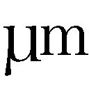

| ～覚醒遺伝子～ 時かける翼 (電撃文庫) | |
| 中村 一 | |
| 株式会社KADOKAWA (2015) | |
本書（電子版）に掲載されているコンテンツ（ソフトウェア／プログラム／データ／情報を含む）の著作権およびその他の権利は、すべて株式会社ＫＡＤＯＫＡＷＡおよび正当な権利を有する第三者に帰属しています。
法律の定めがある場合または権利者の明示的な承諾がある場合を除き、これらのコンテンツを複製・転載、改変・編集、翻案・翻訳、放送・出版、公衆送信（送信可能化を含む）・再配信、販売・頒布、貸与等に使用することはできません。
血まみれで地面に横たわる男は、うっすらと両目を開いた。
瑠璃色の瞳をした少女が傍らに立ち、自分を見下ろしている。ふわふわとウェーブした髪は絹糸のように白く艶やかで、ゆっくりと風に揺れている。
男は震える右手を持ち上げ、少女に向けてそれを伸ばした。
「痛い？」
澄んだ声が、耳を打つ。
少女は無邪気な笑みをその顔に浮かべ、続けた。
彼女の両手首にはめられた銀の腕輪が、きらりと光る。
「でもさ。そんなのあたしが味わった痛みに比べたらさ、カワイイもんだよね」
「......悪魔、め」
男が絞り出した言葉を聞いて、少女は少し困ったように眉を下げた。
「失礼だなぁ。コレ植え付けたの、あんたたちでしょ？」
細い首をひねり、自らの背に視線を投げる。
「ま、別にいいけど。悪魔でも。......あたし、天使なんか嫌いだし」
「機関をどうする......、つもり、だ」
少女は目だけを動かして、男を見た。
「べつに。どうでもいい。この施設はもう、ボロボロだし。それよりも『眠り姫』を探して──」
「無理、だ......。ここを離れれば、その『翼』を維持する、ことなど......」
そう言った直後に男が咳き込み、どす黒い血の塊を吐いた。
その様子を冷ややかに眺めながら、少女が呟く。
「うるさい。今にも死にそうなくせに」
荒かった男の息が次第にゆるやかになり、その命の灯火が小さくなってゆく。
少女は興味をなくしたように背を向けて、どこまでも無感情な瞳で、曇った空を見上げた。
「『自由になりたい』って思ってたけど......、いざなってみると、案外つまんないな」
不意に一陣の風が巻き起こり、少女の白い髪が揺れる。
次の瞬間、その両足は地面を離れ、細い身体は果てしない空へと吸い込まれていった。
ぼんやりとした光に浮かび上がるその姿に、彼の視線は釘づけになる。
薄暗い部屋。広さはよく分からない。
音もなく静かに充満する闇が、部屋の四隅を見えなくしているからだ。
部屋の中央、彼の目の前にそびえるのは、大量の水で満たされた大きなガラス管。いや、円筒形の水槽と言ったほうが適切か。
そして、両目を閉じ膝を抱えて水のなかに浮かぶ、ひとりの少女。
たゆたう彼女の白い髪と、透き通るような白い肌が眩しい。
彼は水槽の前に立ち尽くし、少女の背に折り畳まれた『黒い翼』を見つめていた。それは、左右で大きさが少しずつ異なっている......。
少女がゆっくりと、目を開く。瑠璃色の瞳がふたつ、淡く光る。
まさに神々しいという表現がふさわしい、見る者が見れば畏れさえ抱くような、美しさ。
それなのに彼の胸中を満たすのは、甘美な憧れでもなく、憂いに満ちた哀愁でもない。
──『天使』という概念。その背に在る『翼』というオブジェクト。
やがて、夢の世界にひとつの音が響き渡る。高く細く、空気を振るわせる波長。
それは、水槽の分厚いガラスにヒビが入る音だ。
一カ所に生じた綻びはあっという間に水槽全体へと広がり、透明の円柱は無数の亀裂で覆い尽くされる。それと同時に、儚い少女の姿は見えなくなる。
爆発音とともに訪れる、崩壊の瞬間。
溢れ出す大量の水。スローモーションのように、砕け散ったガラスが闇に浮かんで瞬く。
今まさに彼の身体が押し流されようとするとき。
世界は暗転し、全ては闇に包まれる。
彼の脳裏に瑠璃色の光が浮かんで、消えた。
そして、夢は終わりを迎える。
＊
柴田晴友は目を開いて、大きく息を吸い込んだ。
覚醒したばかりの脳に酸素が行き届き、思考の歯車がゆっくりと回り始める。
夢の余韻が揺れ、晴友は無意識のうちに小さく呟いていた。
「......夢にまで見るなんて、笑えるよなぁ」
ベッドから降り、あくび混じりで服を着替える。
首を巡らせてカーテンが開け放たれた窓の向こうを見てみれば、まだ外は暗かった。
晴友は部屋のなかを満たす冷えきった空気に身震いしながら、夢で見た少女の印象を振り払うかのように、頭を軽く振る。そして机の上に置いてあった携帯を摑むと、ドアを開けて部屋を出た。
十畳程度の広さしかないリビングに入ると、母親がソファに座って新聞を読んでいるところだった。こちらに気付いて、ゆっくりと顔を上げる。
「起きたのね。──母さん、もうすぐ出るから。悪いけど朝、自分で用意してね」
「あぁ。いいよいいよ別に。食わないし」
晴友の答えに、母親は短いため息をついた。
「朝ご飯くらい、ちゃんと食べなさい。......作ってあげられない母さんが言えないけど」
「いいって。仕事なんだからさ。無理すんなよ」
フルタイムで働く母親の給料が、すなわちこの家の収入である。それを承知しているからこそ、晴友は母に優しい言葉を投げ返した。
新聞を読み終わりそれを畳んだ母親が、両手を持ち上げて伸びをする。
「......あぁ、なんだか、肩がこる。背中も痛いし」
「『蝶紋斑』じゃねーの」
軽い冗談のつもりだったが、母親は笑わなかった。
傍らに置いた新聞の一面記事を横目で見ながら、言う。
「違うわよ。あれは痛みを伴わないっていうじゃない。......ちょっと晴友、母さんの背中見てちょうだいよ」
「やーだね。年頃の息子にそんなこと頼むもんじゃねぇよ」
『蝶紋斑』──。
その名の通り、蝶を思わせる形の痣が背中、それも肩甲骨のあたりに発生する症例だ。
患者によっては多少の違和感を訴えることもあるが、基本的に痛みは感じないという。
今のところ原因は不明であり、皮膚病の一種ではないかと考えられているそうだ。
......といった通り一遍の解説が晴友にさえできてしまうほど、『蝶紋斑』はこのところメディアを賑わせていた。
痛みもなく痣ができるだけの病気がなぜこれほど騒がれるのか──、その理由は、爆発的な感染者の増加だ。初めて発症者が確認されたのはわずか数カ月前。その後、厚生労働省に報告された感染確定者は既に一万人を越えるという。
『原因不明』『感染者急増』という刺激的なフレーズに話題性を見出したメディアがこぞって取り上げるのも、無理からぬことなのかもしれない──。晴友はそう考えていた。
母親がバッグとマフラーを摑み、ソファから立ち上がる。
「じゃ、行ってくるわね。夜は遅くなるから......、あんた、それ使って適当に食べなさい」
指差す先を見れば、ダイニングテーブルの上に置かれた二枚の紙幣が目に入った。
こちらの返事を待たずに母親はリビングを出て、やがて玄関からドアの開閉音が響く。
ひとり残された晴友は短くため息をつくと、ソファに置かれた新聞を取り上げた。
一面で大きく取り上げられている『蝶紋斑』の記事を斜め読みしてから、社会面を開く。
何気なく眺めた紙面の端にあった小さな記事が、晴友の意識をとらえた。
「......」
それは、『古代有翼種文明の遺跡が何者かによって荒らされている』というニュースだった。
古代史のなかでもひときわマイナーな一分野である有翼種文明は、『蝶紋斑』の記事とは対照的に世間からほとんど注目されておらず、メディアにおける扱いも小さい。
しかし晴友にとっては、関心を寄せずにはいられないニュースだった。
──古代有翼種文明。
気が遠くなるほどの遥かな昔、この世界に存在し、今は存在しない、失われた文明。
文字通り天使のような姿をした者たちが築いたとされる、古代高度文明のことだ。
翼や天使といった言葉の空想めいた響きのせいか、正式な学問分野としての知名度はいまひとつ低い。
『この研究分野は、とにかく人気がなくてな。各地に散らばる貴重な遺構の管理も、呆れるほどずさんなもんだ。......父さんが苦労して書いた論文だって、いったい、何人が読んでくれているのやら』
あれは、いつだっただろうか。父に手を引かれて、有翼種文明の遺構を見学しに行ったときだろうか──。
山道を登る父の背中から響いてきた、どこか自嘲的な、しかしどこか楽しそうな呟き。
それが、不意に晴友の脳裏によみがえった。
──その、マイナーな有翼種文明の遺構を、荒らす？ 誰が？
「そんなことして......、どうなるってんだ？」
拭いきれない違和感が、晴友の胸中を静かに満たしてゆく。
いつしか彼は新聞を置き、リビングを出て父の書斎である洋間に足を踏み入れていた。
北向きの薄暗い部屋には壁一面に本棚が並び、机の上には雑多な書類が積み上げられている。部屋に充満する古い紙の匂いが、晴友の鼻をかすめた。
振り返り、自分が通ってきたドアを内側から見る。そこには、色あせた画用紙にクレヨンで拙く描かれた、天使の絵が貼ってあった。
晴友がまだ幼い頃、父にプレゼントしたものだ。父はいたく気に入ったらしく、何度も褒めてくれた。
「......」
晴友は机に近づき、書類の山の一番上に置いてある紙束を摑み上げた。それは父の手による論文で、クリップで留められた表紙には『放射性炭素年代測定と遺伝子解析による古代有翼種の考察』と書かれている。
高校の教師でもあり、同時に『古代有翼種文明』研究の第一人者でもあった父がこの家に帰らなくなってから久しい。
しかし母も、晴友も、この部屋を片付けようとはしない。この書斎に滞留する時間はずっと止まったままなのだ。
父は古代有翼種文明の遺構における実地調査の際、不慮の落盤事故に遭いその命を落とした。
『天使の声はな、純真無垢な子どもにだけ、聞こえるんだ』
そんな伝承を無邪気に信じる父と、父が夢中になった天使という存在が......、幼い晴友は大好きだった。
──けれども、今は。
晴友は手にした論文を机の上に無造作に放り投げた。ばさりと音を立て、書類の山が傾く。
ドアに貼られた天使の絵を眺めながら、ぽつりと呟く。
「──ほんと、バカみてぇだよ」
ノブを摑み、書斎をあとにする。
登校するため家の外に出た途端、身を切るような寒さが襲いかかってきた。
晴友は両手をコートのポケットに突っ込み、マフラーに口元を埋めて歩き出す。駅へと向かう人波に乗り切れぬまま、彼の思考はひとつの想いにとらわれていた。
──それは先ほど、新聞の隅で見かけた記事のこと。
有翼種文明の遺構を盗掘したからといって金品が見つかるわけではなく、学術的価値の高い出土品が高額で闇取引されているという話も聞かない。
それなのにわざわざ遺構を荒らそうとする人物像が、どうしても思い浮かばないのだ。そのことが晴友のなかの違和感を大きくし、心に波風を立てる。
やがて、最寄りの駅に辿りついた。流れるように改札に吸い込まれ、上り線のホームに続く階段へ。
いつもの駅。
いつもの満員電車に、半ば無意識のまま揺られること、三十分。
見えない力に押し出されるようにして、鉄の箱から吐き出される。
改札を抜けて通学路を歩いていると、後ろから声をかけられた。
「おう、柴田」
クラスメイトの中井が駆け寄ってきて、並んで歩き出す。
「あぁ。おはようさん。寒いね相変わらず。こうも寒いと、どっかの温かい穴蔵に引きこもりたくなるよな」
「冬眠かよ......。お前さ、それより勉強してる？ 今週、物理のテストあんだろ？」
「なにそれ、美味いの？」
「ちゃんと勉強してるヤツには、美味いのかもしれん」
軽口に付き合ってくれるお人好しの中井に心のなかで感謝しつつも、晴友はさらにふわふわとした会話を続ける。
「他人の不幸は蜜の味、ってヤツか」
「分かるような分からんような......」
中井はそう言って、肩をすくめた。
しばらくお互い無言のまま、ゆるゆると歩き続ける。
しばらくして、中井が再び口を開いた。
「『蝶紋斑』って最近よく聞くじゃん？」
「あぁ」
「二組と──、あと五組だったかな。かかったヤツ、いるらしいぞ」
「ふぅん。そいつはお気の毒。......ってこともないか。別に痛くねぇんだろ？」
朝の、母親との会話を思い起こす。
「なんなんだろうな、『蝶紋斑』」
中井の生真面目な横顔が、晴友の軽口を加速させた。
「さーあね。悪の秘密結社が、秘密裏に烙印押してんじゃねーの」
「相変わらずお前は適当っつうか、自由闊達というか」
さすがに中井も、少々呆れ顔だ。
晴友はすかさず切り返す。
「適当？ いつだって大真面目ですよ、俺は。失敬な」
「そりゃ悪かった。許せ」
中井がもう一度、肩をすくめてため息を吐いた。
会話が途切れる。
と、少し歩いたところで、中井が突然上半身をねじって、晴友の耳元で囁いた。
「綺麗なお姉さん発見だ」
見れば、グレーのスーツにモッズコートを羽織った女性が、道の向こうから歩いてくる。
艶のある髪はポニーテールのような格好で結い上げられ、長い前髪の一束が白く染め抜かれていた。
と、女が不意に立ち止まり、じっとこちらを見ていることに気付く。
晴友は中井と顔を見合わせたが、そのまま歩みを止めずに、女とすれ違った。
「──」
刹那、背中に強い視線が向けられているような、錯覚。
しかし、すれ違った途端に興味を失い、晴友は後ろを振り返ることもなかった。
＊
睡魔や疲労と闘いながら、退屈な一日をなんとかやりすごす。
やがて訪れた、待望の下校時間。
晴友はクラスの誰よりも早く校舎を飛び出し、帰路についた。
早足に駅まで歩き、改札を抜ける。
ホームに到着した電車に乗り込んで、ドアの前に陣取った。
窓の向こうに流れる、いつもと同じ、見飽きた景色をぼんやりと視界に収める。
長いような短いような不確かな時間を経て、いつしか電車は自宅の最寄り駅に到着した。
しかし、晴友はなぜか降りなかった。
「......」
頭では分かっていたが、身体が動かなかった。
ドアが、閉まる。
電車はさらにいくつもの駅を通り過ぎ、乗客がひとり、またひとりと降りてゆく。
そして。
一時間後。
到着したのは、山地の入り口に位置する小さな駅だった。
ホームに降り立った晴友の顔に、街中よりもさらに冷たい風が吹き付ける。
見慣れない制服に身を包んだ晴友を胡散臭そうな視線で見る駅員と目を合わせぬようにして、改札を抜けた。
駅前に立ち空を見上げると、厚い雲が垂れ込めていて、まだ日没前だというのに薄暗かった。
......どちらに行けばよいのかは、分かっていた。ここはかつて父に連れられて、何度も訪れた場所だからだ。
十分ほど歩き、古代有翼種文明の遺構へと繫がる登山道に辿りついた晴友は、どこまでも続く坂道をゆっくりと登り始める。
晴友の脳裏には、かつてこの山道を歩きながら父と交わした会話が甦っていた。
『現場に出て本物を見て、本物に触れてこそ、本当のことが分かる。──本ばかり読んでても駄目だぞ。......たとえば化石ひとつをよーく観察するだけで、ずいぶん色々なことが分かるもんだ。古代有翼人種の、翼の成り立ちとかな』
『ツバサを生やすためには、「材料」が必要だったんでしょ？』
『......ハルは本当に不思議な子だな。まだ発表もされてない学説を、どうして知ってる？』
『さあ？ 分かんない。なんだか知んないけど、知ってる』
『父さんも、お前にそんな話をした覚えはないしな。......でもな、その通り。ハルが正しい。翼の発現には、あるひとつの遺伝子が深く関わっていると推測される。けど、どうやらそれだけじゃ駄目なんだ。材料となる「核」がないと、翼は生えない。──ちょうど、アコヤ貝の真珠みたいにな』
『しんじゅ？ 母さんの首飾りとかについてるヤツ？ どうしてそれが、ツバサと同じなの？』
『生体鉱物である真珠の生成には、外套膜という「核」が貝の体内に入り込む必要があるのさ。天使の翼についても、同じ理屈が当てはまる──、つまり、材料となる「翼の核」とも言える構造体が前提として体内に存在し、そこに翼を発現させる遺伝子が働きかけることによって、初めて目に見える「天使の翼」が形作られるのではないか──。そんなふうに、父さんは考えてるってわけだ』
『ふーん。......しんじゅのことはよく分かんないけどさ。ぼく、ほかにもいろいろ知ってるよ、天使のこと。たとえば父さんもよく言ってるけど、天使が「相手の心を聞く」ってのはたぶん、ほんとだよ。だってさ......』
晴友は幼い頃から、古代有翼種文明の研究者である父を驚かせる不思議な『特性』を持っていた。
それは、本来知るはずのない有翼種文明や天使に関する知識を、なぜか記憶として持っている、ということ。
父から教えてもらったことを単に覚えている......、というわけではない。
一流の研究者である父が知らない、思いもよらないようなことでさえ、晴友は無自覚に『知っている』ことが何度もあった。
それを無邪気に話すと、父はいつも目を丸くして驚いていたものだった──。
晴友は登山道を外れ、人気のないけもの道へと踏み入った。
そして、歩くこと数分。
山の中腹にぽっかりと口を開けた、大穴と呼ぶにふさわしい洞窟の入り口に、晴友はひとり立っていた。
「相変わらず、荒れに荒れてるよなぁ」
父が嘆いていた有翼種研究のマイナーさを証明するように、遺構には特別な保護も施されておらず、立ち入り禁止柵の内側は雑草が生い茂り荒れ放題だった。
晴友はぼろぼろに腐りかけた木の柵を乗り越え、山の中腹にぽっかりと口を開けた洞窟の奥をのぞき込む。薄暗い闇の向こうに、古代有翼種文明の遺構がどこか不気味に佇んでいるのが見えた。
「さみぃ......」
薄暗い洞窟のなかに足を踏み入れると、そこには冷えきった空気が音もなく滞留していた。
一瞬の感傷、父との会話の記憶が脳裏を滑り落ちてゆくのを待って、晴友は大きく息を吸い込む。冷たく湿った空気が肺を満たし、胸に鈍い痛みを生んだ。
ゆっくりと歩を進め、古代有翼種文明の遺構へと近付く。薄闇に沈む石造りの構造物が、晴友の眼前に迫る。
......今でもはっきりと、覚えている。母や親族と一緒にこの場を訪れ、花を供えたことを。そのときに見た、母の気丈な横顔を。
晴友は首を巡らせて、あたりを見回した。
崩れかけた木製の足場。足元に散乱する岩石の破片と、心ない誰かが投げ込んだ数々のゴミ。
供えたはずの花束は、朽ちてしまったのか、それとも持ち去られたのか。どこにも見当たらなかった。
こんな、場所で。
誰からも忘れられたこんな薄暗いところで。
父は、死んでしまったのだ。
「──」
晴友はゆっくりと、白い息を吐き出す。
そのときだった。
背後に、人の気配がする。
弾かれたように振り返ると、洞窟の入り口に、誰かが立っていた。
淡い逆光に切り抜かれたシルエットは、細身の女の姿。
女が動き、こちらへ近づいてきた。
晴友は僅かに眩んだ目を凝らして、相手を観察する。
「あら......、また会ったわね」
涼やかな声。
女の切れ長の両目が、こちらを真っ直ぐに射抜いている。
コートのポケットの両手を入れ、うっすらと笑っている。
結い上げた髪。一束白く染め抜かれた前髪を見たとき、ようやく晴友は思い当たる。
「今朝の......」
通学路。
中井と並んで歩いていたときに、道の向こうからやってきて立ち止まり、じっとこちらを見つめていた女だ。
「制服のままでこんな山奥へ来るなんて──、あなたずいぶん変わってるわね」
そう言った女の服装は、タイトなスーツ姿。足元に至ってはヒールだ。
とてもじゃないが、山を歩く格好には見えない。
「人のこと言えないんじゃないすか」
晴友は軽い調子でそう言って、相手を観察する。
女は意に介した様子もなく、続けてこんなことを訊いてきた。
「あなたは古代史に、興味がある？ ......とくに『有翼種文明』とか『天使』なんていう単語に、心を動かされてしまう、なんてことはない？」
突然の問いかけに面食らうが、晴友は平静を装う。
「なんすかいきなり。──別に、そんなこと」
口を歪めてそう言ってやったが、女の平坦な表情は崩れない。
「本当に？」
「──え？」
「『天使』を嫌う人間が、わざわざこんな場所に足を運ぶかしら」
「......」
押し黙った晴友をまるであざ笑うかのように、女が口の端を微かに吊り上げた。
「なんなんすか、あんた。──俺を、バカにしてるんですか」
「とんでもない。......わたしはあなたのことが、気になっているだけ」
「......なんだよ、それ」
女は小首を傾げて、控え目な微笑を投げて寄越した。
晴友は気味の悪さと苛立ちを相手に感じ取られないように、腹に力を入れ、意識して低い声を響かせた。
「百歩譲って俺が『天使』を好きだとして──、だったら、どうなんすか」
「少なくともわたしは、嬉しいわね」
「......嬉しい？」
「あなたがわたしたちの理想に近しい、ということになるからよ」
晴友がいくら怪訝な顔をしてみても、女は変わらず涼やかに微笑むばかり。
やがて女はくるりと背を向け、洞窟の入り口へと戻り始める。
「覚醒半ば、といったところかしらね。──いずれまた、会うことになるでしょう」
女はそう言い残すと洞窟を出て、振り返ることもなく視界から消えていった。
取り残された晴友はしばらく闇のなか、呆然と立ち尽くす。
突如現れ、そのままどこかへ消えてしまった女。
まるで夢のような。
幻の──、ような。
とらえどころのない感触が、騒ぐ胸に渦巻いていた。
「なんだってんだ──。今のは」
呟いたとき、洞窟の外から爆音が響いてきた。
どこで聞いたことのある......、そうだ、これはヘリの音だ。
──こんな、山奥で？
湧き上がる疑念が晴友の胸を満たしはしたが、それを確かめるために洞窟の外へと駆け出す気にはならなかった。
晴友は振り返り、洞窟の奥へと目をやる。
ヘリの音は段々と小さく、遠くなってゆく。
無言で歩を進め、闇に沈む遺構──、その基礎部分である石垣に近付く。
晴友は手を伸ばして、石垣にそっと触れてみた。
ざらざらとした、硬い岩石の感触。
その瞬間。耳元で、なにかが弾けるような錯覚。
「っ、なん、だ？」
思わず、両目を閉じる。
そのとき、晴友は信じられないものを見た。
瞼の裏のスクリーンに、見えるはずのない映像がフラッシュバックしたのだ。
......眼前に佇む遺構の、在りし日の姿。遺された基礎部分の上に存在しているのは、塔のように背の高い不思議な建造物。
住居なのか、それともなにか巨大な施設の一部なのか──。見たこともない意匠からは、その用途はうかがい知れない。
次の瞬間、映像がスイッチする。
見えたのは、蒼い空。
美しい翼を翻して飛翔する、古代有翼人種の姿。見上げる空に、舞い散る白い羽根。
また、映像が変わった。
今度は、空から地上を見ている。
見下ろすのは、美しい地上の風景。山、川、海が描き出す、複雑な地表の色合い、その表情。
ふと気付けば、傍らには並んで空を飛ぶ、天使の姿......。
幾多の映像、その瞬きが嵐のように過ぎ去ってから、晴友は恐る恐る両目を開ける。
──そこには先ほどと同じく、もの言わぬ古びた遺構が存在しているだけだった。
「今、のは......」
戸惑いつつも、晴友にはなんとなく分かっていた。
雑多な情報が、自分のなかにどっと流れ込んでくる感覚。
無自覚に知っていた古代有翼人種に関する『知識』が、リアリティのある質感をもって、晴友に迫ってきたのだ。
遺構に触れた指先を、じっと見つめる。
胸中を、刹那の恐怖が通り過ぎる。
見えない力に背中を押されるようにして、晴友は自分の前に立ち塞がる古びた石垣を無造作に蹴飛ばした。
乾いた音が、静謐な闇に沈んだ洞窟のなかに響き渡る。
「バカにしやがって」
そう吐き捨て、晴友はきびすを返す。
......そもそも自分は、ここへ何をしに来たんだ？
相変わらず薄暗くて、じめじめと黴臭い、こんな場所へ。
誰かがここを荒らそうが荒らすまいが、自分には関係ない。
自分はこの遺跡の持ち主でもなんでもないのだ。
晴友は振り返ることもなく、足早にその場をあとにする。
洞窟を出ると、雪が降り始めていた。
辺りを見回すが、さっきの女の姿はない。
立ち入り禁止柵を乗り越えようとしてそれに手をかけたとき、ふと、空を見る。
どこまでも広がる灰色の雲から、真っ白なぼたん雪が、音もなく落ちてくる。
ちょうどそれは、天使の羽根に見えないこともない......。
そんな連想を晴友は心のなかで一笑に付して、視線を元に戻そうとした。
──そのとき。
なにかが、視界の隅をよぎった。
灰色の雲。白い雪。このふたつしか存在しない空のどこかに、別の色が現れた気がしたのだ。
晴友は目を凝らし、その方向......、西の空を見る。
「なんだ、あれ」
なにかが。
落ちてくる。
初めは黒い点だったそれは次第に大きくなり、鳥のような形が視認できた。
「鳥じゃ......、ない」
らせんを描くような、心許ない飛行。
信じられないことに、それは人のカタチをしていた。
背中から左右に突き出しているのは、目が冴えるような真っ黒な翼。その大きさは、左右で少しずつ異なっている。
惚けたように空を仰ぐ晴友を尻目に、人形をした飛行者はなおも高度を下げ続ける。
やがて、その姿形がはっきりと分かるほど近くで、飛行者は黒い翼を大きくはためかせた。
バランスが崩れ、空中でよろめくようにしながら、『彼女』は細い片足で地面へと降り立つ。
飛行者は、晴友よりも幼い少女だった。
波打つ髪は白い絹糸のようで、肌も透き通るように白い。
真っ黒な服に身を包んだ少女が、ゆっくりと目を開く。
舞い散る雪のなか、瑠璃色の瞳がふたつ、淡く光った。
「......あ」
あまりの出来事に、晴友は声を出すことができない。
自分が驚いているということを、数秒遅れてようやく認識する。
──瓜ふたつ、だった。
夢で見た、薄暗い部屋。その中央にそびえる、水で満たされた大きな水槽。
そこに浮かんでいた『天使』と、目の前に立ってこちらを見ている少女。その外見的な特徴は、まったくと言ってよいほど一致していた。
少女がついと顎を上げ、空を見た。
「やっぱまだ、上手く飛べないや」
澄んだ声音が、鈴のように響く。
彼女は一度自分の背中へと視線を投げてから、晴友に向き直った。
どこか皮肉めいた笑みが、整ったその顔を彩る。
「あんた、どっかで見たことある気がする」
「な、なに言って」
彼女は小さく鼻を鳴らすと、興味を失ったように晴友から視線を外す。
「どうでもいいや。......ていうかこんなとこに『眠り姫』、いるわけないよね」
そうひとりごちながら、晴友の背後で口を開いている洞窟をのぞき込む少女。
その背に揺れている黒い翼に、晴友の目は釘付けになる。
「──て、んし？」
弾かれたように顔を上げて、少女が晴友を睨みつけた。
「いま、なんて言った？」
「え？」
「あたしのこと、天使呼ばわりしたでしょ」
少女の声は相変わらず高く澄んでいる。しかしその瞳には、純度の高い敵意がちらちらと瞬いていた。
「だったら──、なんだってんだよ」
かろうじて絞り出した声は情けなくかすれ、尻すぼみになってしまう。それほど、自分を射抜く少女の視線には力があったのだ。
晴友はさらに言葉の矢を継ごうと、息を吸い込む。
それなのに、なぜか口を開くことができない。
奇妙な、感覚だった。
放つべき言葉を必死になって探そうとするのだが、どうしてもそれが見つからない。明らかに鈍重になった思考の歯車を認識して初めて、『自分が眠い』のだということに気付く。
なんの前触れもなく不意に、抗えない睡魔が晴友を襲ったのだった。
──なんで、突然？
そんな疑問を感じはするものの、すでに意識は眠りのなかへ引き込まれようとしていた。
瞼が重くなり、両足に力が入らない。
このままでは、立っていることさえできない。そんな危機感を抱いたのも束の間。
次の瞬間、晴友の意識は暗転する。
＊ ＊ ＊ ＊ ＊
黒い翼の少女は口を閉ざしたまま、地面に横たわる晴友を見下ろしていた。
疑わしそうに目を細め、小さな唇を尖らせる。
「......こいつ、保因者？ でもツバサはないし、機関でも見たことない......」
短く息を吐いてから、少女は腕を組んだ。
「ヘンなの。なんか、ヘン。羽根の匂いに引っ張られてここへ来たけど、『眠り姫』はいないし」
晴友の顔を、まじまじと見つめる。
「ひょっとして、こいつのせい......？」
それからおもむろに、少女は首をぶんぶんと横に振った。
弾みをつけるようにして、ぴょんと後ろに一歩後退する。
「どうでもいい、か」
呟き終わるやいなや、右足で地面を軽く蹴った。
その身体が、音もなく空へと浮かび上がる。
＊ ＊ ＊ ＊ ＊
気がつけば、そこは空だった。
慣れない浮遊感が生み出す恐怖心と戦いながらも、晴友はどこか冷静に、自らの状況を認識する。まるで空を駆けるように身体を動かすと、面白いように高度が上がってゆくのだ。
視界に映る地上の風景はどんどん小さくなり、ほの白い雲の切れ端をかすめるようにして、晴友は空を飛ぶ。
信じ難いシチュエーションに騒ぐ心とは裏腹に、どこまでものっぺりとした静寂が辺りを支配していた。
──そうか。
これは、夢だ。
晴友の意識が、ゆっくりとそのことを認識する。
ふと横を見ると、あの、黒い翼の少女が隣を飛んでいる。彼女の飛行はどこかぎこちなく、左右で大きさの違う翼が強い風を受けて悲鳴を上げている......、ような気がした。
皮肉のひとつでも言ってやろうとして、晴友は言葉を探し始める。選びあぐねていると、不意にこちらを見た少女が口を開いた。静寂のなか、澄んだ高い声が耳を打つ。
「あんた、飛べるの？」
「......らしいな」
自分でも驚きながら、晴友は呟いた。
それを聞いた少女が、口の端をわずかに吊り上げて笑う。
「『優性系統』ってことなら......、機関の連中、間違いなく大喜びだね」
「......キャリア？」
「有翼の遺伝子を、持ってるってこと。──『天使』ってことだよ」
理由は分からなかった。
けれども少女が放ったその言葉に、晴友の感情が過敏に反応した。
「......ふ、ざけんな。俺は......、俺は天使なんか」
必死で絞り出した言葉は、少女の薄ら笑いに弾き落とされてしまう。
「なに？ やなの？」
「......」
「そんな立派なツバサ生やしといてさ。疑いの余地なしだよ。認めたら？」
晴友の意識が、自らの背へと向けられる。
──そこに、在るもの。
空を飛んでいる自分。
あやふやな、浮遊感。
並んで飛ぶ少女との、どこかちぐはぐな会話──。
そのときだった。
少女の黒い翼が......、吸い込まれてしまいそうな漆黒の羽毛が不意に大きく広がり、晴友の視界を覆った。
そして世界が、反転する。
＊ ＊ ＊ ＊ ＊
「──あっ、気がついたね」
そんな声が、意識の表面をそっと撫でる。
目を開いて、初めに見えたものは白い天井だった。同時に、自分が病室らしき場所のベッドに寝かされているのだということを理解する。
ゆっくりと首を動かすと、見知らぬ女性がベッドの脇に立ち、晴友の顔を上からのぞき込んでいた。小柄で幼い顔立ちをしているが、晴友よりは歳上──、二十歳くらいだろうか。
意志の強そうな、大きな瞳が印象的だ。
「気分はどう？ どこか痛いとこある？」
女性は晴友の手を取り脈を測ってから、てきぱきとした動作で全身をチェックしてゆく。
「......ん、大丈夫みたいね。あ、ところどころに巻いてる包帯は、かすり傷ばっかりだから。多分地面に倒れたときに、できた傷だと思う」
ここはどうやら病院で、ベッドに寝かされた自分の状態を確認してくれているこの人は、看護師というところで間違いないだろう。
やがてチェックは終わったのか、女性は手を止めると、胸元につけた小さなネームプレートを指先で引っぱりながら、自己紹介をしてくれた。
「担当看護師の半井詩奈です。よろしくね、柴田晴友くん」
「......あぁ、どうも」
晴友はベッドに横になったまま、顎を軽く引いて会釈を返す。
「──」
詩奈は黙ってこちらを見たまま、にこにこと笑っている。
眠りから覚めたばかりで、晴友の思考は思うように転がらない。
普段のように、とっさの軽口も出てこない。
とくに喋ることもなく、ぼんやりと相手の様子を見つめるしかなかった。
......そのまま、数十秒が経っただろうか。
突然、詩奈が大きな声を出した。
「んーもうっ、なんで訊いてくんないのかなぁ！ ......ねぇねぇ、ちょっとさ、気になることとか、あるんじゃない？」
「......は？」
呆気に取られる晴友を見て、詩奈はさらにじれったそうに顔をしかめた。
「だからぁ！ 『ここはどこですか？』とか、『どうして僕はここに？』とか『誰が運んでくれたんですか？』とかさぁ！ 気になるよね？ 気になってるんだよね？」
「あぁ。......そう言われると確かに、気にはなります、かね」
「なら訊こうよ！」
「はぁ」
晴友は苦労して、思考を前へと押し出す。
ようやく、それは少しずつ転がり始めた。
「ひょっとして、あなたが運んでくれたんですか？」
詩奈がびっくりしたような顔をして、目を見開く。
「どうしてそう思うの？」
「いや、べつに。そうだったら素敵だなー、なんて」
口から出任せ、とまでは言わないものの、軽い気持ちで形ばかりの言葉を放つ。
一瞬でそれを見抜いた詩奈は、一転して呆れた声を出す。
「適当言ってるね、きみ」
まるで幼い子どもの駄々を見守る母親のような視線に、晴友の胸がざわりと波打つ。
曖昧な表情で目を泳がせる晴友を尻目に、詩奈が再び口を開き、饒舌に喋り始めた。
「わたしも今日、遺構の様子を見に行ったの。夜勤シフトだから、ちょっとだけ早く家を出て、出勤途中にね。......遺構ってのはもちろん、古代有翼種文明の、だよ。──まぁ正直、驚いた。メディアでも小ーっちゃくしか取り上げられてない『遺構荒らし』のニュースに興味を持って現場に足を運ぶ人が、わたし以外にもいる──、それも先を越されたなんて、ね。......そんな物好き、せいぜい、ちなつさんくらいだと思ってたから」
詩奈の舌はさらに滑らかになり、もはや晴友が口を挟む余地はない。
「......びっくりしたよ。あんな山奥の人気のない洞窟に若い男の子の先客がいて、しかもその先客は意識を失って地面に倒れてたんだから。雪も降ってたし、あのままだと氷漬けになってたよ！ ──それですぐに救急車を呼んで、わたしも同乗して、ここまで来たってわけ」
まさかあの場所に、自分以外の誰かが足を向けるとは......。詩奈が口にした驚きを、晴友自身も密かに抱く。
荒れ果てた遺構、その寂しげな光景が思い浮かんだ。
「なんであんな場所へ──、行こうと思ったんすか？」
すると詩奈は目を丸くして、素っ頓狂な声を上げた。
「どうして？ そんなの、好きだからに決まってるじゃない」
「好き、だから......？」
「そうだよ！ 晴友くんはどうなの？」
問われた途端、晴友は一瞬口ごもる。
「......なんでしょうね。気がついたらあそこにいましたよ。ひょっとして、ひとりになりたかったんですかね？」
詩奈の綺麗な目が、音もなく細められる。
しまい込んだ感情を見透かされたような気がして、晴友はひやりとした。
「ふぅ。......心を閉ざしてるな、少年」
短いため息をついた詩奈が、どこか諦めるような口調で言う。
「それともまだ、身体が本調子じゃない、かな？ ......どっちにしても、わたしひとりで騒いじゃった。ごめんね」
小さく舌を出した様子が可愛くて、晴友は思わず見とれてしまった。
少々照れくさくなって目を逸らそうとしたちょうどそのとき、病室のドアが開かれた。
入ってきたのは壮年の、男の先生だった。三十代半ばくらいだろうか──。外見的にはくたびれた感じはなく、ストライプ柄のシャツの上に白衣を羽織り、使い込んだ聴診器やＩＤカードを首からぶら下げている。
男の先生は詩奈を見て、驚いたような声を上げた。
「詩奈くん？ ......どうして、旧棟勤務のきみがここにいる？」
「えぁっ、いえその！ ちょっと成り行きで患者搬送のお手伝いをしてたら──」
明らかに動揺している詩奈。
男の先生はその様子を見て、ゆっくりとため息をついた。
「さっきナースステーションで『救急車に同乗して患者を特別病棟まで引っ張ってきた看護師がいる』という話を小耳に挟んだんだが......、やっぱりきみのことだったか」
「そんなぁ、わたしってば注目の人ですか？」
「他病棟の規律を引っ搔き回したんだ。......各方面との関係修復は念入りにな」
「はぁい......」
分かりやすくうなだれる詩奈。
「とにかく、早いところ自分の持ち場に戻るんだな。今日も皮膚科外来は『蝶紋斑』患者で溢れ返っているんだろう？」
「そうなんですよぉ。新聞とかに載り始めちゃってからというもの、一日の外来対応数はうなぎ登りで......。ほんともう、殺伐としてるんです、ウチの現場」
うなだれたまま、その声のトーンはどんどん下がってゆく。
「──え？ 皮膚、科？」
思わず晴友が漏らしてしまった声に、先生が反応する。
「どうした？」
「さっき、担当看護師って言いませんでした？」
「あっ、あれはちょっとした冗談！ かるーいジョークだよっ」
詩奈が慌てふためいた様子で、両手のひらをこちらに向けてぶんぶんと振りながら後退する。先生の胡散臭そうな視線を受け流しつつ、ドアを開けて半身を廊下へ出した状態、今まさに退散しようとする寸前に、詩奈は晴友を見て一転優しい声で語りかけてきた。
「晴友くん？ お説教っぽくなっちゃうけど、ひとつだけ。──あのね、思ってることをちゃんと言葉にしないと、自分の気持ちは絶対に......、絶対に相手には伝わらないよ」
大きな瞳が、なにかを思い起こすように、柔らかく細められた。
「わたしも昔、そうだったからさ。──自分の気持ちを胸にしまい込んで、うわべばかりの言葉をバラまいて、ね」
「......」
「じゃね、また来るかも。今度はちゃんとお話ししようね」
ひらひらと手を振って、詩奈の姿が消える。
一呼吸置いてから、男の先生が晴友に向き直る。
首から下げた銀色の携帯灰皿に指先で触れながら、にやりと笑った。
「やれやれ。ようやく自己紹介できるな。俺は、特別内科の柳原月雄だ。よろしく。──きみの親父さん、柴田先生には、学生の頃、大変世話になった」
そう広くはない病室、備え付けの椅子に腰かけた月雄が、晴友と向き合う。
話を聞いてみれば、やはり晴友は遺構で気を失って倒れており、発見した看護師の詩奈がこの病院──聖真医科大学病院──への搬送をサポートしてくれたらしい。生徒証などの所持品から学校、家庭へと連絡が取られ、今は仕事を切り上げた母親がここへ向かっている途中とのことだった。
「お母さんと話をして、本当に驚いたよ。運び込まれてきた『眠り病』患者がまさか......、俺の尊敬する先生のご子息とはね」
「──尊敬、ですか」
晴友の無感情な呟きに、月雄はどこか遠い目をしながら相槌を打つ。
「ああ。あのとき柴田先生と......、先生の書いた論文と出会わなければ、今の俺はなかったと思っている。だからこそ、柴田先生が亡くなったという話を聞いたときは、とても驚いた──」
そうして月雄が述べた哀悼の言葉は、晴友の心の表面を滑り落ちてゆく。
晴友は目を逸らし、どこか嘲るような笑みを浮かべ、おどけた口調で言う。
「まぁ、のめり込んだ研究の実地調査中に死ぬなんて、父も本望だったんじゃないですかね」
そんな晴友の横顔を見て、月雄は短く息を吐いてから、再び語りかける。
「もうじきお母さんがここに到着されるだろうが、俺もこれから別の仕事がある。まずはきみに今回の病状について説明しておこうと思うが......、いいかい？」
「さっき──、『眠り病』って」
晴友にも、その病気に対する予備知識はあった。
それは、何の前触れもなく患者が深い眠りに落ち、やがて体内で暴走する自らの骨に身体を破壊されて死に至るという、恐ろしい病だ。
流行初期においては発症原因も分からず、この街でも、全国的に見ても、数多くの死者を出した。......しかしそれも、昔の話だ。今では効果的な治療法も確立されており、発症者数、死亡者数もぐんと減っている。
「世間一般的に、『眠り病』の原因は特定の遺伝子異常とされているが......、それを『異常』と呼ぶかどうかについては、微妙なところでね」
月雄は椅子に座ったまま足を組むと、そう切り出した。
「柴田先生のご子息たるきみにこんなことを訊くのは憚られるが......、『有翼の遺伝子』というものを、知っているかな」
「言葉だけなら。......そういえば、父さんの論文が医学界から注目されたって、聞いたことがあります」
月雄が浅く頷く。
「かつて柴田先生が取り組まれておられた、古代有翼人種の遺伝子解析。我々はそこに、『眠り病』解決の糸口を見つけたというわけだ」
「それで......、俺は」
「きみの症状は、まさに『眠り病』そのものだった。原因となる遺伝子を調べてみたところ、発症条件と完全一致している。......きみは有翼の遺伝子の保持者ということで間違いない」
「有、翼の......？」
「だが、その発症の根拠については不明だ。通常はなんらかの共鳴現象を疑うものなんだが──」
そう言って、月雄はいったん言葉を切った。そして、晴友の顔をのぞき込む。
「きみは倒れていたという遺構で、いったいなにを見たんだ？」
穏やかで理智的な瞳の奥底に、どこか挑発にも似た光が明滅する。
晴友は慌てて目を逸らし、さまよう視線を窓へと向けた。
「なにか思い当たることは、ないか？」
「......さぁ、どうでしょうかね。なんか記憶がはっきりしなくて。よく、分かんないっすね」
晴友の脳裏に、黒い翼を持つ少女の姿が浮かんで消えた。
月雄はしばらく黙って待っていたが、やがて小さなため息をつくと、組んでいた足を解いてゆっくりと立ち上がった。
「まあ、至極簡単に言えば、こういうことだ。──きみは突如『眠り病』を発症したが、早い段階でここへ運び込まれ、適切な覚醒処置を施すことができた。よって骨暴走発生の危険もなく、今のところ病状の急激な変化も起きてはいない。とはいえ経過観察のため、数日間は病院にいてもらうことになる。入院の手続きなどについては、後ほど看護師が説明に来る予定だ。──なにか質問はあるか？」
そこで息をついた月雄に、晴友はゆっくりと問いかけた。
「あの......、それじゃ、ひとつだけ」
「なんだい？」
「先生は......、その......、『優性系統』ってなんだか、知ってますか？」
その単語を聞いた月雄の表情に一瞬の緊張が走ったのを、晴友は見逃さなかった。
「──なぜ、そんなことを訊く？」
月雄の瞳が、先ほどと同じく、なにかに挑むような光に彩られる。
その光に、晴友は少しだけ目が眩んだ。慌てて軽口を叩く。
「なんでしょうね。突然......、こう、パッと思いついたんです。いつかどっかで聞いたんでしょうね、たぶん」
「夢で──、きみは誰かに、会ったのか？」
「......え」
どうして、そんなことを訊くんですか......？
同じ質問を、晴友は対峙する月雄に向けて投げてみたい衝動に駆られる。
けれども、想いは言葉に変換されなかった。
すると、どこか優しい顔つきをして、月雄が両手を白衣のポケットに突っ込む。
「いいか？ これから言うことは、全て俺の空想だと思ってくれ。明確な根拠も、強固な裏付けも、そこにはない。確かに在るものは、今は亡き柴田先生への畏敬の念だけさ。......それでもよいのなら、俺はこの口を開こう。......どうだ？」
晴友は思わず背筋を伸ばし、ゆっくりと頷いていた。
「はい......、お願い、します」
「有翼の遺伝子の覚醒には、二種類あると考えられる。......ひとつは、翼を発現させる肉体的なメカニズムの覚醒、そしてもうひとつは古代有翼種文明に関する、記憶の覚醒──。きみが言う『優性系統』とは、前者の素質を持つ存在のことだ」
月雄はゆっくりと歩を進め、病室の入り口へと向かう。
「翼と心。その両方を正しく覚醒させた者こそ、古代有翼人種の末裔、すなわち本当の意味での『天使』というわけさ」
そのとき、月雄が手を触れていないのに、ドアが音もなく開かれた。
廊下にひとりの女の人が立って、こちらを見ている。
先ほどの賑やかな看護師、詩奈ではない。
シンプルなデザインのワンピースを身にまとい、毛糸のカーディガンを羽織っている。すらりとした体軀。
流れ落ちるように艶やかな長い黒髪が、その人の所作に合わせてふわりと揺れた。
その女性の姿を見た途端、晴友は不思議な感傷を抱いた。
それは羨望なのか、郷愁なのか......。
言い表すことができない切なさが、胸中を静かに満たす。
「カンファレンスの時間だよ、月雄」
廊下に佇む女性が、月雄を呼ぶ。その澄んだ声色は、黒い翼の少女に少しだけ似ているような気がした。
「今、行く。......なんだ、わざわざ呼びにきてくれたのか？」
「そうだよ。さっちゃんがプンスカ怒ってたから、申し訳なくて」
そう言って悪戯っぽく笑った女性が、ちらりと晴友を見た。
病室に、僅かな沈黙が落ちる。
ふっ、と、女性が目を細めたような気がした。
『へぇ......。きみは、どっちも持っているんだね』
空耳ではなかった。
確かにそう、聞こえた。
晴友と、月雄と、黒髪の女性。
誰も口を開いていないこの場所で、確かにその声は──、その澄んだ美しい声は、晴友の意識をとらえたのだ。
「......」
金縛りに遭ったかのように動けない晴友を尻目に、女性が優しい笑みをたたえたまま、廊下の向こうへと消えた。続いて月雄が、最後の言葉を残して部屋をあとにする。
「じゃあな、晴友くん。......お母さんが到着された頃、また顔を出すよ」
＊
一時間後。
病室に駆け込んできた母親は、その目にうっすらと涙を浮かべていた。
声もなく晴友の首筋にすがりついたその横顔を間近にして──、あの日、遺構で花を供える母の、気丈な横顔が重なって見えた気がした。
「お父さんだけじゃなく、あんたまで......、もしもあの場所で......」
震える母の喉は、それ以上の言葉を紡げなかった。
自分の前で小さく、頼りなさげに俯く母の様子を目の当たりにして、晴友は脳裏にちらちらと浮かんでいた黒い翼の少女の面影を、強引に消し去った。
遺された肉親である母に。
──そして自分自身に、言い聞かせるようにして。
晴友は小さく呟いた。
「俺は父さんとは違って......、天使にうつつを抜かしたりなんか、しねぇよ」
母のすすり泣きを聞きながら、晴友は詩奈が去り際に残していった台詞を思い起こしていた。
『ちゃんと言葉にしないと、自分の気持ちは絶対に......、絶対に相手には伝わらないよ』
大好きだった父を落盤事故で失い、幼い晴友は底知れぬ悲痛に暮れた。
父の葬儀では、友人や親族が、遺された母と晴友を慰めてくれた。深く悲しみ、一緒に泣いてくれる人がいた。しかしそれでも、彼の心が救われることはなかった。
人々の口から供される慰めの言葉はどれも同じで、重さを感じなかった。幼い彼の心に刻み込まれた傷を塞ぐことは、できなかった。
──言葉なんて、感情を劣化させるだけだ──。
それを尽くせば尽くすほど、純粋な想いや感情はその輝きを失う。言葉という制約に縛られ、型にはめ込まれ、感情は記号化されてしまう......。
晴友がそんな「言葉の無力さ」をことさら嘯くのには、もうひとつ別の理由があった。
父を亡くしたあとも、晴友は父が追い求めた天使という存在を変わらず大切なものとして胸に抱いたまま、成長した。
中学生になった晴友はあるとき、とくに仲の良かったひとりの級友に、古代有翼種文明についての熱弁を振るったことがあった。
天使という概念の不思議さと、古代有翼種文明について想いを巡らせるときに感じる、ノスタルジーにも似た柔らかな感傷──。
なんでも話せる親友になら、それが伝わるかもしれない。
そう思って、晴友は言葉を尽くして彼に語りかけた。
「ふぅん。晴友はほんとにそのユーヨクシュ文明ってのが好きなんだな」
「すげぇ面白いんだよ。他の古代文明とは違って、世界中のいろんな場所に同じような伝承が残されてるとことか。もちろん時代や地域によって多少の違いはあるんだけどさ。大筋はちゃんと一致してるんだ。すごくね？」
「それさ、どうやって研究すんの？ 大昔のことなんだろ」
「分かりやすいところで、文献の調査かな」
「でもそれって、本当かどうか分からねぇじゃん。そのユーヨクシュっての、今はもういないんだし」
「だからさ、俺らが生まれたころに、全身骨格が発見されたんだって！ ずっとマユツバだと思われてたのに、ほんとに化石が出たんだよ。......もう、大変だったらしいよ。研究者たちのあいだでは、とんでもない大ニュースだったって」
「へぇー、化石か。恐竜のならよく知ってる」
「おんなじだよ。放射性炭素年代測定とかやるんだ」
「ホーシャ？ なに？」
「そういう実験方法があるんだよ。崩壊率ってのを調べて......」
「ほんとに詳しいなぁ、お前」
そう言って苦笑する彼は、肝心の内容を正しく理解しているかどうかは怪しかったけれど、いつでも晴友の熱弁に耳を貸してくれた。
だからこそ晴友も、いつかその面白さが伝わると信じて疑わなかった。
──しかし。
あれはいつだったか、どこだったか。
放課後の校舎裏だったのかもしれないし、休み時間の廊下や、賑わう昼休みの食堂だったのかもしれない。
晴友は、その級友が別の友人と話をしているところを、陰ながら聞くとはなしに聞いてしまった。
向こうは晴友に気が付いていない。
聞こえてきたのは、こんな何気ないやり取りだった。
「にしてもお前、いっつも柴田の話に付き合っててエラいよな」
「べつに。テキトーに聞いてるだけだし。ただの暇つぶし」
「でもよ、すげぇマニアックじゃん、あいつの天使話。なんなの、アレ？」
「さぁ？ 現実逃避？ 知らんけど」
「あの『なんでも知ってます』的なとこがイラッとしねぇ？」
「まぁ確かに、小難しくてよく分かんねぇしな」
結局のところ彼らにとって天使という存在は、おとぎ話の域を出ないメルヘンチックな概念にすぎなかった。
晴友の愚直なまでの熱意は斜に構えた彼らに届くことはなく、逆に微かな反発さえ、生み出していたのだ。
どれほどの熱意であっても。
どれだけ、大切な気持ちであっても。
それらがありのまま、自分以外の誰かに伝わることはない。
考えつく限りの......、ありったけの......、言葉を尽くしたところで。
──伝えることは、できなかった。
晴友が言葉の限界を感じ取った、瞬間だった。
それ以来、晴友は言葉と感情を切り離して考えるようになる。
所詮、言葉を使った会話なんて、記号化された感情の無意味なやり取りにすぎない。
そんな彼が望んだもの。──焦がれたもの。
それは、父が生前に唱えていた、天使が行使したという不思議な力だ。
晴友は幼い頃から父の影響を受け、有翼種研究の分野における先進的な学説に当然のように慣れ親しみながら育った。
──天使は『洗脳』という力を使い、他者の肉体を意のままに操ることができる──
この学説は当時、そして今なお主流とされている考え方だ。
古代有翼人種が生きた時代よりずっと後世の人間、つまり無翼人種が書いた文献などを根拠として成り立つ、『洗脳行使論』。
しかし晴友の父は学界においてひとりそれに反対し、異なる主張を提唱していた。
曰く、
──天使が行使したのは『洗脳』ではない。それは『言語を介さないコミュニケーション』であり『他者の心の声を聞く能力』だった──
という説だ。
古代有翼種文明には文字による記録が一切遺されていないことに着目し、言語とは別の情報伝達手法があったのではないか？ という発想によるものだった。
今は亡き父の自信に満ちた声が、晴友の脳裏に木霊する。
『父さんはこの「他者の心の声を聞く力」を「想感応」と名付けた。言語によるフィルタを介さず、自らの想いがダイレクトに相手に伝わる。そこには齟齬も誤解も入り込む余地はない。まさに天使が使うにふさわしい、素晴らしい情報伝達だ』
＊ ＊ ＊ ＊ ＊
薄暗い部屋のなか。
高い天井の一部が壊れており、そこからは星のない夜空が垣間見えた。
部屋の中央に、ひとりの女の姿。
コートのポケットに両手を突っ込み、切れ長の両目が見上げるもの。
それは水が満たされた、円筒形の巨大な水槽だった。
「機関の意志に従い、報告します」
女の背後で声がする。
濃い闇のなかに立っているのは、長身の若い男だ。
がっしりとした体格で、顔にはセルフレームの眼鏡をかけている。
「代替なる翼は、件の少年と接触したようです」
「......共鳴は？」
「会話ログから察するに、少年が『眠り病』を発症しています。──その後、聖真医大に搬入」
女が口を歪める。
「そう。大いなる意志はまたしても、あの場所を舞台に選ぶのね。......眠り姫と柳原くんがいる、あの場所を」
若い男は応えない。
代わりに巨大な水槽を見上げて、眼鏡を指で押し上げる。
「使えるんですか？ この設備」
「あくまで検証機。あのコが壊したセットよりもオペレーションの精度は下がる。けれど、被験体側の『核』の定着に問題はない。発現促進の処理だけなら、ここの機能で充分よ」
「──ならば、一刻も早い回収を」
意気込んだ若い男の台詞を、女は鷹揚に遮る。
「いずれ、自律活動停止の瞬間が訪れる。それからでも遅くはないわ」
「しかし」
「保因者同士は必ず引き合うもの──。慌てることはないわ。飛行データの収集も兼ねて、もうしばらく泳がせておきなさい」
「......はい」
若い男はしばらく押し黙っていたが、やがて、なにかを畏れるような、神経質な声で呟いた。
「『種播き』については、予定通り終了しています」
「──そろそろ畑にも馴染む頃、というわけね」
「本当に『代替なる翼』は、トリガとなり得るんですか？ 自身の『翼』の定着さえ、ままならないのに......」
女が振り返り、切れ長の目を細めた。
若い男は息を吞み、その瞳を見返す。
「結論を急ぎすぎる悪い癖は直らないわね。──被験体の共鳴震度を引き上げる方法については、あなたにだって分かるはずよ」
「ですが、それだと......」
「当然、品質の差異は存在する。『核』ではなく、発現プロセスを司る遺伝子のね。──全ての花が上手く咲くかどうかなんて、誰にも分からないのよ」
平坦な声でそう断じた女に、若い男はなおも食い下がる。
「それが......、『大いなる視点』のお考えなんですか」
かすれた声が、闇に吸い込まれて消える。
女は長い沈黙のあと、口を開いた。
「わたしたちを繫ぐものは、遺伝子に刻まれた、ただひとつの意志だけ。そのことをもう一度、よく考えてみなさい」
靴の踵を鳴らし、女は深い闇へと溶けていった。
眼前の巨大な水槽が放つ青白い光に照らし出された若い男が、静かにその両目を閉じた。
晴友が強いられた入院生活というものは、これ以上ないほどに退屈な代物だった。
起床、就寝、食事、回診、検温......。定められたスケジュールに従い、淡々と日々がめぐってゆく。二日経つと、とにかく『早く家に帰りたい』と思うようになった。
病院に運び込まれて、三日目。
昼食を終えた晴友は、窓から部屋に差し込む昼下がりのうららかな日差しに目を細めていた。
ベッドに仰向けに寝転び、携帯のフリップを開く。
ネットに繫ぎ、染み付いてしまった習慣でニュースサイトのトップページをブラウズする。
主要ニュース欄に躍る文字列が目に入った。
『Ａ市の臨海地域に位置する化学プラントで原因不明の爆発事故が発生』
──それは、遠い県での出来事だった。Ａ市の臨海部には埋め立て地が広がり、コンビナートが形成されている。どうやらそこで事故が起きたらしい。
「原因と死傷者数は不明......、か」
記事詳細画面のテキストを読み上げ、隣に貼られた事故現場の写真を眺めていると、心地良い睡魔が襲いかかってきた。
抗えない誘惑に身を任せてゆっくりと瞼を落とした瞬間に、せわしないノック音が響いた。
晴友は慌てて上半身を起こし、携帯を閉じて枕の下に押し込む。
返事をしたわけではないが、直後にドアが開け放たれた。
「やっほぅ、晴友くん。来たよ！ なんと今日は、お土産ありだ！」
部屋に入ってきたのは、相変わらず底抜けに明るい詩奈だった。
──またか。
担当看護師でもないのに、詩奈は毎日ここにやってくる。検温の時間を告げにきたり、何度も脈を取ったり、ときには包帯を替えてくれたりしながら、一方的にまくしたてるのだ。
皮膚科外来は、『蝶紋斑』患者の対応で火を噴いてるんじゃなかったのか......。
晴友は気付かれないように、そっとため息をついた。
それを目ざとく見つけた詩奈が、口を尖らせて言う。
「『また来やがった』みたいな顔してるね」
「えっ、いや！ そんなことは」
「ふーん。......わたしはただ、きみのことが気になってるだけなの。なんていうかほら、昔の自分を見てるみたいで、ほっとけないというか？」
「は、はぁ」
返答に迷う晴友を前にして、詩奈が気を取り直したように明るい声を出した。
「ところでさ、なんだと思う？ おみや」
悪戯っぽく笑う詩奈。
「......さぁ、なんすかね。どう見ても手ぶらですけど。どっかにケーキでも隠し持ってんですか？」
「ぶぶー、残念！ もっともっと、晴友くんが喜びそうなネタを持ってきたよっ」
「ネタ？」
「そ！ テレビ見てないみたいだし、談話室に新聞読みに行ってる様子もないみたいだし。晴友くん、世間の情報に飢えてるかなー、って思って」
「......あぁ、えーと」
晴友は枕の下に隠した携帯に、密かな意識を投げた。
ニュースなら、こいつで──。
病院では決められた場所以外は携帯の使用が禁止されているので、敢えてそのことをここで申告するつもりはないが。
詩奈は晴友の逡巡を知ってか知らずか、これから悪戯をしかける子どもみたいな顔をして、晴友の目をのぞき込む。そして、口を開いた。
「わたしや晴友くんにとっては、面白いニュース。......あのね」
詩奈の大きな瞳に揺れる光に引き寄せられるように、無意識に耳をそばだててしまう。
「国立博物館に展示されてる有翼人種の化石がね......、盗まれたんだって」
「......」
──誰が？ 何のために？
言葉を返すより前に、そんな疑問が胸中を駆け巡る。
あの日の朝、新聞で『遺構荒らし』の記事を読んだときと同じ感覚だった。
思考の底に滞留する違和感。そして、漠然とした不安感──。
「なんすかそれ。そんなもん盗んで......」
「だよねぇ！ どうするんだろ？ って思うよねぇ」
詩奈が目をきらきらさせながら、顔をずいと近づけてくる。なんだか良い匂いがふわりと鼻をかすめて、晴友は慌てて半身を退きながら照れ隠しに小さく呟いた。
「セキュリティだってキツいでしょうし......。リスクに見合ったメリットがあるとは......」
晴友の反応が良いことが嬉しいのだろうか。詩奈はどこか満たされた表情で深く頷く。
「その通り。だって、ねぇ？ 化石だよ？ そりゃわたしだって、天使好きだから『近くで見たい』『触ってみたい』っていう欲求はあるけど、盗んでまで......、他のみんなからそれを奪ってまで、自分ひとりのものにしたいとは思わないよ」
その感覚は晴友にとっても、よく分かるものだった。
「まぁ、確かにちょっと、理解できませんね」
「ほんと、博物館に忍び込んで化石を盗むなんてさ......」
「『ちなつさん』が怒りますか？」
晴友の何気ない一言に、詩奈が口をつぐんで目を丸くする。
「へ？ 晴友くんがなんで」
「詩奈さんから聞いたんすよ」
曰く、『詩奈以上の物好き』と。
「誰なんすか？ ちなつさん」
「──兄の、お嫁さん。......わたしに、古代史の面白さを教えてくれた人」
どこかすがすがしい表情には、誇らしげな微笑みが見え隠れする。
軽い羨望を抱いた晴友の脳裏に、何故か父の面影がよぎった。
「わたしが自分の力で勉強できるようになってからも、新しい学説をよく教えてくれたんだ。たとえばそう......、柴田先生が唱えた『想感応』のことなんかを」
視線が一瞬、交錯する。
「......」
晴友は、口を閉ざす。
「言語を介さないコミュニケーションってさ」
そう言って、詩奈はベッドに──、晴友の足元に、そっと腰を下ろした。
「どういう気持ち、なんだろうね。こうして手を伸ばせば触れられる距離にいても、言葉じゃ伝わり切らない気持ちが、離れていても手に取るように分かるのかな。......それって」
素晴らしい。
それは、これ以上ないほどに──、理想的なコミュニケーション方法じゃないか。
「......言葉なんて」
いくらそれを尽くしても、聞く側の主観によって意味や捉え方は簡単にねじ曲がってしまう。
「不便なだけじゃないすか。『想感応』なら考えるだけでいいし、誤解も起こらない。誤解が起こらなければ、お互いに傷付くこともない。文句なしだと思いますけど。──違いますかね？」
思わず力が入ってしまった自らの声に気付き、慌てて口をつぐむ。
沈黙が訪れるより先に、詩奈がぽつりと漏らした。
「それってちょっと......、怖くない？」
「......なんで、怖いんすか」
詩奈は足を組んで膝の上に両手を乗せると、天井を仰ぎ見た。
「だってさ。ぜんぶ、伝わっちゃうんだよ。──相手の笑顔の裏側にどんな感情が隠れているか。自分の涙の奥底に、どんな本音が潜んでいるのか──。そういうのをぜんぶ共有して、ヒトは他人と向き合えると思う？」
詩奈の整った横顔、首筋にかかる細い髪を眺めながら、晴友はぽつりと呟く。
「天使はヒトとは違うし......、そんなの、意に介さないのかなって」
「そうかな。わたしはそう思わないけど」
「......なにがです？」
「天使だってわたしたちとおんなじように、気になる相手との関係で悩んだり、自分の想いを持て余したり、したんだと思う」
確信的な光が、詩奈の瞳に宿る。ほとんど反射的に、晴友は口を開いていた。
「そんなくだらないもんに振り回されるのはきっと......、俺らだけですよ」
「──」
詩奈が黙り込んだのは初めてのことだったので、それが晴友を少なからず不安にさせる。
両手でシーツをたくし上げ、身体をそのなかにもぐり込ませながら、ゆっくりと目を閉じた。
「とにかくもう、天使の話は勘弁ってことで。──疲れたっすよ。これ以上話してると、背中に羽根でも生えてきそうだ」
静まり返った病室に、短いため息。そして、微かな衣擦れの音。詩奈が立ち上がったようだ。
「やっぱり晴友くんは言葉を......、信用してないんだね」
「......」
晴友は目を、開かなかった。
「でもね。わたしたちにはそれしかないんだよ。『きっと伝わる』って信じて、自分の想いを限られた言葉に乗せるしか、ないんだよ」
ゆっくりと、ドアへと向かう足音が聞こえる。
「でもなにより大事なのは、その声に耳を傾けること。それは言葉でも、たとえ『想感応』でも......、同じだと思うな」
ドアが閉まり、病室に静寂が訪れた。
晴友はゆっくりと目を開き、視線を窓の外へと投げる。
晴れる空には、冬の澄んだ空気が広がっていた。
去り際の詩奈の言葉が、脳裏にうずまく。
もう一度目を閉じて眠ってしまおうと思ったが、ループする思考がそれを許してくれそうもない。晴友は勢いよくシーツをはね除け、ベッドから立ち上がった。
窓に近づきそれを開け放った途端、部屋のなかに冷たい空気が流れ込んでくる。
顔を出し、その冷たさを肺に送り込む。
何気なく、空を見た。
「......なっ！」
思わず声が漏れ、そのあと遅れて驚きが到達する。
視線の先には、背中を下にして落ちてゆく、黒い翼の少女。
──目が、合う。
それはいつか見た、瑠璃色の瞳。
＊ ＊ ＊ ＊ ＊
時間は僅かに遡る。
特別病棟、五階。
北の角部屋、柳原月雄医師の研究室にて。
デスクに向かう月雄の後ろには黒髪の女性が立ち、ふたりはパソコンのモニタをのぞき込んでいる。
「見せたいものってなに？」
「あぁ、これさ」
月雄が呟きながらパソコンを操作し表示させたのは、一通のメールだった。
『月雄先生へ
ご無沙汰してます。千夏です。
お元気ですか？
最近は「蝶紋斑」が流行っていて、病院もお医者様も大変だって聞いてます。
聖真医大はどうですか。月雄先生は特別内科だから、皮膚科とは関係ないのかな？
こちらは、新しい生活にもようやく慣れ、周りを見回す余裕も出てきました。
（......新居にはまだ開けてない段ボールがいっぱいですけど）
突然メールをお送りしたのには、理由があります。
あたしたちが住む街で「眠り病」の急増騒ぎがあったんです。
ちょうど三日前──、Ａ市の化学プラントで爆発事故が起きた直後から、何故か発症患者数が跳ね上がったと聞きました。
一時的な現象だったらしく、今ではもう収まっています。
先生はすでにお聞き及びかもしれませんが、ちょっと気になったので......。
ちなみに、成幹は大丈夫でした。──彼、運良く仕事の出張で、街を離れてたんです。
今回の騒ぎの原因が、月雄先生が教えてくれた「有翼の遺伝子の共鳴」にあるのだとしたら、保持者である彼にも発症の可能性があったのかもしれません。
......そう考えると、ちょっと怖いです。
そしてもうひとつ。
聞こえてくる噂話のなかで聞き流すことのできないものがあったので、お伝えしておきます。
曰く、「天使を見た」......。ですって。
成幹が出張から帰ってくるのは明後日の予定。
胸がざわざわして、でも話す相手もいないので、月雄先生に聞いてもらおうと思いました。
ご迷惑じゃないことを祈ります。
よろしければお返事ください。
それでは失礼します。
半井 千夏』
「ふぅん......。月雄、知ってたの？ この話」
「いいや。気になって、現地の総合病院に問い合わせてみたら......、どうやら本当らしい」
「『眠り病』のほうだよね？」
「そりゃそうさ。──『天使』のことは、ツェツェ、どう思う？」
「そうだなぁ。......これだけじゃ、なんとも」
ツェツェと呼ばれた黒髪の女性が、月雄のデスクに置かれたマグカップに手を伸ばす。
冷めたコーヒーに口をつけた瞬間、彼女はしかめっ面で舌を出した。
「......ぷわっ！ ひーん、これ、お砂糖とミルク入ってないじゃない！」
「見りゃ分かるだろ。......というかだな、それは俺の」
「なによぅ。私のぶんは？」
軽く頰を膨らませてから悪戯っぽく笑ったツェツェに、月雄は優しい苦笑を返して、椅子から立ち上がった。
「分かった分かった。淹れ直す。砂糖ミルク入りでね」
その言葉に、ツェツェの顔がぱっと明るくなる。
「やったぁ。ふふ、ありがと」
備え付けの戸棚から砂糖壺を取り出してツェツェに渡してから、月雄は部屋の隅にある小型の冷蔵庫へと向かう。
「そういや、栗原さんがお菓子をくれたんだった。......食べるか？」
冷蔵庫を開けて、月雄は牛乳瓶とシュークリームを取り出した。
椅子に腰かけたツェツェはふるふると首を横に振ってから、にんまりと笑って戸棚を指差す。
そちらを見た月雄は、小さくため息をついた。
「──愚問とは、まさにこのこと」
そう呟きながら、月雄は戸棚に近づく。
扉を開け、片手を差し入れて取り出したあんぱんの袋をツェツェの前に置いてやると、彼女は満面の笑みを浮かべ、両手をぱちぱちと叩いて喜びを表現した。
月雄は肩をすくめてから、背を向けて戸棚に向き直る。
「えぇと、新しく買っておいたコーヒー豆は......、と」
「つきお、やっぱり私、牛乳がいい」
「......言うと思ったよ」
振り返ると、ツェツェが袋を破いたあんぱんにかぶりつくところだった。
月雄が渡してやったグラスに牛乳を注ぎながら、ツェツェが問うてくる。
「『共鳴』が起きたってことは、確かなの？」
「おそらくな。......だが、もう発症は収まっている。具体的なトリガについては不明のままだ。あとはそうだな──、『天使』の噂とやらに、どこまでアプローチするか、だな」
「噂なんだから、それが本当だったら、きっとまた」
ツェツェの言葉が、そこで途切れる。真っ黒な瞳が細められ、彼女はゆっくりと首を動かし、窓のほうを見た。手からこぼれたあんぱんが、デスクの上に落ちる。
「どうした？」
月雄が彼女の異変に気付く。
ツェツェは両目を閉じ、細く長く、息を吸い込んだ。たっぷりと時間をかけてそれを吐き出してから、彼女は目を開き、椅子から立ち上がってドアへと向かう。
「おいツェツェ、どこへ」
月雄の問いかけに、彼女はどこか夢見心地のまま、そっと呟く。
「......空が、見えるところ」
＊
ふらふらとした足取りで進むツェツェのあとを追い、月雄は屋上へと出た。
空気は冷たいが、昼下がりの明るい日差しが降り注いでいる。
「ツェツェ！ いったい、どうしたっていうんだ」
月雄の問いに、ツェツェは応えない。
屋上の中央に立ち、......空を、見上げた。
「──来る」
目を閉じたツェツェの背中に灯火のような淡い光が生まれ、なにかを形作ってゆく。
それは明度を増し、溢れる陽光のなかでも、ひときわ白く輝く。
ツェツェは薄目を開けて、月雄を見た。
「ごめん、つきお。みんなに『響いちゃう』かも。......でも、このままじゃ」
彼女の背に生まれ出た美しい翼が打ち下ろされ、白い光を振り払う。
純白の羽毛を風に揺らし、ツェツェは空中へと浮かび上がった。
──そしてそれは、突然、降ってきた。
空に生まれた黒点がみるみる大きくなり、黒い衣服、白い髪、黒い翼を視認できるほどに近くなる。ツェツェは翼を翻して高度を上げ、相手との距離を詰めてゆく。
見上げる月雄の視線、そのはるか先で、白と黒、ふたつの翼が交錯した。
「見つけたっ、眠り姫！」
黒い襲撃者──まだ幼い少女──はその顔に残忍な笑みを浮かべ、牙を剝く。
次の瞬間、少女の黒い翼が揺れ、ツェツェへと襲いかかる。細い両腕が伸び、白い首もとへと迫る。ツェツェはひらりと身を返し、少女の原始的な殺意を受け流した。
「あんたのせいで！」
少女が叫ぶ。ざわざわと黒い羽毛が逆立つ。
大きく広げられた翼。左右で大きさの違う、歪な翼。
「......あなたは？」
ツェツェが目を見開き、空中に静止したまま相手と対峙する。
「あんたという存在に倒錯したヤツらの、夢の残骸......、それがあたしだよ」
少女が自嘲に顔を歪め、そのまま空高く浮かび上がった。
「眠り姫！ あんたさえ目覚めなければ、あたしはこんな目に遭わずにっ──」
急降下を始めた少女の瞳が、復讐心によって燃え上がるのが分かった。
対照的に、見上げるツェツェの黒い瞳には、哀しげな色がよぎる。
そして彼女はその両目を、そっと閉じた。
「ツェツェ、なにしてる！ よけろ！」
屋上に響き渡る、月雄の叫び。
──そのとき、異変は起きた。
頭を下にして真っ直ぐに落ちてきた少女の飛行軌跡が、突如、不安定に揺らぐ。
やがてバランスを崩し、その小さな身体は宙を転がるかのような不規則な回転を始めた。
本来ありえない方向からの風圧をまともに受け、黒い翼が悲鳴を上げる。
そして、その過負荷に耐えきれなかったのだろう。
左右非対称、その大きいほうの右翼が、ばきりと乾いた音を立てて、根元から折れたのだ。
声にならない悲鳴を上げながら少女は失速し、落下地点が大きく狂う。
華奢な背中から、地上へと堕ちてゆく。
「......」
その光景を視界に収めながら、月雄は動けなかった。声を発することも、できなかった。
このまま地面に叩き付けられたら、ただじゃ済まない。
そう思った瞬間、ツェツェが動いていた。
目を開いた彼女は翼をコンパクトに畳んで、落下する少女を追うように急降下を始める。
ふたりの姿が、月雄の視界から消えた。
＊ ＊ ＊ ＊ ＊
椅子の背にかけてあった上着を引っ摑み、晴友は病室を飛び出した。
エレベーターを待つのももどかしく、五階から一階まで、一気に階段を駆け下りる。
久しぶりに思い切り動かした身体のあちこちが、苦しげに軋む。
すれ違った看護師の叱責を背中で受け流し、中庭へと飛び出した晴友は肩で息をしながら、辺りを見回した。
ちょうど、午後の回診が始まる時間だからだろうか。中庭には人の姿がなかった。
そのときふと見た、楠の巨木。その根元に、晴友は探していた少女を見つける。
太い幹の陰になり周囲からは見えにくいその場所で、両目を閉ざし、横たわる少女。
しゃがみ込んで彼女の小さな身体を抱きかかえているのは、いつか病室に月雄を呼びにきた、黒髪の女性だ。
「......？」
晴友は目を細める。
なぜか、黒髪の女性の背後に、淡い光の粒が揺らいだような気がしたのだ。──しかしそれは、ただの気のせいだったのだろう。改めて目を凝らしてみても、女性の華奢な背に異変は見当たらなかった。
晴友は瞬間的に意識を切り替え、動かない少女へと焦点を合わせる。
まさか──、まさか。
最悪の事態を想起したのも束の間、少女が目を開き、弾かれたように起き上がった。
彼女の右翼は無惨にも折れ曲がり、もはや飛行はままならないことを示していた。
「離せ！ あんたなんかに......」
「動いちゃ駄目。このままじゃ翼が」
黒髪の女性の手を振り払って飛びずさった少女が、激昂して叫ぶ。
「......このっ、出来損ないっっ！ がぁあっ！」
少女は右手で自らの左翼を根元から鷲づかみにして、引き抜かんばかりに力を入れた。
──そのとき。
まるでガラスが割れるような、甲高い音があたりに響き渡る。
異変は、少女の背で起きていた。
翼全体が溶けた飴細工のようにぐにゃりと曲がり、重力に従って崩れ落ちてゆく。
少女は苦痛に顔を歪め、地面に膝をついて身悶える。
「く......、あぁぁ......っ！」
嚙み締める歯の隙間から、苦しげな声が漏れる。
立ちすくむ晴友がなす術もなく見守るなか、ついに少女の両翼がずるりと抜け落ちた。
その痛みに、前のめりになって倒れ込んだ彼女の細い背中は、真っ赤な血に染まっていた。
「こ、こんな......」
眼前に繰り広げられる光景に、晴友は言葉を失う。黒髪の女性がこちらを見て、少しだけ驚いたような顔をした。
「なんなんです、こ、これ！ ......血まみれじゃない、すか」
取り乱す晴友の肩に、誰かが背後からそっと手を置いた。
「怪我人の扱いは医者に任せて、自分の病室に戻るんだ。『自由に出歩いて良い』と言った記憶はないぞ」
振り返ると、そこには月雄がいた。硬い口調とは裏腹に、その目は晴友を見てはいない。視線を注ぐ先は、倒れた少女だ。
月雄は院内ＰＨＳを取り出すと、番号をプッシュして耳に当てた。
「栗原さん？ すまないが患者搬入の準備を頼みます。場所は中庭......。ああ、そうですね。まずは止血処置を。宮原あたりがいませんか？ あと一人、寄越してください。できれば騒ぎにしたくないので、ルートは西側の──」
＊
三十分後。
自分の病室に戻った晴友は落ち着きなく部屋のなかを歩き回っていた。
月雄は『外出を許可していない』と言うが、もはや身体のどこにも不調はない。眠りから覚めた『眠り病』患者に、いったいどういった理由で、安静が必要なのだろう......？
出口の見えない自問に業を煮やし、晴友は思い切って病室のドアを開けた。
顔を出して左右を見回すと、右側の廊下最奥の部屋から、看護師が二人出てくるのが見えた。
彼女らがナースステーションへと消えるのを待って、病室を出た晴友は足音を立てないようにして、廊下を進む。やがて最奥の部屋の前に到達し、電子錠のあるドアの前で立ち止まる。
「......」
どうしようかと悩み始めたそのとき、短い電子音が聞こえ、内部からアンロックされたドアが開いた。出てきたのは、月雄だ。立ちはだかる晴友を見て、後ろ手にドアを閉めながら、微かに笑う。
「もう言いつけを破ったのか」
「月雄先生、彼女に会わせてくれませんか」
「──なぜ？ きみは、患者の家族か？」
「違います。ただ......」
晴友はそこで言葉を切って、短く息を吸い込む。
軽口を叩く気にはならなかった。
「入院した日の朝、俺が遺構で会ったのは──、彼女です」
その台詞に、月雄の目が僅かに見開かれる。
「夢で、会ったのも──」
「......」
月雄はしばらく黙っていたが、やがて口角を上げてにやりと笑うと、ＩＣカードをかざして再び電子錠を解除した。
「......くわしく話を、聞くとしよう」
月雄のあとについて、ドアを通り抜ける。その病室は晴友の部屋よりも広く、角部屋だからだろう、二方向に窓があり開放的な雰囲気だった。
しかし床には名前も役割も分からない医療機器が据え置かれており、そこから伸びる何本かのコードやチューブは、ベッドの上で眠る少女の身体へと繫がっていた。
「無事、なんすか？」
「背中の傷は深刻なものではなく、命に別状はない。ただ──」
「......」
「その背に生えていたものは、完全に失われてしまった。もはや彼女が羽ばたくことは......、不可能だろう」
少女の白い横顔を見つめながら、晴友が問う。
「あの翼は、いったい」
「確たることは、まだ分からない。採取したサンプルをこれから調べるところだ」
絹糸のように艶やかな白い髪が、少女の作り物めいた美しさを引き立てている。細い肩から腕へと視線を動かすと、彼女の手首に光る銀色の腕輪が目についた。
床を這うチューブを慎重にまたぎながら、晴友は少女のベッドへと近づく。腕輪に顔を寄せて、まじまじとそれを観察した。
磨き上げられた銀の輪は美しい光を放っており、よく見れば側面に小さな文字が彫り込まれていることに気付く。
「『AAS007』......。なんです、これ？」
「分からない。継ぎ目がなく、簡単には外れそうにない」
呟いた月雄が、晴友に椅子を勧める。
「晴友くん。きみに......、いくつか、訊きたいことがある。座りなさい」
言われるままに椅子に腰かけて、目の前に立つ月雄を見上げる。続く言葉を待つが、月雄は腕を組んで口を閉ざしたままだ。
不意に、その目がどこか遠くを見るように、なにかを思い出すかのように、そっと細められる。さらに月雄の口元がわずかに歪んだのを見て、晴友が怪訝そうに眉を寄せた。
「どうしたんすか。なんか、おかしいことでも？」
「すまない。......運命とは不思議なものだ、と思ってね」
そう弁解してから、気を取り直したように月雄の瞳に力が宿る。
「遺構で会ったとき、やはり彼女の背には翼が？」
「──はい」
「彼女となにか言葉を交わしたのか？」
「いや、ほとんど......。それに、このコが一方的に喋ってただけで」
「それは......、どんな？」
「『眠り姫』がどうとか──」
組んだ腕を解いて、月雄の口調が少し穏やかなものに変わる。
「そこできみは有翼の遺伝子の共鳴を起こし......、意識を失ったというわけか」
晴友は、反射的に浮かんだ疑問を口にしていた。
「そういえば......、もう共鳴は、起きないんすか。俺がまた......、『眠り病』になることは？」
「その心配はない。なぜなら『発現した翼』こそが共鳴のトリガであり、彼女の背にはもはや、その『翼』が存在しないからだ。......加えて、きみにはすでに共鳴の『抑止処置』を施してある。そう簡単に意識を失ったり、骨暴走を起こしたりすることは、ないはずだ」
「......」
月雄の言葉に、晴友は曖昧に頷くことしかできなかった。
しかし月雄がそれを気にした様子はなく、一呼吸置いたのち、さらにこう問いかけてきた。
「夢の話を......、聞かせてくれないか？」
その瞬間、晴友の脳裏にあの夢の奇妙な感覚が甦る。──彼女との、どこか嚙み合わない会話。身体を包み込む、流れる風の感覚。そして、自らの背に白く翻る、飛行者の象徴──。
空飛ぶ少女の黒い翼を目の当たりにしていても、その夢の内容はなんだか空想めいていて、自分から話すのは気が引けてしまった。
黙り込む晴友に、静かに向かい合う月雄。
──どれほどの時間が経ったのだろう。
突然、電話のコール音が鳴り響き、月雄が白衣のポケットから院内ＰＨＳを取り出す。
「はい、柳原。あぁ、大丈夫だ。──なんだって？」
月雄の表情が曇る。
「骨暴走？ 『眠り病』でもないのに......？ 分かった。いまそっちへ行く」
通話を終了した月雄が、晴友に向き直る。
「残念だが、急用が入った」
「どうしたんすか」
「なに、皮膚科まで、ちょっとした出張診察さ」
そう言って、きびすをかえす月雄。晴友は椅子から立ち上がってあとを追うが、ドアの前で突然立ち止まった月雄の背中にぶつかりそうになる。
「そうだ......。きみに、ひとつ頼むとしようか」
月雄は首を巡らせて、肩越しに視線を降らせてくる。
晴友は妙な胸騒ぎを覚えて、思わず息を吞んだ。
「この部屋に残って、彼女の様子を見ていてくれないか？」
予想だにしなかったその言葉に、晴友の思考が一瞬停止する。月雄は構わず、入り口の横に置かれた内線電話を指差した。
「なにかおかしなことがあったら、１０３でナースステーションに繫がる。ベッドサイドのナースコールを使ってもいい。部屋から出たいときも同様だ」
「ちょ、ちょっと待ってくださいよ。こんな、いろいろチューブとか繫がってんのに、俺みたいな素人が見てても──」
「確かに、異常検知は全身管理のモニタリングのほうが早いだろう。......けれども、それだけじゃ分からないこともあるのさ」
「で、でも！ 俺はここでなにしてりゃいいんすか」
そこで再び、月雄のポケットのなかで電話が鳴る。
「やれやれ、騒がしいな。──それじゃあ晴友くん、彼女をよろしくな」
ＰＨＳを耳に当てながら、月雄は病室を出てゆく。
閉まったドアが、短い電子音とともにロックされた。
残された晴友はしばらくドアを見つめていたが、おもむろに振り返った。
ベッドに横たわる少女、その華奢な体軀とまだあどけない寝顔を見ただけでは、彼女が黒い翼を操って空を飛翔していたとは──、とても信じられなかった。
「......ん」
不意に、彼女の喉からそんな声が漏れる。目覚めるのかと思い身構えたが、寝返りを打っただけだった。
こちらに背を向けて壁のほうを向いてしまったので、その寝顔をうかがうことはできない。
彼女の身体にはどう考えても不釣り合いな、ぶかぶかのパジャマの首元がはだけ、白いうなじ、細い背中が丸見えになる。そこにあてがわれたガーゼや包帯が、晴友の視線をとらえて離さなかった。
こんな──。こんな、か細い背中に。
空を飛ぶための翼が──。
想像を絶するもの。けれども深く知っているもの。
天使という存在を匂わす不思議な実体が、今、目の前に在る。
晴友は自分でも気付かないうちに身を乗り出し、少女の背をまじまじと見つめていた。
震える手を伸ばし、その指先が、天使の背に触れそうに......。
そのとき。
何の前触れもなく、がばり、と少女がその上半身を起こしたのだ。
「うわあっ！」
思わず声を上げて、後ろに飛びずさる晴友。行き場をなくした手が、情けなく宙を彷徨う。
少女の見咎めるような視線が、音もなく突き刺さる。
「......あんた、なにしてんの」
「いや、その。べつに」
「あたしのこと、触ろうとしてた。......ヘンタイ？」
「ち、ちがうって」
「ちがう？ なにがちがうの？ あんた、寝てて動けないあたしのこと......、くぅ、うぁっ」
少女の糾弾は、襲い来る痛みによって中断された。
「おい、あまり、動かないほうが......」
瑠璃色の瞳にうっすらと涙を浮かべながら、少女が声を絞り出す。
「あ、あんたに、言われたくない！」
顔をしかめて痛みをやり過ごしてから、少女は自らの胸と背に巻かれた包帯を見て、今度はどこか憎々しげに呟いた。
「へへ......、ざまみろ。あんなものなくたって、あたしはちゃんと」
「天使のくせに、翼が嫌いなのか」
そう問うた晴友を、少女が冷たい瞳で睨みつける。
「なんなの、あんた。......あたしのこと、天使呼ばわりしないで」
全身に管を繫がれ、ある意味でベッドに拘束されているのに、横柄な態度にはちっとも変化がない。さすがに晴友も、少しだけ腹が立ってきた。
「俺は『あんた』じゃない。柴田晴友ってんだよ」
口をつぐんだ少女が、値踏みするような視線を向けてくる。
「......ハル、ト？」
「言いにくけりゃハルでもなんでもご自由に。......で？ 名前はなんていうんだ？」
「あたしの？」
「当たり前だろ」
少女はその顔に、刹那の自嘲をよぎらせた。
「名前なんて、ない。......あそこじゃあたし、ただの『被験体』だったから」
「名前が、ない？ あのなぁ、そんな馬鹿なこと」
思わず鼻で笑ってしまうが、少女が浮かべている薄ら笑いを消すことはできなかった。
「『眠り姫』は、どこ？」
「だから『眠り姫』って、いったいなんなんだよ」
そのとき短い電子音が響き、晴友の台詞をかき消すようにして勢い良くドアが開いた。
「あっ、やっぱりここだった！ ずるいずるい晴友くん！ そんな、ひとりだけ抜け駆けするなんて」
「......し、詩奈、さん？」
部屋のなかに入ってきた詩奈は、大きな目をきらきらさせながら、少女へ熱い視線を注ぐ。
「わあっ、あなたね！ やだぁ、なに、超カワイイじゃない」
詩奈は恐るべきスピードでベッドへと近づき、少女が抵抗する暇もなく、その細い身体を横からそっと抱きしめた。さすがに相手が怪我人だけあって、その手付きは優しい。
「きゃあ！ 髪の毛ツヤツヤ。それでいてさらさら。いいなぁいいなぁ、わたし癖っ毛だから、後ろがびょんびょんハネちゃうんだよね。こういう綺麗なウェーヴ、憧れるなぁ」
「な、なにっ」
顔の横から押し付けられる詩奈の胸を意識してか、少女が目を白黒させて焦っている。その様子に、晴友は思わず吹き出してしまった。
途端に少女の鋭い視線が飛んできたので、慌てて詩奈に向き直る。
「なんで、詩奈さんがここに？ ......皮膚科、大変なんじゃないんすか」
「へ？ どうして知ってるの？」
「月雄先生が、出張診察だって言ってましたよ」
詩奈は少女の白い髪に半ば顔をうずめてくんくんしながら、ふっ、と短く笑った。
「そうなの。今、まさしく修羅場ってるの。外来の『蝶紋斑』患者さんたちが突然骨暴走を起こしてね。処置を終えたかと思ったら次々急患で運び込まれてくるんだもん。みーんなおんなじ。『蝶紋斑』なのに骨暴走。......もうわたしたちの手には負えなくなって、『眠り病』のスペシャリスト月雄先生に泣きついたってわけ。栗原師長率いる特別内科の看護師さんたちも応援に来てくれて......、皮膚科自体は開店休業状態。──ていうか、特別内科に乗っ取られたって感じ」
だからって、こんなところに遊びにきてていいのだろうか。そこは残って手伝うべきでは？
そんな晴友の疑念を知ってか知らずか、詩奈は悪戯っぽく笑う。
「そしたら月雄先生が聞き逃せない大ニュースをこっそり教えてくれたからさ。天使さんに逢える！ って気が気じゃなくて、慌てて飛んできちゃった」
──『できれば騒ぎにしたくない』とか言っておきながら、こんな、一番騒ぎそうな人にいきなり教えるなんて......、あの人はいったい何を考えてるんだ。
「あのー、ですね、そのコはもう......」
『天使』という言葉に尋常ならざる拒絶を示す少女のことが気になって、晴友は思わずそんなふうに詩奈を諫めていた。
けれども詩奈は構わず、少女の肩に手を置いて、その顔を正面からのぞき込む。
「ねぇねぇ、あなた──、空、飛んだことあるの？ それってどんな気分？ よかったらわたしにも、教えてくれませんか」
丁寧な物言いにも、少女が反応する気配はない。そればかりか怪訝そうに眉をひそめ、詩奈の顔を睨むようにして呟いた。
「あんた......、保因者なの？」
あの日、遺構でも。......そして、夢のなかでも。晴友は同じ言葉を耳にした。
だから、だろうか。気がつけば、こう訊いていた。
「詩奈さんは昔『眠り病』だったとか......、そんなことないすか？」
それまで少女のことしか見ていなかった詩奈が、初めて晴友に向き直る。
「え、そうだけど。──なんで？」
「いや、彼女が」
──あなたを見て、『保因者』と言ったから。
口のなかで溶けて消えた言葉を全て見透かすように、詩奈がうっすらと笑った。
「ひょっとして......、『遺伝子の共鳴』とか、そういうことを気にしてる、のかな？」
「えぇっと。......はぁ、まぁ。そんなとこですかね」
「確かにわたしは昔、『眠り病』を発症したよ。でもね、月雄先生に治してもらって元気になって──、そのあとは、定期的に『共鳴の抑止処置』を受けてるの。この病院に勤めるなら、必須だって言われて。あとでその理由がよぉく分かった。だってあんな近くに......」
──抑止処置。
確か月雄は、晴友にもそれを施したと言っていた。
そう簡単に骨暴走を起こすことはないはずだ、とも。
でも、それなら。
「いま、皮膚科で起きてることは......？」
黒い翼の少女が降り立ったことをトリガとする『共鳴』なのだとしても、実際に骨の暴走を起こしているのは、有翼の遺伝子とはなんの関係もない『蝶紋斑』患者なのだ。
そこで、再び電子音。ドアが開き、鋭い目付きをした壮年の女性が入ってきた。
「半井さん、どうしてあなたがここにいるの」
「さっちゃ......、ぁ、く、栗原師長こそ、どうして？ 『蝶紋斑』患者さんたちは......？」
「特別病棟を空にするわけにはいかないでしょう。比較的手の空いている人員だけを支援に残して、他は引き揚げてきたのよ。──持ち場を離れた皮膚科勤務の看護師には、一刻も早く現場へ戻ってほしいものね」
氷点下の鋭い視線が、詩奈に深く突き刺さる。
「いえ！ あのそのわたし、この患者さんが『蝶紋斑』かどうか、確認してこいって、月雄先生に頼まれて──」
分かりやすく慌てる詩奈。それを見た栗原師長が、目を閉じて盛大なため息をつく。
「すでに病棟受け入れ時の精密検査で、杉本先生に診ていただいています。柳原先生が今更あなたに、そんなことを頼まれるはずがないでしょう」
「あそっ、そうですよね！ うっかりしてました！ たぶんわたしの......、思い違いだと思います。ので......、失礼しますっ！」
尻尾を巻いて逃げ出した詩奈を見て、晴友は内心おののいた。
──このヒト、そんなに怖いのか？
「あなたが、柳原先生が仰っていた男の子ね。──その様子だと、おおかた先生から無茶なことでも頼まれたんでしょう？ 可哀想に」
晴友が抱いた危惧は、彼女のどこか憐れむような眼差しによって薄れてゆく。
どうやら、身内にだけ厳しい人のようだ......。
「いや、まぁ、彼女を見てろって言われただけなんで......」
「まったく......。無責任にもほどがあるわね。だけど、秘密主義の柳原先生にしては珍しい。あなた、気に入られたみたいね。お気の毒に」
「......はぁ」
「『はぁ』じゃないわよ。イヤなことはちゃんとイヤと言わなきゃ駄目よ」
「は、はい」
矛先がこちらに向いたのかと身構えるが、栗原師長は晴友から視線を外し、少女に向き直った。
「さ、包帯を替えますから、背中を向けて」
しかし少女はその顔に警戒の色を浮かべ、相手を睨みつける。
「やだ。なんで指図されなきゃ......」
「いいから早く後ろを向きなさい。点滴の針を太くするわよ」
にっこりと笑い、どこまでも平坦な声でそう告げる栗原師長。......ほとんど反射的に、晴友の背筋がぶるりと震えた。
「......」
どうやら少女も、なにかを感じ取ったようだ。
急におとなしくなったかと思うと、しぶしぶといった様子で背を向けた。
栗原師長が少女のぶかぶかのパジャマを脱がせ、上半身に巻かれた包帯をゆっくりと解いてゆく。晴友はその様子をぼんやりと眺めていたが、やがて沈黙に耐えられなくなり、思わず口を開いた。
「皮膚科で、いったい何が起こってるんです？」
「さっきのお喋りさんに、もう聞いたんじゃない？」
「そんなに詳しくは......。月雄先生、まだここに戻れないんすか？」
「そうね。あの調子じゃ......、間違いなく夜になるでしょう。骨暴走を起こした患者は、次々に特別病棟へと収容されているわ」
栗原師長はこちらに背を向けたままだが、その声の調子がどこか悪戯っぽい響きに変化する。
「あなたにベッドを明け渡してもらう日も、近いかもしれない。心の準備はしておいてね」
「はぁ......、分かり、ました」
「なんてね、冗談よ」
晴友の目に、包帯が取り去られた少女の細い上半身、その白い背中が映る。
肩甲骨を覆うようにしてあてがわれた、大きめのガーゼ。
翼が抜け落ちたときに彼女の背を血まみれにした傷が、そこに隠されているのだ。
「......？」
と、晴友は微かな違和感を感じた。
白いガーゼからはみ出すようにして、黒っぽい染みのようなものが、少女の背中を侵蝕しているのが見えたのだ。
傷の一部かもしれない......、と思ったが、どうやらそうではなさそうだ。
不意に、晴友の脳裏にひとつの単語が浮かび上がった。
「まさか、それ......。『蝶紋斑』──、ってヤツですか」
とっさに投げかけてしまった疑問に、栗原師長がゆっくりと振り返った。
「どうでもいいけどあなた、すごい神経してるわね。女の子が服を脱いでるのに、後ろを向くどころか凝視してるんですもの」
少し困ったような、怪訝そうな表情でそう言われて、晴友は初めて自分の振る舞いを客観的に理解する。慌てて目を逸らすより先に、少女が弾かれたようにこちらを振り返った。
「あんた！ やっぱりっ！」
「だからさっきのは違う！」
栗原師長に要らぬ弱みを握られてしまわないよう、晴友は必死で少女の台詞を打ち消す。
「ていうか、ちょっとあなた......」
しかし栗原師長は狼狽する晴友には興味を示さず、驚いたような顔で少女を見ている。
「包帯......、まだ巻いてない」
一瞬の沈黙が、病室を通り過ぎる。
固まった少女がゆっくりと下を向き、自分の胸元を見下ろした。
つられるようにして、晴友の視線がそちらに引き寄せられる。
背中とは違って、傷も、ガーゼも......、そして『蝶紋斑』もない、無垢できめの細かい肌。
その白さは、彼女が水槽に浮かぶ夢のなかで、一度見たはずなのに──。
実際に目の当たりにすると、そのあまりの美しさに晴友は言葉を失った。
「......あ」
少女の口から、そんな声が漏れる。瑠璃色の瞳にうっすらと涙が溜まり、頰が次第に紅く染まってゆく。
「──っ！」
少女が手を伸ばす。その手が、枕元に置かれた体温計を摑む。気丈に吊り上げられた眉。力強い視線が、晴友を刺す。目にもとまらぬ速さで、少女が体温計を投擲した。
尖った先端が、瞬く間に晴友の眉間に迫る。
反射的に、目を閉じる。
──次の瞬間。
一閃と形容するにふさわしい衝撃が、晴友の頭を貫通した。
＊ ＊ ＊ ＊ ＊
薄暗い、部屋。
闇に沈んだその場所は、広さも、天井の高ささえも、はっきりとしない。
「機関の意志に従い、報告します」
そこに、切れ長の目をした、ひとりの女が立っている。
スーツに身を包んだ女は眼前の闇を見据え、涼やかな声を放つ。
「『AAS007』が自力で拘束を破り、失踪。──ですが『翼』はその形状を維持できず、先般、本体からの剝落を確認しました」
女の言葉に呼応するように、闇の向こうから、壮年の男の声が響いた。
「回収予定は？」
「予測される対象の自律活動停止、ピックアップ、移送からベース収容までのタイムチャートを作成中です。......行動は、予定通り」
「そうか」
闇に沈んだ部屋。聞こえるのは、女自身の緩やかな呼吸音だけ。
女は待つが、さらなる言葉が闇の向こうから紡がれる気配はない。
「......」
黙って頭を下げ、退室しようと背を向けた、そのとき。
声が、届いた。
「こちらへ」
女は背筋を伸ばす。
「──はい」
まるで道を示すかのように、暗かった部屋に音もなく灯りが生まれる。
浮かび上がる、白い壁。その一部分は長方形に切り取られ、奥の部屋へと続くトンネルのような格好になっていた。
毛足の長い絨毯に靴の踵を取られながら、女は歩を進める。
足を踏み入れた、次の部屋。
「......」
そこからは、空が見えた。
五十平方メートルはあろうかという、巨大な空間。
一面は全てガラス張りで、どこまでも蒼い空の色によって塗り潰されていた。
「失礼します」
ガラスの前には白髪まじりのひとりの男が立って、空を見ていた。
立ち止まった女に、背を向けたままで声を飛ばす。
「──見ろ」
女は短く息を吞み、ゆっくりと進んで男の横に並んだ。
目だけを動かし、隣の男を盗み見る。
背丈は女よりも高く、老いを感じさせない、がっしりとした体格。
品の良いベストにツイードのジャケットを着ている。
銀縁の眼鏡の奥にあるその目は、真っ直ぐに空を見ていた。
ここは、六十階建てタワーマンションの最上階を占有する、巨大な居住空間だ。
足元を見下ろせば、この街の姿が一望できる。
視線を上げれば、空と地の境界が見えた。
「古代有翼人種──、かつて生きた天使たちが空から見下ろしていた地上は、今よりももっと、美しかったはずだ」
男の言葉を聞きながら、女はその景色を視界に収める。
たくさんの建物が一見秩序立って、しかし無秩序に並び、ごみごみと地表を埋め尽くしている。色彩にも形状にもなんら統一感はなく、出来損ないの電子回路のようにも見えた。
「翼を持たない人類にとっては、空から見た街の景観など、想像すらできなかったのでしょう。......地上に立って眺める景観でさえ、あの有様なのですから」
男の声が、低く響く。
「有翼の遺伝子、その劣化による滅亡を恐れ、翼を捨てて人間との共存に甘んじたときから、こうなることは決まっていた」
「遺伝子を眠らせ、時を経て翼の血が薄まっても、空を想う心は消えなかった。翼を持たない人類はその英知を結実させ、こうして天に近づくことしか、できなかったのですね──」
女はそう言って、ガラスの向こうに広がる空を見上げた。
続けて視線を少し下げる。
そこに在るのは、天に向けてそびえ立つ高層ビル群だ。
「いくら空に近づこうとも、その舞台に舞うべき存在は今も欠けたままだ。......『翼』を持たぬ我々では、その穴を埋めることはできない」
「──はい」
女は口を結び、目を伏せる。
両手が、音もなく握り締められた。
「我々は、『見張る者』──。できることはただ、見届けることだけだ。かつて眠らされた有翼の遺伝子が目覚め、翼の再来がこの世界を正しく塗り替える瞬間を」
女が、ゆっくりと目を開く。
空を見るその瞳に揺れていた淡い憧憬が、冷徹な決意の色によって、一瞬で上書かれる。
「『目覚めの鐘』を鳴らすときは近い」
「──はい。全ては、機関の意志のもとに」
晴友は夢のなかで、円筒形の水槽を見上げていた。
相変わらず薄闇に包まれた部屋の全貌は摑めず、水槽から放たれる青白い光だけが際立って明るい。
満たされた透明な水のなかに浮かぶ少女の背には、失ったはずの黒い翼が存在していた。
きめの細かい彼女の肌の表面を、小さな水泡が滑るさまを、晴友は見るともなしに見ていた。
すると、それまで目を閉じていた少女が、唐突に両目を開く。
水とガラス越しに、瑠璃色の視線が晴友を射抜く。
彼女が、ゆっくりと口を動かした。
『あんた......、なんで眠りの世界でも、あたしの前に出てくんの？』
聞こえるはずのない声が、晴友の耳を打つ。
「そんなの、分かんねぇよ。俺は夢をコントロールする方法なんて知らねーしな」
『無意識にやってんの？ ......信じらんない』
「──そんな大げさに驚くようなことかよ」
『自覚ないとこがまた、すごいよね』
夢のなかでは、心なしか彼女の舌は滑らかだ。
ひとしきり軽口を叩き合ったところで、晴友はこんな問いを口にした。
「本当に、名前がないのか？」
言いながら、晴友の視界の隅に、パソコンのモニタが映る。
それは水槽の根元に据え置かれた機材の一部で、画面にはいくつものウィンドウが開かれていた。
晴友にはその内容を理解することはできないが、あるウィンドウの上部に表示されている文字列が目に入った。
──Alternative Angel System 007──
現実の世界で彼女が口にした、『被験体』という単語が脳裏をかすめる。
『この光景が、事実をなによりも雄弁に語ってるじゃん。......これが、あたしの夢。ここには、あたしの世界がそのまま投影されてる』
そう言った彼女が、水槽のなかで楽しそうに口元を歪める。
「なんで......、翼を」
『あたしは機関の被験体。「劣性系統」にして、代替なる翼』
細められた彼女の目が、晴友をとらえて離さなかった。
「......」
『それ以上でも、それ以下でもない。──ただ、それだけ』
青白い光に浮かび上がる彼女の裸身はまるでなにかの標本のように、生気を感じさせない。
晴友の胸に、得体の知れない感情が湧き上がって、瞬く間に消えていった。
「なぁ......」
気付けば、晴友の口から言葉がこぼれ落ちていた。
「寂しくは、ないのか？」
少女がその顔から、薄ら笑いを消し去る。
そのまま、沈黙が流れた。
どこかで低く響くモーター音だけが、部屋のなかを満たしている。
『──だったら、なに？』
囁きにも似た、少女のかすれた声が耳に届いた。
とっさに、晴友は答えていた。
「俺が話を聞いてやっても......」
晴友は焦りを感じた。
心のどこかで、夢の終わりが訪れるのではないかという危惧を抱いていた。
──そしてそれは、いとも簡単に、夢の世界に伝播する。
甲高いひとつの音とともに、水槽にヒビが入った。
亀裂は瞬く間に水槽の表面を埋め尽くし、少女の表情を隠してしまう。
爆砕音。
飛び散るガラスの破片と、水の煌めき。
闇色の幕が引かれ、晴友と少女の夢は分断された。
＊ ＊ ＊ ＊ ＊
空から堕ちてきた少女がこの病院に収容されてから、一週間が経った。
しかし、晴友の入院生活は今も続いている。
覚醒治療後の経過観察には大きな問題がないものの、先日起きた『蝶紋斑』患者の骨暴走騒ぎの影響で、主治医である月雄から退院許可がおりずにいるのだ。
──そんななか。
ある昼下がり、降り注ぐ陽光が真冬の澄んだ空気を優しく暖めようとしていた。
病室から出ることを許された晴友は、あてもなく散策していた中庭で月雄と出くわした。
「骨暴走の一件、収まったんすか？」
晴友がそう問いかけると、月雄は首からぶら下げた携帯灰皿を手のなかで弄びながら、眩しそうに空を見上げた。
「ああ、発症のピークは越えたと思っている。......今、気になっているのは、『蝶紋斑』という症例そのものについてだ」
「いったい、あの痣は──。皮膚病と骨暴走に、なにか関係ってあるんすか？」
「それは、まだ分からない。今の時点で確実なのは──」
そこまで言って、月雄の顔に珍しく逡巡するような表情がよぎる。
白衣のポケットから取り出した煙草に火を点けて、煙を細く長く吐き出してから、再び口を開いた。
「『蝶紋斑』──、あれはただの皮膚病ではない、ということだけさ」
晴友はたなびく煙をぼんやりと眺めながら、ぽつりと呟く。
「そもそも骨暴走は、劣化した『有翼の遺伝子』が引き起こしてるって......」
「ほう、詳しいね。──さすがだ」
月雄が楽しそうに笑った。
そして目を細めて煙を吸い込んでから、続ける。
「とはいえ、──骨暴走には実は別の原因があるんじゃないか──、最近、そう考え始めていてね」
「翼になり損ねて骨が暴走する原因は、遺伝子じゃない......、ってことすか」
「ああ」
月雄が満足そうに頷いた。
一方、晴友の頭のなかには、ひとつの単語が浮かび上がっていた。
「翼を生やすには『核』が必要だって、むかし、父さんが──」
幼いころ、生前の父と交わした会話を思い起こす。
結局のところ父がその学説を発表したのかどうかについては、晴友にもよく分かっていない。
「......核、だって？」
月雄の凪いだ瞳が、こちらを真っ直ぐに見つめていた。
「はぁ。真珠みたいに」
視線を外した月雄は長い時間黙ったままで、煙草をくゆらせていた。
と、おもむろに吸い殻を握り潰し、それを携帯灰皿に押し込む。
やがて目を閉じると、ぽつりと呟いた。
「やはり柴田先生には......、敵わないな。あのときから、ずっとそうだ」
意外なほど無邪気なその声の響きを聞いたとき、晴友の心がなぜか静かに揺らいだ。
「晴友くん。今度、俺の研究室へ来ないか。今の話、詳しく聞かせてくれ」
それだけ言って、月雄は片手を軽く上げると行ってしまった。
「......」
残された晴友は、雲ひとつない空を見上げる。
遥か上空を走る風の音が、微かに耳を打つ。
足元の感覚が一瞬だけ消失し、身体がふわりと浮かび上がったような気がした。
と、そのとき。
晴友の脳天に、鋭すぎる痛みが走り抜けた。
「......ってぇ！」
なにかが、刺さった。いや、刺さったらただじゃ済まないだろう。手を持ち上げ、そっと頭に触れてみる。指先を見ても、血はついていない。......なんだ？
立ち上がって、足元を見回す。すると、すぐ後ろに白い紙飛行機が落ちているのに気付いた。
「こいつか──」
子どものイタズラかと思ったが、辺りに人影はない。
まさか、ひとりでに飛んできたとでも？
不意に、嚙み殺したような笑い声が、風に乗って聞こえてきた。そちらを見やる。
「くくっ。ばーか」
特別病棟と旧棟の二階部分を繫ぐ渡り廊下。その窓からこちらを見ている、瑠璃色の瞳がふたつ。相変わらずぶかぶかのパジャマを着ているが、全身に繫がれた管は外れ、どうやらベッドから自由に出歩けるまで回復したようだ。
「なんともまぁ......、お手軽でガキくさい遊びだな。お似合いじゃねーか」
皮肉をたっぷり込めて言ってやると、それまで浮かべていた薄ら笑いを消し去り、少女がムキになって叫ぶ。
「べ、べつに好きでやってるんじゃない！ あの寝癖女が持ってきたから、飛ばしてやっただけで......」
「ねぐせ──？ 詩奈さんのこと言ってんのか？」
口を尖らせたままで、少女がこくこくと頷く。
「病棟から出ようとしたら、注射女がコワい顔して追いかけてくるし......、仕方ないから、間抜け面してるあんたにぶつけてやろうと思っただけ」
注射女......、こちらはどうやら、栗原師長で間違いなさそうだ。
聞かれたらただじゃ済まなさそうな、危険なニックネームである。
「狙ってぶつけようとしたってんなら、大した腕前だよ。──ちょっと待ってな」
晴友は芝生のうえに落ちている紙飛行機を拾うと、特別病棟へと走り始める。
＊
なかなか降りてこないエレベーターに見切りをつけ、階段を一気に駆け上る。
二階の渡り廊下に到着すると、意外なことに少女はおとなしく同じ場所で待っていた。
「......ほらよ。大事なおもちゃ、持ってきてやったぞ」
紙飛行機を手渡してやると、少女はそれを受け取り、ぶっきらぼうに言い放った。
「ヒマ人でしょ、あんた」
「お互い様だ。あと、もう一回言うぞ。俺は晴友。『あんた』じゃねぇ」
「──ふん」
少女が口をヘの字に曲げ、そっぽを向いてしまう。
からからという音がしたかと思えば、少女の手にはラムネ瓶を模した容器に入った駄菓子が握られていた。おもむろに蓋を開け、一粒取り出して口に含む。
爽やかなラムネ菓子の香りが、晴友の鼻をかすめた。
窓から差し込む陽光に、少女の白く美しい髪が眩く輝く。晴友は思わず、その可憐な姿をまじまじと見つめてしまった。
「なに？ ......あげないからね」
ラムネを嚙みながら、少女が犬歯をのぞかせる。
「いらねーよ」
そのとき、彼女の細い手首に光る、銀の腕輪が目に入った。
「ナナ......」
晴友の呟きに、少女が怪訝そうな顔を浮かべる。
「って呼ぶ。今決めた。──名前がないと、呼ぶのに困るからな」
少女の腕輪を指差すと、そこには『AAS007』の刻印。反射的に、少女が自嘲的に笑う。
「第七号被験体。七番目の代替天使。──これはあたしの、個体識別番号」
そのいかめしい響きに、晴友はナナの心を彩る闇を感じ取った。
「被験体だの識別番号だの......、なに言ってんだよ」
「ホントのことだもん。──あたしはずっと」
そこで、ナナが口をつぐんでしまう。失われた言葉を拾い上げようとして、晴友は俯いた彼女の横顔をそっとうかがう。するとナナがこちらを見て、微かに笑った。
「覚えてるでしょ？ 夢で見た、あの部屋」
瑠璃色の瞳。
その奥底に揺らぐどこか投げやりな光を見て、晴友の胸がざわりと波立つ。
晴友の脳裏に、夢の光景が甦った。
水槽のなかに浮かぶ彼女は、まるで誰かに培養されている、人工物のようで──。
──あの黒い翼はいったい、なんなんだ──？
抑えきれない好奇心が、頭をもたげる。けれども、『天使』という存在を忌避するナナの態度を思い出して、晴友はその質問を投げかけることができなかった。
晴友は、あの薄闇に支配された部屋の情景を意識から追い出し、無理矢理話の角度を変えた。
「どうだかね。あんまりよく覚えてねーな。......ていうか、夢ってんなら──、ナナはあの夢を、覚えてるか？」
「あの夢って......、どの夢？」
「『優性系統』に、有翼の遺伝子......。ふたり一緒にあの空を飛びながら、俺ら、そんな話をしただろ？ 忘れちまったのか？」
深刻になる自らの感情を無意識のうちに否定しようとして、晴友の口からは芝居めいた軽々しい台詞が吐き出される。
それを聞いても、ナナは表情を変えなかった。──窓の外、遠くを眺める目が刹那、なにかを思い出そうとするかのように細められる。
「あれはあたしじゃなくて、ハルの夢。──へへっ、夢で空飛ぶなんて、ガキっぽいね」
そう言って再びラムネ菓子を口に放り込──、もうとして、床に落としてしまう。
「......はっ、どっちがだよ」
「う、うるさいな！」
ナナは照れを隠すようにして、スリッパの爪先で白いラムネの粒を蹴飛ばす。
「あたしの翼にあてられて気絶したくせに！ へなちょこ保因者のくせに！」
「へーへー。へなちょこですとも。俺はナナとは違って、夢のなかくらいでしか、空を飛べねーしな。これはもう、へなちょこと言うしかない」
すぐさま折れてやると、ナナは頰を膨らませて、やり場をなくした憤りを持て余している。
そんな様子を見て、晴友は素直に彼女のことを可愛いと思った。
それは、ナナの子どもっぽい仕草に、束の間の優越感を覚えたから、だったのかもしれない。
それとも、彼女が初めて自分のことを『ハル』と呼んでくれたから──、だろうか。
「なに、ニヤニヤしてんのさ」
ぶっきらぼうな、ナナの言葉。
晴友は慌てて取り繕う。
「べ、別に笑ってねーよ」
ナナの顔から、ゆっくりと感情の波が引いてゆくのが分かった。
やがて、平坦な無表情を取り戻したナナは、再び窓の外へと視線を投げる。
「勘違いしないでよ。あたし、こんなとこにずっといるつもりなんて......」
小さく呟きながら、ナナはくるりときびすを返した。
彼女の足には大きすぎるスリッパを鳴らして、渡り廊下の向こうへと歩いてゆく。
その小さな後ろ姿を見送る晴友の胸に、言いようのない鈍い痛みが生まれて、すぐに消えた。
＊ ＊ ＊ ＊ ＊
世界に、夜の帳が下りる。
病院での勤務を終えた月雄は、街の西側、海に浮かぶ空港島にいた。
空港に隣接する商業施設の最上階を占有するレストランからは、ありきたりな夜景とは一味違った、どこか幻想的な夜の空港が一望できる。
窓際の席に座った月雄がガラスの向こうに明滅する光を眺めていると、背後から涼しげな声が響く。
「お待たせ。──わぁ、月雄、いいジャケット着てるじゃない。さっすがお医者様」
そこにはシックなドレスに身を包んだ、ひとりの女性が立っていた。
月雄は立ち上がり、彼女のために椅子を引いてやる。
「ありがと。紳士になったね」
「悪かったな、こんなところまで来てもらって」
「うぅん。呼び出したのはあたし。......でも、へぇ、空港かぁ。面白いね。月雄のセレクトにしては、なかなかお洒落じゃん」
「そりゃどうも。──ところで乃絵瑠、こんな平日の夜に、よかったのか？ 旦那さんだって仕事だろうし、子どもの保育園とか」
席に戻った月雄がそう問うと、乃絵瑠と呼ばれた女性はテーブルに身を乗り出し、左の細い人差し指を立てて月雄の唇をそっと押さえた。
薬指には、プラチナの細いリングが光る。
「だーめだよぉ。せっかくのデートなんだから、そういうワードはＮＧ！」
「......分かったよ」
やがて運ばれてきた料理を前にして、月雄と乃絵瑠はワイングラスをそっと合わせる。
「どう？ 最近、研究のほうは」
「そうだな。まぁ、一進一退といったところかな。まだまだ知らないことだらけだ」
「ふふ、月雄にしては珍しく気弱な台詞。......高校生のころの、エラそうな月雄に聞かせてあげたいね？」
両目を細めて首を傾げ、艶やかに微笑む乃絵瑠。
その美しさに、月雄は思わず見とれてしまう。
「相変わらず綺麗だな......、きみは」
「なにそれぇ！ 今さら口説いても、遅いですよーだ」
ぺろりと舌を出した乃絵瑠の顔に、昔と同じような、無邪気な笑顔が弾けた。
「月雄は、ほんとに変わったよね。なんていうかすごい、雰囲気が優しくなった。昔の月雄がキンキンに冷えたジンジャーエールだとしたら、今の月雄は常温のマンゴージュースだよね。......うん、あたし、うまいこと言った」
小さくガッツポーズ。
「分かりにくいよ」
苦笑を返す月雄を見て、乃絵瑠が目を閉じて短いため息をつく。
「──まぁ、あのころの尖ってる月雄も、あたしは好きだったけどねー」
お互いの近況を一通り語り終える頃には、ウェイターがテーブルに運んでくる皿が魚料理になっていた。
「酔っぱらっちゃう前にコレ、渡しとかないと」
そう言った乃絵瑠が、傍らのバッグからＡ四判の封筒を取り出す。
受け取った月雄がそれを開けると、なかにはクリップで留められた紙束が入っていた。
「それが、あたしが知り得る『消えた乗客事件』の全て。──事故の経緯、〇七六便の乗客リストはもちろん、関係者の証言、当局の調査情報にだって手を伸ばしたんだから。あたしが持ってるあらゆるコネをここまで駆使して、ひとつの事件を追っかけたのは初めて。......それ以上のものは、誰に頼んだって出てこないって、自信を持って言ってあげるよ」
有名週刊誌の現役記者である乃絵瑠が、胸を張ってそう宣言した。月雄の手のなかの封筒が、ずしりと重くなったような気がした。
「ありがとう、乃絵瑠。......恩に着るよ」
グラスを一度傾けてから、乃絵瑠が大きな瞳で真っ直ぐに月雄を見つめる。
「いいの。あたしはその封筒の中身を交換条件にして、今日、こうしてデートしてもらってるだけなんだから。──月雄の優しい笑顔は、あたしに向けるためのものじゃないでしょ？」
「乃絵瑠、俺は......」
ウェイターがメインの皿を運んできたことで、月雄の台詞は中断された。ワインの赤を頼んでから、月雄は改めて彼女に向き直る。けれども先に口を開いたのは、乃絵瑠だった。
「ねぇ、月雄、聞いて」
並べられた新しいグラスに、赤い雫が注がれる。
「あたしね、今、すっごい幸せだよ。......ありきたりな言葉だけど、仕事も家庭も充実してる。──ほら、あたし、普通の人より七年ばかり『損してる』からさ、取り戻そうとして、躍起になってるところ、あるから」
「......」
「『生きてる！』って実感を、全身全霊で感じるようにしてるの。......でもね、それってぜんぶ、月雄のおかげなんだよ。月雄があのとき、あたしを『眠り病』の手から救ってくれたから。それからあたし、『生きる』ってことを、すごく真剣に考えるようになったんだ」
一息にそう言って、乃絵瑠はもう一度微笑んだ。
「ねぇ、月雄。──あたしをこっちに引き留めてくれて、本当にありがとう」
「俺は、なにもしていないさ。......病気を治すのは」
「『眠りから目覚めようとする、患者自身の力』──、なんでしょ？」
口角を上げて笑う乃絵瑠の表情が、あまりに清々しく美しかったからだろう。
月雄は、目が眩むような錯覚をおぼえた。
「もう一回、乾杯しよ？」
そう言って、乃絵瑠が自分のグラスを持ち上げる。
月雄は屈託なく笑い、脆かった頃の自分を支えてくれた幼馴染み、そのかけがえのない存在に向けて、心からの感謝と愛情を表明した。
ひとときの再会は終わり、月雄と乃絵瑠は空港のターミナルの喧噪に包まれ、向き合っていた。月雄の手には、彼女から受け取った封筒がしっかりと握られている。
「月雄はさ......、今の研究を続けて、なにを知ろうとしているの？」
ターミナルの高い天井を見上げて、月雄はぽつりと呟いた。
「そうだな。究極的には──、『翼』を持つ彼らと、それを持たない俺たちが、どうすれば共に生きてゆけるのか......、俺は、それが知りたいだけなのかもしれない、な」
乃絵瑠はその顔に優しい笑みを浮かべて両手を腰の後ろで組み、顎を引いて月雄の顔をのぞき込む。
「でも、月雄にはきっとその答えが、もう分かってるんでしょ？」
「......どうかな」
ふたりはゆっくりと歩みを進め、ターミナルの入り口へとやってきた。
「ね、月雄。最後にひとつ、お願いがあるの」
「なんだい」
「......ぎゅって、させて」
そう呟いた乃絵瑠は月雄の返事を待たず、両手を伸ばして彼の身体にそっとしがみついた。
「──」
目を閉じた乃絵瑠。月雄もつられて、束の間、視界を閉ざす。
甘い香水の匂い。昔から知っている、彼女の髪の匂い。
辺りを行き交う人々の靴音。雑踏の音響が、遠のいたような気がした。
「ん、大丈夫。......もう、ときめかない」
月雄の耳元で囁いてから、乃絵瑠は身体を離した。
「大好きだよ、月雄！ 応援してるからね！」
弾けるように笑って、背を向ける。
ロータリーへと続く自動ドアを抜けると、先ほどとは違う音が月雄の耳を打った。
航空機のエンジン音、吹き抜ける海風、消波ブロックに割れて散る波音が混ざり合い、獣じみた咆哮となって遥か天空にまで木霊している。
「乃絵瑠、俺はあの頃──」
ちょうどそのとき、月雄の台詞をかき消すようにして、ふたりの頭上を飛行機が通り過ぎていった。
前を歩く乃絵瑠がくるりと振り返り、楽しそうに声を張り上げる。
「知ってるよ。ひとりぼっちで寂しがりやだった月雄は、いつもさりげなく傍に居てくれる乃絵瑠ちゃんのことが大切で、大好きだった！ そうでしょ？」
目を細めた彼女は白い歯を見せて、悪戯っぽく笑った。
その笑顔は、月雄の脳裏に残る『あの頃』と、少しも変わらない。
月雄は言葉にできない感慨を胸に抱きながら、優しい苦笑を彼女に返す。
「じゃあね、月雄。──私、そろそろ行くね」
「あぁ、遅くまですまなかった。ご家族に、よろしく」
「今日はありがとう！ おやすみなさい！」
昔から変わらない華やかな笑顔を咲かせて、乃絵瑠はくるりと背を向ける。
愛する人のもとへと帰ってゆく彼女の後ろ姿を見送ってから、月雄は夜空を見上げ、白い吐息を風に乗せた。
＊ ＊ ＊ ＊ ＊
翌日。
朝から冷たい雨が降り続いている。
朝食を終えた晴友は、院内をあてもなく歩き回っていた。
外来患者で溢れかえる新館一階のロビーをのぞき、売店に寄って雑誌を立ち読みしてから、昨日ナナがいた渡り廊下へとやってきた。
立ち止まり、窓の向こうを見下ろす。誰もいない中庭を、静かに雨が濡らしていた。
そのまま特別病棟へと進み、階段を登って五階まで。
「......」
自分の意識がナナという不思議な存在にとらわれていることは、晴友も理解していた。彼女は誰で、どこから来て──、どうして、その背に翼を持っていたのか。
彼女の黒い歪な翼は、父との思い出に登場する、そして晴友自身が『知っている』古代有翼種のそれとは、あらゆる面で異なっていた。果たして彼女は天使なのか、それとも......。
ナナに会いたいのなら、迷わず病室へ行けばいいはずだった。けれども、そこに詩奈や月雄がいると、彼女はますます自分の殻に閉じこもってしまう──。そんな気がして、ドアをノックすることを躊躇する自分がいる。
辿りついた五階の廊下を見渡すが、そこには人の姿はない。
何気なく見上げた階段の向こうから、冷たい空気が流れ込んでくるような気がした。
合わせて、微かな雨音が響いてくる。
晴友は階段をさらに上った。
屋上へ続くドアは少しだけ開いており、そこから冷気と雨の音が屋内に侵入していたのだ。
薄暗い踊り場の隅に無造作に立てかけてあるビニール傘を一本摑み、晴友はドアを押し開ける。そうしてゆっくりと、屋上へと踏み出した。
冷たい雨が傘を叩く。コンクリートに跳ね返った水滴が、サンダル履きの両足を濡らす。
シーツも干されておらず、見通しの良い屋上。
鉄柵のそばに、小さな人影があった。
晴友は息を吞む。
「......おい、ナナ！ なにしてんだ、ずぶ濡れじゃねぇか......」
慌てて駆け寄ってみれば、信じられないことに彼女はこの凍えるような雨のなか傘もささず、薄っぺらいパジャマ一枚、素足にスリッパという格好で立ち尽くしていた。
傘をさし向け、雨から庇うようにその細い肩を抱く。冷えきった身体は軽く、今にも折れてしまいそうに弱々しかった。
「なんだ──、ハルか」
今初めて気がついたかのように、ナナが虚ろな瞳を向けてくる。その底知れぬ暗がりに、晴友の胸がひやりと震えた。
「戻るぞ！ いつからいたんだ？ これじゃ風邪どころか、下手したら肺炎とかに......」
「いいの」
虚ろな瞳のまま、ナナがうっすらと笑う。
「あたしはこれくらいじゃ壊れない。......だって、あんなに痛い目に遭ってきたんだもん」
「なに言って......。どうしたんだよ。なんか、変だぞ。ナナ」
眼前の彼女からは、昨日のような勝ち気な雰囲気は微塵も感じられない。
「昨日はあんなに、威勢が良かったのに。な、なんていうか、これじゃまるで──」
──別人の、ようだ。
「そんなことない。あたしはあたし。勝手に勘違いしないで」
素っ気なく、彼女が呟く。
「......」
「ハルには分かんないよ。......分かるはずない。いいから、ほっといてよ」
嘲るようにそう言い放たれたことが、晴友の心を揺さぶった。
動揺を見抜かれてしまうことが怖くて、晴友はいつもの方法で自らを守ろうとする。
「──おいおい。決めつけはよくねーぞ。まぁいいから、お兄さんに話してみなさい。聞いてやらなくもないから」
しかしナナには、そんな晴友の軽口は通用しなかった。
「伝わるわけ、ないじゃん。いつも適当なことばっか言ってるハルに、いくら言葉を並べたって、あの苦しみが分かるわけ、ない」
「......っ」
思わず、言葉に詰まる。
普段のようにうわべだけの言葉を並べておけば、相手は晴友にある種の不信感を抱き、同じレベルにまで薄めた言葉を返してくるようになるだろう。
そんな、無意識の目論みがあった。
──けれども。
ナナは違った。
彼女は晴友のように、形ばかりの言葉を放つことはしない。
『言葉は必ずしも、想いを正確に伝達できない』
それを知っているからこそ、彼女は言葉を選ぶ。
短い言葉で、端的に感情を表そうとする。
伝わらないと判断したときは、口を閉ざす。
......晴友とは違った方法で、ナナは言葉に対する不信を表明しているのだ。
「いいから、言ってみろって。......な？」
動揺を隠し切れないまま、晴友は仕切りなおす。
「無理。──あたしのこと分かろうとするなんて、無理だよ」
ナナが身をよじり、晴友の手が彼女の細い肩から滑り落ちる。一歩後ずさり、鉄柵のほうへ逃げるナナ。彼女の頭を傘でかばったことで、結果的に冷たい雨が晴友の身体を濡らしてゆく。
晴友は相手をまっすぐに見つめて、自身も気付かぬうちに言葉を絞り出していた。
「俺は......、ナナはともかく俺は、天使じゃないんだ。『想感応』は使えないんだぜ」
そのフレーズのせいだろうか。
虚ろだったナナの瞳に、小さな蒼い炎が灯ったように思えた。
「......ハルは、天使でしょ？」
「なん、だって？」
思わぬ切り返しに、晴友は戸惑いを隠せない。
「あたしと同じ、保因者の匂い。天使のこと、いろいろ知ってるはずだよ」
「......」
教えてもらってもいないのに、なぜか『知っている』。
古代有翼種文明の知識。──その、記憶。
父の驚いた顔が、脳裏によぎった。
「それに、『眠り病』になるってことは、きっと『翼』のほうだって......」
晴友はなんだか薄気味悪くなって、思わず声を荒らげてしまう。
「馬鹿言うな。だいたい『心の声が聞こえる』なんていうのはな」
言いかけて、晴友は口をつぐむ。
──言葉というツールを用いずとも、互いの心を繫ぐとされる『想感応』。
それを誰よりも欲していたのは、自分自身ではなかったか──？
「じゃあハルは、言葉のチカラを信じるの？ ......あたし、何度も言ったよ。『痛いからやめて』って。......でも、でもさ、あいつらには届かなかった！」
ナナの声が、次第に大きくなってゆく。
「やめて、くれなかったよ。痛いからヤダって言ったのに、あいつらはやめなかった！ 何度も何度も、あたしに翼を──」
「......」
彼女が言葉を切ったことで、傘を叩く雨粒の音が相対的に大きく響く。
「だから......、だからあたしは、言葉なんて──、信じない。信じるもんか！」
怒りに任せた信念の宣言は、ナナの両目に、うっすらと涙を浮かび上がらせていた。
ハルは透き通ったその涙を見つめながら、返すべき言葉をゆっくりと探す。しかし、いくら探してもそれは浮かんでこなかった。
自分の感情を上手く言い表せる言葉を、見つけることはできなかった。
──『どうせ、伝わらない』──
普段ならそんな諦観が心のなかに立ち昇り、思いつくままの薄っぺらい言葉を吐き出すとともにすぐに消えてゆくはずだった。
けれども。
ナナの瞳に光る涙が、晴友のなかにこれまでとは違う感情を呼び起こした。
彼女の涙を、止めてやりたい。
そのために、今自分の胸中を満たすこの感情を、ナナに伝えてみたいと思った。
そして、同時に。
その欲求を満たすためには、言葉というツールと誠実に向き合い、それに頼るしかないということを、晴友は心のどこかで理解していた。
──けれども。
言葉に背を向け続けてきた晴友にできることは、立ちすくむことだけ──。
ふたりを包み込む雨音。そして白く煙る四方の景色が、屋上を静謐な空間に仕立て上げる。
ナナは、口を開かなかった。
そして晴友も、やはり言葉を紡ぐことはできなかった。
濡れた彼女の白い前髪から、水滴がぽたりと落ちる。
長い睫毛を濡らす涙がそれを追いかけるようにして、雫となって足元へ消えた。
＊
結局、ナナは最後まで黙りこくったままだった。
探しにきた栗原師長に叱責されながら、彼女は病棟へと連れられていった。
晴友自身も部屋に戻り、シャワーを浴びて服を着替える。
そうして訪れたのは五階の角部屋、月雄の研究室だ。
今日のこの時間ならば外来も回診もなく、空いていると言われていたのだ。
「よく来たね。......それじゃあ時間の許す限り、話をしようじゃないか」
すすめられた椅子に座り、月雄が淹れてくれたコーヒーを口に含む。
冷えた身体の芯に、熱い液体が染み渡るようだった。
「覚えているか？ このあいだの続きだ」
「『翼の核』のこと、すよね」
「──生体鉱物たる真珠の生成に外套膜が必要不可欠なように、翼においてもその原理があてはまるのではないか──。その仮定に基づいて、俺は自身の研究分野を見直してみた。それこそ、隅から隅までね」
「はぁ」
「そして到達した結論は......、『柴田先生には頭が上がらない』ということさ。前も言ったかもしれないがね」
「......」
晴友は複雑な表情を浮かべ、マグカップに広がる黒い水面に視線を落とす。
「分かたれた有翼の遺伝子の系譜である『優性系統』と『劣性系統』──。それらの定義を、根本からとらえ直すことになった」
「たしか先生は、『劣性系統』ってのは『記憶』の覚醒だって......」
デスクにもたれた月雄が、マグカップを口に運ぶ。
「──そうだな。そう思っていたが、どうやらそれは、間違いだった。どちらが覚醒したかではなく、正しくはどちらを失ったか......。つまり、永い時間を経た有翼の遺伝子の変異によって、『記憶』の欠落を起こした者が『優性系統』、一方で『翼の核』の欠落を起こした者が『劣性系統』、ということになる」
「じゃ、共鳴のせいで『眠り病』になるかどうかってのは......」
「察しがいいね。──そう、『優性系統』であれ『劣性系統』であれ、共鳴によって覚醒する有翼の遺伝子に違いはなかった。『眠り病』を発症するかどうかについても、『翼の核』の有無によってのみ決定されていた、というわけだ」
「......」
『眠り病の権威』とまで呼ばれる医師が、これまでの持論を大胆に覆す。──晴友は今、自分が尋常ならざる場面に居合わせているのだということを、緊張とともに自覚する。
「──ところで晴友くん。こいつをどう思う？」
そう言って月雄は、デスクのパソコンを操作する。
スリープが解除されモニタに映し出されたものは、ニュースサイトのとある記事だった。
見出し行には太字フォントで
『古代有翼種文明の遺構で盗掘騒ぎ』
とある。
月雄がキーに指を滑らせ、ブラウザのタブを切り替えた。
別の記事。タイトルは、
『〈国立博物館〉有翼人種の化石が盗難被害に』......。
「決してメジャーではない古代史分野において、続けてこの種の事件が起こる。その直後、黒い翼を持つ天使の襲来。──そして今回の『蝶紋斑』騒ぎ」
月雄が並べたそれらのファクタは、相互に繫がりがあるようにも、またないようにも思えた。
「どう思う、と言われても......。確かにナナの背には『蝶紋斑』がありましたけど。だからって、盗掘やら盗難やらと、ナナが堕ちてきたことに、なんか関係があるんすか？」
そこまで言って口ごもる晴友を見て、代わって月雄がゆっくりと口を開いた。
「きみは機関という言葉を、聞いたことがあるか？」
「......」
その響きは、どこかで耳にしたことがある。──どこだっただろうか。
「エノク書にある、堕天使の群れのことだ。当人らの言葉を借りるならば、『遺伝子に刻まれた使命に引き寄せられた者たちが形作る、ひとつの意志を示す共同体』──。俺がかつて柴田先生の論文と出会い、有翼の遺伝子という研究対象と関わり始めたころから、周囲にその影が見え隠れするようになった」
月雄が、空になったカップをことりとデスクの上に置いた。
「でも『蝶紋斑』はただの病気っすよね？ さすがにそれは、関係ないんじゃ......」
晴友の呟きが虚空へと飲み込まれてゆく。月雄が腕を組んで、晴友の目を見た。
「まさか......、それすらも？ そ、それって」
「残念ながら、まだ確証はない」
「機関って、なんなんすか。そんなの......、警察とかに言っちまえば」
「無駄だね」
静かに告げた月雄が取り出したのは、Ａ四判の白い封筒だった。
封筒の中身──、クリップで留められた紙束をばらばらとめくり、そのうち一枚を引き抜く。
黙って差し出されたものを受け取って見ると、どうやらそれは、古い新聞記事の切り抜きのようだった。
「『〇七六便の墜落 消えた乗客たち』......。これって、あの有名な？」
「ちょうど、きみが生まれたころに起きた、とある国際線の航空事故だ。山中に墜落した機体の残骸は回収されたものの、百名を超える乗客の遺体はただのひとつも見つからなかった」
「知ってます。でも、これがどういう......」
「当局の事件記録では、最終的に乗客全員が死亡したとして処理されている。......けれども現実には遺体が見つかっておらず、死んだという証拠はどこにもない」
「......」
「つまり彼らは──、『社会的に存在しない』のに『本当は生きているかもしれない』者たちだ」
「でも」
「こういう仮説はどうだい？ ただのハイジャックではない......、乗客、機長、乗務員、ひょっとすると整備士や管制官といった空港関係者も含めて、全員が『遺伝子に刻まれた使命に引き寄せられた者たち』だったとしたら？ 航空機一台をまるごと使った大芝居を打って、彼ら自身の存在をこの社会から抹消したのだとしたら？ ──そして、『ひとつの意志を示す共同体』として、社会的制約を受けることなく今も暗躍しているのだと、したら？」
「......そんな」
「おそらく表立って活動している構成員はごく一部なんだろうが......、なんにせよ『この社会に存在しない誰か』を能動的に探し当てることは、困難を極める」
言葉を失った晴友は、息を吞む。
微かな空調の音、そして月雄の前に置かれたパソコンのファンの音だけが、遠くから聞こえて来る雨音に混じって、部屋の空気を揺らしていた。
そのとき背後で、折り目正しいノックの音が響く。
ドアを開けて入ってきたのは、栗原師長だった。
「失礼します」
彼女は月雄に軽く頭を下げてから、椅子に座る晴友を見た。
「ナナは......、どうです、か」
相手が口を開く前に、晴友はそう訊いていた。
「シャワーを浴びて服を着替えさせて、これから食事よ。......あのコ、朝からなにも口にしていないから」
栗原師長の言葉に、月雄が首をぐるりと回した。
「彼女に、なにがあった？」
こちらに向き直ってそう問うてきた月雄の目を、晴友はなぜか真っ直ぐに見返すことができなかった。
「ナナのやつ、この雨のなか、傘もささずに屋上で──」
晴友の言葉を聞き遂げることなく、栗原師長が口を開く。
「あなた、あのコと話をしたの？」
その瞳は静かに凪いでいて、隠された感情を読み取ることは極めて困難だった。
「話し......、ましたけど、いまいち嚙み合わないままで」
「と、いうと？」
月雄が先を促す。
晴友は胸中に甦った苛立ちを隠そうともせず、乱暴な言葉に乗せてそれを放った。
「聞いてやるって言ってるのに、ナナのやつ、伝わらないとか分かるはずないとか、駄々をこねやがって......、まともに話をしようとしなかったんすよ。ほんと、話にならねぇって感じで」
栗原師長が、短いため息をついたのが分かった。
「あなたは、きちんと言葉にしたの？」
凜とした声でそう訊かれ、晴友は思わず口ごもる。
「......」
追い詰められたような気持ちになり、助けを乞うようにして月雄を見た。
しかし月雄は、ほとんど分からないくらいの微笑を浮かべたまま、黙ってこちらを見返すばかり。どこか、楽しんでいるようにも見える。
「言葉を軽んじていては、それが相手に伝わるわ。そうすればあのコも口を開かなくなる。そんなの、当たり前でしょう」
栗原師長にとどめをさされた晴友は観念して、両目を閉じて項垂れた。
＊ ＊ ＊ ＊ ＊
空を、飛んでいる。
雲ひとつない、快晴の空。
視線の先、地平の彼方に霞む、連なる山々。
遠くに見える海。
そして、眼下に広がる街の景色。
──まただ。
また自分は、自由奔放な夢の世界で翼を生やし、飛翔している。
晴友は意識の裏側でそんなことを思いながら、首を動かして隣を見た。
そこには、黒い翼を持つ、彼女の姿があった。
並んで飛ぶ彼女がこちらを見て、口を開いた。
「どうして天使は、有翼の遺伝子を眠らせたの？」
「......このままじゃ駄目だと思ったから、さ」
自らの意図とは関係なく、自動的に言葉が紡がれる。
晴友はまるで第三者のような感覚で、それを聞いている。
「なにそれ。よく分かんない」
「生物はその系譜を繫いでゆくために、常に変化する外圧に適応する必要がある。新たな機能や特性を獲得して生物進化の優位に立たなければ、生き残れねーのさ」
「自分たちを『変える』ってこと？」
「そう。だけど変わった結果、必ず良くなるとは限らねぇ。当然、『劣化』することだってあり得る」
「それは、そうかもしれないけど......」
「有翼の遺伝子はその変化に適応する力を犠牲にして、生物界における大きなアドバンテージとなる空を制した。結果として遺伝子は劣化を続け、種としての衰退の道を辿り始めた、ってわけだ」
「ほっとけば、滅んじゃうってこと？」
彼女の瑠璃色の瞳が刹那、悲哀の色に満ちる。
「あぁ。生き延びるためには翼を──、有翼の遺伝子を捨てなきゃならなかった」
「だから飛べなく......、なったんだ」
彼女の呟きを聞いて、晴友は前を見た。
空は広くて、どこまでも広くて──、自分という存在がこの世界に溶け込みひとつになるような錯覚をおぼえる。
「でもな。天使たちはやっぱり、空を捨て切れなかった。だからこそ、遺伝子を眠らせようと思ったのさ」
彼女が目を閉じて、歪な黒い翼を打ち下ろした。
晴友はそれを横目で見ながら、夢の向こう、現実の空を想う。
「未来へ希望を......、繫ぐために」
＊ ＊ ＊ ＊ ＊
夜が、明ける。
一晩で冷たい雨は止み、眩い朝日が特別病棟の窓から廊下を照らしていた。
彼女の病室へ顔を出すのに初めは少し躊躇したが、昨夜見た夢のせいだろうか──、なんとか自然な会話ができそうな気がして、晴友の背中を後押しした。
特別病棟、最上階。
ナナの病室を訪れた晴友が見たものは、紅色の頰をして氷枕を使い、体温計を口にくわえているという『風邪っぴきの図』を体現している彼女だった。
「やっぱりな......」
「う、うるはい！」
「こら、喋らない！ あとちょっとだから」
栗原師長の叱責と同時に、体温計が短く鳴る。
「三十八度六分。......なんとも言えないわね。おとなしく寝てなさい。どうしても眠れないっていうのなら、熱冷ましの処方を柳原先生にお願いしてもいいけれど」
「要らない！」
「そう？ まぁ、それだけ元気があるなら大丈夫ね」
涼しげにそう言って、栗原師長は行ってしまった。
床に据え置かれていた種々の医療機器が取り払われたことで、この部屋はずいぶんと広くなったようだ。晴友は備えつけの椅子を引っ張ってきて、そこに腰かけた。
「どう考えてもありゃ風邪ひくだろ。......だから言ったのによ」
「う・る・さ・い・な！ あたしの勝手でしょ！」
「勝手、ねぇ......」
「ハルのお見舞いなんて要らないから、帰れば！」
「ほう、そうか。せっかく見舞いの品も持参したのに」
そう言って、ぶら下げていた売店の袋から晴友が取り出したのは、ラムネの駄菓子。
一本、二本、三本、四本と机の上に並べるごとに、ナナの目つきが変わってゆく。
「そ、それ──、らむねの」
「おっと。よく考えたら、熱出して寝込んでる病人にこんな駄菓子を与えるわけにはいかんな。栗原さんに怒られちまう」
わざとらしく手を打って、今度は並べた駄菓子を一本、二本と袋に戻してゆく。
「あっ、だっ、大丈夫だよ！ ほら、あたし、こんなに元気だしさ！ わざわざ買ってきたんだし、置いてけば？ も、持ってくの重い、んじゃない？」
『元気』をアピールするために、寝転んだまま両手をぶんぶんと振り回すナナの様子に、晴友は笑いをかみ殺した。
「ん？ そうか？ 悪いなぁ。それじゃここに置かせてもらって......」
袋から手を離しかけると、ナナの口元に隠し切れない笑みが浮かぶ。
へにゃりと眉を垂らした彼女の横顔を盗み見て、晴友は思わず吹き出しそうになる。
「──いやいや、待て。やっぱりそりゃ、いけねぇ。『帰れ』って言われたのにこんな、邪魔になるものを残してくなんてな。『立つ鳥跡を濁さず』という先達の言葉もある。ここはやはり、持って帰るとすっか」
再び袋を摑んで、晴友は躊躇なく椅子から立ち上がる。
「あっあっ、えっとその！ ぜんぜん邪魔じゃないよ？ ほら、この部屋なにもないし」
「そうか？ うーん、でもなぁ、『帰れ』って言われたのに、そんな厚かましく居座るわけには、なぁ？」
「分かったよもう！ 帰らなくていいから！」
ついにナナがベッドから上半身を起こして叫ぶ。
その言葉を聞き遂げた瞬間、晴友はどかりと椅子に腰かけていた。
「よし。帰らないでいてやるから、風邪っぴきはおとなしく寝ろ。治んねぇぞ」
「なにさ、いきなりエラそうに......」
「言うこと聞かねぇならこれは没収」
「分かりましたぁ！」
しぶしぶといった様子で、ナナはベッドに横になる。紅潮した頰に、やや浅い呼吸。ずいぶん騒がせてしまったが、発熱による疲労感が見て取れる。
晴友は内心反省しながら、改めて彼女の顔をのぞき込んだ。
「ったく......。なにしに来たの？ いるんだったら、なんか話してよ」
そう言ったナナの口調からは、昨日の屋上で感じたような『虚ろさ』は姿を消していた。
そのことに束の間の安心を覚えはしたが、晴友はなにを話すべきか一瞬迷う。
「寝たけりゃすぐ言えよ。退散するから」
「......べつに。まだ眠くない」
晴友は窓の外へと目をやり、午前の澄んだ空を瞳に映した。
「ナナはどうして......、あの遺構に堕ちてきたんだ？」
「言ったでしょ。あたしは『眠り姫』を」
「『眠り姫』ってあの──、いつも月雄先生と一緒にいる、黒髪の女の人のことか？」
「機関の連中にとって、あいつは『特別』なの」
「ちょっと待て。──今、機関って言ったな？」
「言ったよ」
「それは......、なんなんだ？」
自然とトーンの下がった晴友の声に、ナナが自嘲的な笑みを返す。
「血眼になって翼を追い求めてる、可哀想なヤツら」
「......」
「ナナは......、『消えた乗客事件』って──、知ってるか？」
晴友が口にした単語を聞いたナナの目に、苛立つような光が灯る。
「古いヤツらの思い出話。あたしには関係ない。......だってあたしが生まれたのは、その事件のあとだもん」
「......」
「そう。あたしは機関で生まれ、機関で育てられた」
ナナが右手を持ち上げる。そこに光る、銀の腕輪。『AAS007』の刻印。
「代替なる天使として、あたしの背には翼が植えつけられた。......まぁ、失敗ばっかりで、出来損ないの翼にしか、ならなかったんだけどね」
あの日、中庭で激昂して、自らの黒い翼を引き抜こうとした彼女。
折れた翼。痛々しい映像が、晴友の脳裏を駆け抜けた。
「何度失敗しても......、何度、あたしの背中がボロボロになっても......、あいつらはそれを治して、繰り返し翼を植えつけようとした。耐え難い苦痛を......、与え続けたんだ」
「──治す？」
「この世界にはね、ハル。──『万能薬』なんていう、バカみたいな薬があるの」
ナナの美しい瑠璃色の瞳の奥に、底知れぬ闇が瞬いた。
「『万能薬』、だぁ？」
「どれだけあたしの身体が傷ついても、壊れても......、それを使えばすぐに修復できる。連中にとっては、ただの『リセットボタン』」
「──そんな」
なんでもないことのようなナナの口調が、逆に内容の非常識さを浮き彫りにする。
計り知れない痛みを想起し、晴友は小さく呻く。
胸のなかで、熱の塊に似た感情が揺れ動いている。
その感情が『怒り』であることを、晴友は遅れて理解した。
「だからナナは、天使を？」
「『翼』も『眠り姫』も──、大嫌い」
吐き捨てたナナが寝返りを打って、こちらに背を向けてしまう。
首筋からのぞく、包帯が巻かれた細い背中。
この華奢な背に──。
「......」
抑えきれない感情に突き動かされるようにして、晴友は思わず手を伸ばしていた。
その手を彼女の頭にそっと置き、白い髪を優しく撫でる。
ナナはびくりと肩を震わせたが、抵抗はしなかった。
そのまま彼女の美しい髪に指を滑らせていると、いつのまにか言葉が溢れ出していた。
「昨日ナナは......、『言葉は届かない』って言ったよな。『言葉なんて信じない』って。......でもさ、それはきっと違う。ナナの声が、ナナの言葉が届かなかったんじゃねーよ。──そいつらが、機関の連中が、聞こうとしなかっただけさ」
「......」
ナナが小さく鼻をすする音が聞こえた。
「俺みたいにこうして、ナナの声をちゃんと聞けばだな──。そうすりゃきっと、その言葉に乗せた想いは伝わる。お互いにそうやって信じて、伝え合おうとするから、『もっと相手のことが知りたい』......って、思えるようになるんじゃねーかな」
勢い込んで言い切った台詞の余韻はすぐに消失し、代わって冷静な羞恥がどっと胸中に流れ込んでくる。
『あれだけ言葉を軽んじてたヤツが、よく言うよ』
頭のなかで、自らを客観視するもうひとりの自分がにやにやと笑っている。
静まり返った病室。
聞こえるのは、ナナの微かな吐息だけ。
晴友は照れを隠そうとしてわざとらしく咳払いし、ナナの髪から手を離す。
傍らに置いた袋からラムネ菓子を一本取り出し、彼女の背中に向けて差し出した。
「はは......、なんか、偉そうなこと言ったな、俺。──まぁ、あんま気にすんな。ほら、これでも食ってな」
ナナが身じろぎをして、もう一度寝返りを打った。
仰向けになり、たくし上げたシーツで顔の下半分を隠している。
そのまま目だけを動かして、晴友を見た。
「ハルは......」
「ん？」
「ひょっとして、いいヤツなの？」
最初、なにかの冗談なのかと思った。人を小馬鹿にしたような、戯言なのかと思った。
けれどもナナの瞳はあくまで無垢で、驚いたような口調は無邪気そのものだ。
どうやら彼女は本気で、そう問うているのだ。
晴友は笑いそうになるのを必死で堪え、ナナに向き直った。
「今ごろ分かったのか？ 俺はいつだって、いいヤツだ」
「......ふぅん」
ナナの小さな手がシーツのなかからするりと出てきて、晴友が差し出すラムネ菓子をそっと摑んで抜き取った。
「ただの、ヘンタイじゃなく？」
「ち、違うわっ！」
晴友は椅子から滑り落ちそうになりながらも、ナナの目が穏やかに細められたことを見逃さなかった。
「俺はべつに、ナナみたいなちんちくりんに興味ねぇよ」
「触ろうとしてたのに？」
「いや、だから、あれはべつにそういう」
「胸見たのに？」
「......ぐっ」
口ごもる晴友を見て、ナナがシーツのなかで肩をすくめて鼻を鳴らす。
「ハルはただの......、『いいヤツのフリしたヘンタイ』か」
「あのな！」
「きゃあっ！」
思わず晴友が立ち上がると、ナナは笑いながらシーツのなかに逃げ込んでしまう。
「あんま人をおちょくんじゃ......、って、なにラムネ食べてんだよっ！」
「なにって、ハルがくれたんでしょ」
「そうだけど、うわっ、なんで今の一瞬で半分まで減るんだ？ 信じられん！」
「えー、べつにこんなの、飲めるし」
「飲み物じゃねぇ！ 普通飲めない！」
どこか芝居めいた、ぎこちないじゃれ合い。それでも、構わなかった。
一瞬とはいえ、ナナが初めて白い歯を見せて、声をあげて笑ってくれたのだ。
そのことだけでも、晴友の気分を高揚させるには充分だった。
──笑ったほうが、百倍可愛い。
雨の屋上で見た彼女の虚ろな表情を脳裏に思い起こしながら、晴友はそんなことを束の間、考えた。
そのとき、唐突に病室のドアが開け放たれる。
入ってきた栗原師長の鋭い視線が、晴友とナナを串刺しにした。
──陽光溢れる病室に、雷鳴が轟く。
「コラッ！ 病人になに食べさせてるの！」
「......すっ、すみませ！」
晴友は椅子から飛び上がり、無意識のうちに直立不動になっていた。
部屋の入り口で仁王立ちしてこちらを睨んでいる栗原師長から逃れようと視線を逸らして、助けを求めるようにナナを見る。
目が合った彼女が可笑しそうに吹き出して、つられるように晴友も苦笑を返した。
「......」
そのとき不意にナナの笑顔に、寂しげな色がよぎったような気がした。
しかし晴友が抱いた刹那の違和感は、直後に響いた二度目の雷鳴によって、いとも容易く吹き飛ばされる。
＊ ＊ ＊ ＊ ＊
午前中の回診の最中、月雄が特別病棟の廊下を歩いていると、白衣のポケットのなかで院内ＰＨＳが鳴る。
「はい、柳原。......外線？ 誰からだ？」
取り次ぎの職員が告げた名前を聞いて、月雄がにやりと笑う。
「分かった。繫いでくれ」
僅かな保留音を経て、電話口から年かさの男の声が響いた。
『やあ、月雄くん。すまないね、勤務中に』
反射的に月雄は立ち止まり、背筋を伸ばしていた。
「お久しぶりです。影島先生。......お身体の具合はいかがです？」
『おかげさまで、ずいぶん持ち直したよ。今は自由気ままな開業医として、好きにやらせてもらっている。そっちはどうだ。大学病院に巣食うあらゆる疾患と、上手に付き合う術を手に入れたかい？』
「疾患それ自身は、十年前に比べてずいぶんと良くなりました。新しい症例も少なからず増えましたけどね。......生き抜く術のほうは、相変わらずです」
『大丈夫さ。少なくともきみは、僕よりは器用だ。組織のなかで、上手く泳げる』
「光栄です、と申し上げるべきですかね。──川又先生もお元気ですか？」
『彼女こそ変わっていない。聖真医大を辞めるときには、まさか彼女がこれほど長い道連れになるとは、思いもしなかった。......正直言うと、頭が上がらないよ』
珍しくおどけた様子の影島の言葉に、月雄は思わず口角を上げてしまう。
「俺は昔から憧れていましたよ。先生たちの素敵な関係と距離感に」
影島が受話器の向こうで短く息をはく音が聞こえた。
『無駄話が過ぎた。肝心の本題──、「蝶紋斑」についてだが』
「川又先生は、なんと仰ってますか？」
『彼女の所見では「特定の細菌が患者の背における皮下細胞に作用し変異を引き起こしている」とのこと。──ここで、きみが言う「翼の材料」との関連性を仮定したところ』
「......はい」
月雄は息を吞み、廊下の窓から外へと視線を投げる。
『「蝶紋斑」こそが「翼の核を保有しているというしるし」に他ならない──、という仮説は、あながち見当外れでもないだろう』
影島の言葉に、月雄は目を見開き、続けて大きく息を吸い込んだ。
「本当、ですか」
『ああ。「蝶紋斑」の痣は皮膚そのものの変色、変質ではなく、背中の皮下に外套膜に似た生体鉱物が形成されることによるものと考えられる』
「──やはり」
『変異を引き起こす細菌の大きさはおよそ〇・五で、自然界には存在しない。けれどもその感染力は決して弱くはない。つまり──、誰かが故意に「バラまいた」ものだと言ってよい』
月雄は視線を引き戻して、看護師や患者が行き交う廊下の向こうを見据えた。
「そうすれば『翼の核』を人為的に、不特定多数の背に埋め込むことができる......？」
──その先にある、『誰か』の目的は──？
月雄の疑念を読み取ったかのように、影島が受話器の向こうでこんなことを言った。
『「誰が、なんのために？」──その答えを導くのは、もはや前線を退いた僕の役目ではない』
「......はい」
『不特定多数の患者が「核」を持つことにより、なにが起こると考えられる？』
師の問いかけに対し、一瞬のうちに月雄は思考を巡らせる。
「『翼の発現』という一側面だけから見れば──、『核』の欠落によって翼を生やすことができなかった『劣性系統』が、皆等しく『優性系統』と同等のラインにまで引き上げられる、ということになります」
『ならば......、もしも今この状態で、かつてのツェツェの覚醒に類するような『共鳴現象』が起きたとしたら、どうなる？』
「実態把握ができないため正確な数は摑めていませんが──、劣性の保因者は優性と比べ、その絶対数において数十倍は存在すると考えられます。つまり、十八年前とは比べものにならない数の患者が一度に、『眠り病』や『骨暴走』に見舞われることに......、なる」
沈黙が、月雄自身が放った言葉の重さを実感させる。
『にわかには信じ難いが......、もしそんなことが起これば、既存の医療施設だけではどう転んでも対処し切れない。かつての黒死病やスペイン風邪といった疫病と同様......、いや、或いはそれ以上のインパクトを世界に与え得る、ということか』
「過去に大流行を起こした伝染病に比べ致死率が高いうえ、発症から末期までの進行速度は桁違いに速い。我々が事前に打てる手は──」
『「共鳴抑止処置」くらいのものだが......。効果は長期間持続するわけではなく、しかも一括大量処置が困難だ。網羅的な予防策という意味では......、決して充分ではない』
通話口で吐かれた影島のため息が、耳に届く。
月雄はそっと、目を閉じた。
闇のなかに青白く浮かび上がる、円筒形の巨大な水槽。
いつしか見慣れてしまった夢の世界で、晴友は彼女と対峙する。
身体を丸め、水のなかをゆっくりと浮遊する彼女。その背に生える歪な翼、黒い羽毛がまるで水草のように美しく揺れていた。
──微かに伏せられた、もの言わぬ瞳。
透き通るように滑らかな肌。
ゆるやかに波打つ、絹糸のように真っ白な髪──。
彼女という存在を構成する印象的なパーツに、思わず目を奪われてしまう。
晴友は照れを隠すために、いつものような軽口を叩こうとした。
「......」
だが──。
声が、出なかった。
口が、動かなかった。
まるで身体が、言葉の紡ぎ方を忘れてしまったかのような、気味の悪い違和感。
水槽のなかの彼女が、その瑠璃色の瞳で晴友を射抜く。
小さな口がゆっくりと動き、聞こえるはずのない声が耳を打つ。
『──言ったよね。勘違いしないでって』
嘲るような、しかしどこか寂しげな表情が、彼女の顔に見え隠れする。
妙な胸騒ぎに襲われ、焦った晴友は、もう一度口を開こうとした。
......なんでもいい。
言葉を吐き出すことで、揺らぐ自我を支えたかった。
しかし──。
肝心の口を、思うように動かせない。
言葉が使えない......、という恐怖が、音もなく晴友を包み込む。
恐怖心を振り払い、晴友は水槽に駆け寄る。──近づいて顔を見せれば、今自分に起きている異変に気付いてもらえるかもしれない──。そんな淡い希望とともに、分厚いガラスに手のひらで触れた。
彼女の表情に、変化はない。
『ここに、あたしの居場所なんてない。だから──』
なにかを諦めたような声。それはあくまで、涼やかに響く。
彼女が、目を閉じた。
そのとき、水槽の下部でモーター音が唸り始める。
それは薄暗い部屋に伝播するとともに、水槽のなかにもひとつの異変をもたらした。
透明な水が揺らぎ、無数の小さな泡が生まれる。
泡の量は次第に多くなり、小柄な彼女の身体を少しずつ包み込んでゆく。
──次から次に浮かび上がってくる大量の泡で、今や水槽のなかの様子はほとんど見えない。
晴友のなかに、別の恐怖が湧き上がる。
なにが、起こっているんだ。
「......」
それでも、言葉が出てこない。
得体の知れない焦りが、晴友の意識を容赦なく揺らした。
やがて。
水のなかを満たしていた白い泡が、少しずつその数を減らしてゆく。
──彼女は。
晴友は息を吞んだ。
両目を見開く。
闇のなかに青白く浮かび上がる、円筒形の巨大な水槽。
静かにたゆたう、透明な水。
そこに、彼女の姿はなかった。
晴友は弾かれたように、水槽のガラスから両手を離した。
叫び声を、上げようとした。
しかしそれは、声にならなかった。
暴れ回る自らの心音が、鼓膜を揺らしている。
薄暗い部屋のなか、不気味なモーター音がいつまでも低く響き渡っていた。
＊ ＊ ＊ ＊ ＊
翌日は天気が崩れ、朝から空はどんよりと曇っていた。
午前中の検温が終わり、晴友はベッドに寝転んで白い天井を見上げている。
夢の残影が、小さなしこりのように、意識の奥で疼いていた。
『──あたし、こんなとこにずっと、いるつもりなんて──』
脳裏で再生されたその言葉は、いつ、ナナの口からこぼれ落ちたものだったのか。
静謐な夢の世界に響いた声か......、それとも現実世界に放たれた声か......。
「......」
晴友はそっと目を閉じた。
いずれここを出たら──、彼女はどこに行くつもりなのか。
帰る場所は、あるのだろうか。
翼を嫌い、翼を失った、代替天使。
ナナは機関に、戻るのだろうか。
そして機関は、彼女を受け入れるのだろうか。
黒い翼。白い髪。瑠璃色の瞳。
彼女を構成する要素をイメージしながら、自らの胸に渦巻く感情の正体をとらえようとして、晴友ははたと気付く。
自分がナナのことをどう思っているのか、それを自身で理解することさえ、言葉の力にすがるしかない、ということに。
あのとき屋上で、ずぶ濡れになって泣いていたナナは、自分にとってどういった存在なのか。
胸の奥を鈍い痛みと熱さで揺さぶった気持ちは『愛しさ』で、彼女の涙を止めてやれないことを『歯痒い』と思い、そして彼女が泣かなくてはならない理由に『憤り』を感じた......。
それらの想いを言葉に変えて、相手に届くと信じて口を開く。
ただ、それだけのこと。
それだけのことを、あのとき屋上で......、しようとしなかった、自分。
『想感応』を使えない自分に与えられた手段は、『言葉』を使って気持ちを伝えようともがくこと、それだけなのに──。
大きくため息をついて、ベッドから上半身を起こす。
苛立たしげに、右の拳を枕に叩き付けた。
情けない音が、病室に響いてすぐに消えた。
「......」
晴友は靴を履き、上着を羽織って部屋を出た。
特別病棟最上階。
廊下の先にある、ナースステーションへと足を運ぶ。
ガラス越しになかの様子をうかがう。
無意識に探していた詩奈の姿はない。彼女は晴友の病室へは頻繁に訪れるが、特別内科のナースステーションに滞在することはないのかもしれない──。そんなことを考えながら、自分は誰かと話をしたかったのだ、ということに今さらながら気付く。
広くはないナースステーションの中央に置かれた机に向かって、栗原師長が書き物をしていた。すっかり顔馴染みになってしまったその人と、目が合う。相手は晴友の姿をみとめて、微かに首を傾げてみせた。
晴友は軽く会釈してから、ナースステーションに足を踏み入れる。
すぐさま、栗原師長の声が飛んできた。
「こらこら。用もないのに入っては駄目よ」
「いや、俺はただ──」
呟きに被さるようにして、控え目なノックの音が背後から耳に届く。
振り返って見れば、開け放たれたままのドアの傍にひとりの看護師が立っていた。
「失礼、します」
どこか放心したような表情で立ちすくむ看護師は、栗原師長を見つめ、消え入りそうな声でこう告げる。
「あの......、Ｇ１の患者さんなんですけど」
それは確か、彼女のベッド番号だったはずだ。
「その、姿が見えなくて」
「なんですって？」
栗原師長が、眉をひそめる。
「──ナナが？」
晴友の呟きに、看護師がはっと息を吞み、驚いたようにこちらを見た。
どうやら視界に入っていなかったらしく、晴友がいることに気付いていなかったようだ。
彼女はしばらく言い淀んでいたが、今さら誤摩化せないと悟ったのだろう。意を決したように先を続けた。
「今日は定期検診なので、病室のロックを解除して器材の準備をしてたんです。......そしたら、ちょっと目を離した隙にベッドが空になっていて」
「──病室と、各棟のモニタ記録があるでしょう。総務課へ確認はしたの？」
栗原師長の鋭い声に、看護師が小さく首をすくめた。
「は、はい！ これから向かうところで......。先に、お伝えしておこうと思いまして」
晴友は反射的に、窓へと駆け寄った。
ブラインドの隙間を指で広げ、外の様子をうかがう。
冷たい風が、葉を落とした樹木の枝を揺らしていた。
「......あの、バカ」
ガラス越しに、晴友の目に映ったもの。
それは、上着も羽織らず、薄っぺらいパジャマ一枚でふらふらと歩いてゆく、ナナの小さな後ろ姿だった。
＊
エントランスの自動ドアから外へ出た途端、冷気が晴友の身体を包み込んだ。
『蝶紋斑』騒ぎのせいだろうか、この病院を訪れる人の数は、相変わらず朝から多い。
晴友は肩で息をしながら、ロータリーを眺め回した。
見舞い客と思しき一団。老いた母の手を引く中年女性。客待ちのタクシーに、幼子を抱いた母親が乗り込む。到着したシャトルバスから降りた人々が、正面玄関へと吸い込まれてゆく。
──いない。
どこを探しても、白い髪の少女の姿は、見当たらない。
次の瞬間、晴友は走り出していた。
「どこへ行く......、つもりなんだよっ！」
そう毒づいて、ロータリーから続く坂を駆け下りる。
凍てつく風が、手足を、顔を、容赦なく切り裂く。
けれども、晴友は足を止めなかった。
同じ風に吹かれながら、ナナはもっと寒い格好で、その小さな身体を震わせているのに、違いないのだから──。
坂の途中で、一台のシャトルバスとすれ違った。
乗客の何人かが窓越しに、こちらを見ていた。
山の麓に建つ聖真医科大学病院と、平野に広がる街とを繫ぐ、一本の長くて緩やかな下り坂。
その道を下り切ったあたりで、晴友の視線の先に、彼女の姿が見えた。
「ナナ！ ......おいっ！」
張り上げた声にナナが立ち止まり、ゆっくりとこちらを振り返った。
晴友は彼女のそばまで駆け寄ると、その細い肩を摑もうとして──、両手を宙に彷徨わせる。
あまりに虚ろな目が、焦点の合わないふたつの瞳が、見えない力で晴友の手を押し戻したからだ。
「──なんか、用？」
風音にかき消されてしまいそうな、小さな囁き。
「どこ......、行くんだよ」
息を切らしながら、声を絞り出す。
しかし彼女は無表情のまま、こちらを見るばかり。
「どこでもいいじゃん」
「よくねぇよ！」
「なんで？ ハルには関係ない」
そう言って、ナナが微かに口を歪めた。
瞬間、晴友のなかで、なにかが弾ける。
「関係......、ないだって？」
ナナの瑠璃色の瞳が、無言で首肯する。
晴友は彼女に詰め寄り、声を荒らげた。
「ふざけんな！ いきなり降ってきて、人のこと天使呼ばわりして......、挙げ句の果てに黙って出ていきやがって！」
「......だから？ なにが悪いの？」
「お、俺はナナと出逢って、ずっと仕舞い込んでた気持ちを......」
「ハルの気持ちなんて知らない。あたしのこと見てハルがどう思おうが、そんなの、ハルの自由だよ。あたしはそんなの、どうだって......」
晴友の両手が彼女の肩を摑み、その台詞を中断させた。
「だから！ ナナにとってはどうでもよくても、俺はそうじゃないんだよ！」
「......」
彼女の瞳が、微かに揺れたような気がした。
呼吸を整え、晴友は大きく息を吸い込んだ。
「ナナのことを、もっと知りたいんだよ。......あの黒い翼のことだけじゃなくて！ ナナ自身のことを、俺はもっと、ちゃんと」
「......何度も言わせないで。だからそんなの、分かるはずが」
「試しもしないで決めつけんな！ ──やってみなきゃ、分かんねぇだろうが！」
思わず放ったその一言が、ナナを黙らせた。
エンジン音を響かせながら、一台のタクシーがふたりの脇を走り去っていった。
晴友は彼女の肩を摑んだまま、膝をついてしゃがみ込む。
目線をナナと同じ高さにして、ゆっくりと口を開いた。
「『言葉なんか信じない』って、言ってたよな？」
「......」
「俺も、おんなじだよ」
ナナが細い眉をぴくりと動かした。
「言葉なんて不便で融通がきかなくてよ。──『想い』をこれっぽっちも正確に表現できねぇ。言葉をこねくり回すほどに、伝えたい気持ちの本質を見失っちまう。......なんとか言葉にできたとしても、相手がそれを曲解すればそこまでだ。だから俺は、いつだって真面目な話になると適当なことばっか言って──」
自らの台詞に耳を傾けながら、晴友はかつて自分が感じ取った『言葉の限界』について、想いを巡らせる。
「だから、言ったでしょ──。言葉なんて」
ナナがどこか居心地悪そうに、身じろぎした。
「......確かに言葉には、限界があるさ。言葉にできない『なにか』が、この世界にはゴロゴロしてる」
「──」
「でも......、だからこそ俺たちは、自分の想いを言葉にしようともがくしかねぇんだよ。相手に伝わると信じて、その気持ちを、自分で探し当てた言葉に乗せるしか──」
それは、いつかの、詩奈の台詞だった。
晴友は同じことを優しく言い含めるようにして、ナナに向けて語りかける。
「......」
「そうしないと相手には、決して伝わらねぇ」
冷たい風が吹き抜け、ナナの髪がふわりと広がる。
晴友はかじかむ手を彼女の両肩から離した。
そして次の瞬間、左手を彼女の背中に、右手を膝の裏に差し込んで、その小さな身体を横抱きにして持ち上げる。
「──ひゃっ」
突然のことに、ナナが小さく声をあげた。
晴友は構わず、彼女を抱き上げたままでゆっくりと歩き出す。
「帰るぞ。......また、風邪ひいちまう」
ナナは、抵抗しなかった。
長く緩やかな坂を半分ほど上ったところで、彼女はその細い両腕を晴友の首筋にまわした。
特別病棟に着くまでの間、ナナは晴友の胸に顔を埋めて、一言も口をきかなかった。
その密やかな吐息だけが、晴友の胸を小さく温め続けていた。
＊ ＊ ＊ ＊ ＊
黒板に、教卓。
規則正しく並べられた机と椅子。
窓ガラス。板張りの床。
──ここは、どう見ても『教室』そのものだ。
窓際、最後列の机の上に、ひとりの少女が腰かけていた。
制服を着た彼女は片脚を折りたたみ、右膝を抱えるような格好で窓の外を見ている。ガラス越しに差し込む夕陽が、少女の四肢を赤く染め上げている。
彼女が不意に顔を動かし、切れ長の両目を細めた。
視線の先──、黒板の前に、白いワンピースを着た黒髪の少女が立っている。
静まり返った教室には、ふたりの他に人はいない。
制服の彼女は、黒髪の少女の漆黒の瞳をのぞき込むようにして、ゆっくりと口を開いた。
「──ようこそ、眠り姫。わたしの夢へ」
『眠り姫』と呼ばれた黒髪の少女が、その細い顎をついと持ち上げる。
「こうして『向き合う』のは初めて。......けれど、あなたの夢はずいぶん前から気になってた」
「それは光栄ね」
黒髪の少女が視線を巡らせ、部屋のなかをぐるりと見回した。
「ここは......、教室？」
「そうよ。わたしや柳原くんが学んだ教室」
「つきおが？」
制服の少女が残る左脚を折りたたみ、両膝を抱えて悪戯っぽく笑った。
「あなたの知らない、わたしと彼だけの時間。──どう？ 羨ましいかしら？」
黒髪の少女は僅かに目を見開いて、それから少し困ったような顔をした。
「......なんて、冗談よ。わたし、彼とはクラスが別々だったからね」
「あなたは──」
黒髪の少女が口を開く。
その目には、窓の向こうに溢れる夕刻の光が映っていた。
「天使になりたいの？」
「......」
その問いを、制服の少女は黙って受け流した。
「どうして翼を......、追い求めるの？」
「言葉を並べてその理由を説明したとして──。眠り姫、あなたに理解できるかしら」
「分からないけれど......、私はそれを知りたいと思う」
「......」
「だってあなたと私は、同じ想いが刻まれた遺伝子を受け継いでいるのだから」
「同じでは、ないわ」
制服の少女が切れ長の両目を細めて、はっきりとそう言った。
黒髪の少女の顔に、どこか寂しげな表情がよぎる。
「あなたは特別なのよ、眠り姫」
「そんなこと......、ない」
「あなたがその背に持つ純白の『翼』こそ、唯一無二の、有翼種たる証──」
「......」
黒髪の少女は口を閉ざし、そっと目を伏せた。
「わたしにできることは、ただ『見届ける』ことだけ。──そう、あなたとわたしが見上げる空は、それぞれ少しずつ、違っているの」
制服の彼女は両脚を伸ばして机のうえからひらりと飛び降りた。
指先で前髪を払い、その口元に微かな笑みが浮かぶ。
「それでもわたしはひょっとしたら──」
「......」
制服の彼女が細い右腕を持ち上げ、その手を差し出すような仕草をした。
「眠り姫。あなたのように、なりたかったのかも──、しれない」
黒髪の少女は一度ためらい、右手を自らの胸の前で握り締めた。そしてそれを開き、相手に向けてゆっくりと伸ばし始める。
「『空を継ぐもの』──」
制服の少女が放った言葉。
その声の響きは、祈りにも似た静謐さに満ち満ちていた。
教室の空気が、微かに震えたような気がした。
「希望の代名詞。その言葉に還元される、鍵となる存在に」
彼女がそう囁いたとき、だった。
窓ガラスから差し込む赤い光が急激にその明度を増し、教室は赤い光の奔流に吞み込まれる。
互いに相手の姿は瞬く間に見えなくなり、向き合っていたふたりの少女が、どこか哀しげに、どこか寂しげに......、静かにその目を閉じた。
＊ ＊ ＊ ＊ ＊
ナナの脱走騒ぎから数日経った、ある昼下がり。
晴友は自分の病室でベッドに寝転んで、売店で買った文庫本を読んでいた。
ページをめくり目は文字を追いかけているが、ストーリーは少しも頭に入ってこない。
「......ふぅ」
短く息を吐いて、仰向けになる。右手の甲を額にあて、そっと瞼を閉じた。
『正直に言おう。これまで、俺のわがままできみをこの病院に引き留めていた節はある──、が、残念ながらそれを続けられなくなった』
『......それって、どういう、ことなんすか』
『目下猛威を振るっている「蝶紋斑」と、腰を据えて向き合う必要に迫られたのさ』
昨夜の回診時、月雄とそんなやり取りをした。
どうやら晴友は、主治医から退院の許可をもらえた、ということになるらしい。
といっても、即時退院、とはならなかった。今日の診察で最終的な判断が下され、問題がなければ退院の手続きについて説明してもらえる、という約束になっている。
晴友はあくびを嚙み殺しながら、再び文庫本に取りかかろうとして上半身を起こした。
そのとき、どどっどっ、とドアを不規則にノックする音が響く。
「......ふぁーい」
あくび混じりに応えたが、ドアが開く様子はない。てっきりまた、詩奈が蹴り破らんばかりの勢いでドアを開けて入ってくるのかと思っていたので、晴友は拍子抜けしてしまう。
「──？」
ベッドから立ち上がり、部屋の入り口へと向かう。
耳を澄ましてみるが、廊下に人の気配はない。
晴友は訝りながら、ドアを開けてみた。
しかし、そこには誰もいない。
部屋を出て廊下を見渡す。
右......、誰もいない。
左......、スリッパをぱたぱた鳴らして駆けてゆく、小さな背中が見えた。
「──おいっ！」
思わず叫んで、晴友は走り出していた。
走るナナが上半身をひねり、こちらを振り返る。気まずそうな顔をして、前に向き直り加速。
「なんで追いかけてくるの！」
彼女の叫び声が、廊下に木霊した。
「なんで逃げるんだよ！」
負けじと声を荒らげてから、晴友は追跡を開始する。
ナースステーションの前を通り過ぎたとき、ガラス越しに突き刺さるような視線を感じた。十中八九、栗原師長の睨みで間違いないだろう。
落雷が起こる前にその場から離れようと、晴友はさらにスピードを上げた。
「なによっ、こないでよ！」
捨て台詞を残して、ナナの姿が階段の踊り場に消える。
数秒後に踊り場に到達した晴友は急停止し、耳を澄ませた。
──上か、下か？
ぱたぱたという足音が吹き抜けに反響し、位置が分からない。
「......上だっ！」
ほとんど直感的に、晴友は階段を駆け上っていた。
ちょうどそのとき、屋上へと続くドアの開閉音が響く。
わざわざ逃げ場のない屋上を選んでしまうところに、彼女の幼さを感じずにはいられない。
晴友は内心ほくそ笑みながら、閉まったばかりのドアに勢いよく体当たりした。
「──きゃあっ！」
悲鳴なのか歓声なのか判別できないような叫び声を上げて、彼女が鉄柵まで逃げる。
ナナが涙を見せたあの日とは違い、空は明るく晴れ渡っている。
鉄柵を背にして振り返った彼女の顔にも、突き抜けたような笑顔が弾けていた。
「人の病室でピンポンダッシュしやがって。用があるならハッキリ言え！」
「あははっ！」
ナナが上げた可愛らしい笑い声を聞きながら、晴友は彼女の傍に駆け寄った。
弾む息を鎮めるために大きく深呼吸をしながら相手の反応を待つが、ナナは口を開かない。
「......」
屋上に、風が走る。
ナナの笑顔が少しずつ薄まり、ふたりの呼吸は落ち着きを取り戻してゆく。
「ハル......、さ」
「なんだよ」
「その......。退院するって──、ほんと？」
上目遣いで、こちらの顔をのぞき込むナナ。
晴友は彼女の無垢な瞳から目を逸らし、澄み渡った冬の空を見上げた。
高い高い空を、一台の航空機が滑るように進んでゆく。
「あぁ。近いうちにな」
ナナの瞳が、小さく揺れたような気がした。
そのまま十数秒、風の音だけがふたりを包んでいた。
「──そっか」
彼女が呟き、くるりと背を向けた。そして、晴友が見ていたのと同じ航空機を見上げる。
「ハルは、飛行機に乗ったことある？」
「......なんでだ？」
「べつに。訊いてみただけ」
「まぁ、数えるほどだけどな」
「どんな気分だった？」
それまでと違い、ナナの声を彩る感情が一気に希薄になったような気がした。
晴友は一瞬答えに窮して、彼女の背中をまじまじと見た。
歪な黒い翼が抜け落ちた、その華奢な背を。
「それは......、開放感と恐怖心が背中合わせっていうかだな」
ようやく絞り出した晴友の言葉に、ナナの無感情な声が被さる。
「開放感──、自由って、こと？」
「あぁ、そうかもな」
軽い気持ちで首肯すると、直後に彼女の乾いた笑いが聞こえた。
晴友はなんだか小馬鹿にされたように感じて、ついムキになってしまう。
「ていうかそんなの、ナナのほうがもっと......」
「あんなの、自由じゃない」
ぴしゃりと言った彼女の声は、固く冷たく、晴友の耳を打った。
「──でも、地上が遥か彼方に小さく見えて、街全体が箱庭みたいでさ。『俺はこんなとこで毎日喜んだり悩んだりして生きてんのか』って馬鹿らしくなるみてぇな......、すごく大きな気持ちにならないか？」
「箱庭でも......、うぅん、箱庭だからこそ、街に降りれば帰る場所があって、安らげる場所がある。話す相手がいて、会いたい人が......、いる」
ナナの白い髪が、音もなく風に揺れている。
「でも、空には終わりがない。帰る場所も、安らげる場所もない。どこまでもただ、果てることなく同じ空があるだけ。そして空には──、だれもいない」
「......」
「それでもハルは、空を飛ぶことが自由だって言うの？」
そう言って振り返ったナナの顔には、極限まで薄めたかのような、微かな笑みが浮かんでいた。その美しい瞳の奥に揺らぐ感情の色合いを、晴友は見抜くことができなかった。
「ナナ、俺は──」
......なにを、言葉にするつもりだったのだろうか。
彼女に、謝りたかったのか。
彼女を、励ましたかったのか。
それとも彼女に──、なにかを伝えたかったのか。
分からないまま、晴友の言葉は結ばれることなく霧散する。
「そっか。ハルはいなくなっちゃうんだ。......せっかく遊んであげたのに、恩知らずなヤツ」
悪戯っぽく笑うナナ。しかしその声には、心なしか張りがない。
彼女は目を泳がせて、そのまま俯いてしまう。
「遊んでやったのは、どう考えても俺のほうだろうが」
必死で動揺を隠しながらそんな皮肉を返すことが、晴友には精一杯だった。
「いーっだ！」
ナナは顔を上げてしかめっ面を披露してから、一転、声を張り上げる。
「勘違いしないで！ ──ハルなんて、さっさといなくなっちゃえば？ あたしもこんなつまんないとこにずっと、ひとりでいるつもりなんてないし」
『ひとり』という言葉が、晴友の心に小さな切り傷のような痛みを生む。
それなのに、晴友は不覚にも我を忘れて言い返してしまった。
「じゃあ、どこへ行くつもりなんだよ？ ここを出ても、ナナには居場所なんて──」
言葉の刃が相手を傷付けることが分かっていながら、それを衝動に駆られて振り回すという愚行。後悔したが、もう遅い。
息を吞んだナナの顔が、さっと青ざめたような気がした。
「ハルには関係ない！ はやく、どっか行っちゃえ！ バカ！」
さらに大きく、鋭くなった叫び声は、明確な拒絶の意思に彩られていた。
「な......、なんだよそれ。俺はナナのためを思ってだな......」
「あたしのためとか、偉そうに言わないで！」
「べつに、そんなつもりじゃ」
ナナの瞳に涙は光らない。
どこまでも気丈で、それなのに儚い、真っ直ぐな眼差し。
「いなくなっちゃうくせに！ ──あたしのこと、なんにも分かってなんか、いないくせに！」
一方的にまくしたてるナナに、晴友の意識が反発する。
「黙って聞いてりゃ、好き勝手言いやがって......。少しは俺の話も聞けよ！」
やや語調を強めた晴友の抗議を、ナナは対照的に感情を殺した平坦な声で受け流す。
「ハルのこと、ちょっとでも『いいヤツ』だなんて思ったあたしがバカだった」
それこそ、勝手な言いがかりだ。
晴友の胸が、ざわざわと波打つ。
なにかを言い返そうとして、生暖かい塊が胸をせり上がってくる。
けれどもそれを言葉にして放つ前に、ナナの涼やかな声が、こう告げた。
「大嫌い」
名前もない被験体が──。
翼を失った代替天使が──。
病院を出て、いったいどこへ、帰るつもりなんだ？
「......そうかよ」
口を閉ざしたナナの気持ちを汲み取れないことに、晴友は静かな失望を感じた。
幾多の感情がない交ぜになって、自分のなかを駆け抜けてゆく。掬い上げて言葉にしようとする傍から、それらは音もなくこぼれ落ちてしまう──。
「......じゃあ、な」
ついに、晴友は彼女に背を向けた。
想いを伝えること──、想いを受け取ること──、そのための言葉を紡ぐことを、放棄して。
「......」
背後で、それ以上ナナが口を開く気配はない。
聞こえるのは、風の音だけ。
院内へと戻るドアの前に立つ。伸ばした手が、ひやりと冷たいノブに触れる。
ドアを開け、晴友は空の見えない場所へと歩を進めた。
──ドアが閉まり、薄暗い踊り場に立ち尽くす。
閉じた瞼の裏側に、小柄な彼女の残影が焼きついて離れなかった。
＊ ＊ ＊ ＊ ＊
少女は、閉まったドアを見つめていた。
風の流れる屋上で、そっと目を閉じる。
消えてしまった晴友の背中に触れたいという想いが、刹那の衝動となって身体を駆け巡る。
しかし、少女は動かなかった。
動きたくても動けない、理由があった。
「うぅ──。あっ」
全身を蝕む痛みに、思わず声が漏れる。
両手を膝について吐き出された息は、熱く湿っていた。
晴友の前では決して顔に出さず気付かれないようにしていた痛みだが、もはや全身いたるところに伝播し、彼女の意識を次第に鈍らせてゆく。
「さすがにちょっと......、無理しすぎ、たかな」
困ったように笑って、少女はついに立っていられなくなる。
その場に座り込み、天を仰いで息を吸った。
涙で滲む視界に、どこまでも澄んだ冬の青空が映る。
そして。
彼女はそっと、自らの身体を横たえた。
全身が錆ついてしまったかのように重く鈍り、凍えるような寒ささえも、どこか曖昧にしか感じられない。
「なんかつかれた......、な」
消え入るような声で、そう呟いたとき。
耳元で、かつん、と乾いた靴音が響く。
「駄目じゃない、こんなところで寝るなんて。お行儀の悪い」
続けて降ってくる、涼やかな女の声。
少女は僅かに首を動かして、そちらを見た。
「あんた......」
印象的な、切れ長の両目。すらりとした体軀。
タイトなスーツの上にモッズコートを羽織っている。
ポニーテールのように結い上げた艶のある髪は、その一束が真っ白に染め抜かれている。
「そろそろ鐘が鳴るころよ」
そう言って、女がうっすらと笑った。
──この冷たい微笑みを、知っている。
忘れるはずがない。
実験水槽のなかから、見た。
何度も、見かけた。
いつも、いつだって......、一番離れた場所で腕を組んで、こちらを見ていた女だ──。
少女は薄れゆく意識のなかで、そんなことを考えた。
もはや、身体は少しも動かない。声を上げることすら、ままならなかった。
「......」
意識を失い、うつ伏せになって両目を閉ざした少女を見下ろしながら、女が前髪を手で払う。
「その身体は、メンテナンスもなしに活動を維持できる代物じゃない」
女はゆっくりと瞬きをして、少女の細い背を眺める。
「残念だけど、時間切れ。あなたにはあなたの役目を、全うしてもらうわ。......たとえそれが、代替なる計画、大いなる妥協の産物であったとしても、ね」
＊ ＊ ＊ ＊ ＊
陽が沈み、世界が暗闇に包まれる。
晴友はカーテンを開けて、病室の窓から外を見ていた。空調により暖められた室内の空気を、窓ガラスの向こうから伝わる冷たい空気がゆるやかに攪拌する。
結露したガラスをそっとなぞり、晴友は濡れた指を見つめた。
「......」
物音ひとつしない。
真冬の夜は、信じられないほどに静かだ。
晴友は振り返り、ベッド脇に置かれたボストンバッグを見た。
今日の夕方に実施した最終検査の結果は良好。それを受けて、明日の退院が決まったのだ。
荷物の大半はすでにバッグにまとめ終わっていて、あとは夜を明かすのみである。
「この部屋にはずいぶん長いこと、世話になったよな......」
呟きは、壁に吸い込まれてゆくだけ。
誰もいない病室で過ごすことが多かったので、すっかり独り言が増えてしまった。
「──ん？」
そのとき、誰かが廊下をぱたぱたと駆けてくる音が聞こえる。
身構えた途端、ばあん、と激しくドアが開いた。
「──たいへんだっ！ 晴友くんっ！」
続けてそんな叫びが晴友の耳を震わせる。
一拍置いて、登場した人物が誰だか認知する。
「詩奈さん......、って、あれ？」
彼女はいつものナース服ではなく、スカートにブーツ、白いブラウスにコートという私服姿だったのだ。勤務が終わって、上がるところなのだろうか。
「さっき月雄先生から聞いたんだけど......、晴友くん、知ってる？」
「なんすか、今度は」
この騒がしい突撃訪問も、今日で見納めかと思うと、少しだけ寂しい気がしないでもない。晴友は頭のどこかでそう考えながら、詩奈の言葉を待つ。
「あのね......、じつはね」
普段の彼女による陽気な口調とは真逆、どこか深刻に響く声に、晴友はようやく違和感をもって身構える。
──がちゃり。
と、先ほど詩奈が蹴り破らんばかりの勢いで開けたドアが、今度は普通の音とともに、普通に開かれた。
訪問者は、月雄だった。
彼は部屋に身体を半分だけ入れて、開け放たれたドアにもたれるようにして立っている。
月雄は詩奈の姿を見て口を開きかけたが、すぐにそれを結び、小さく息を吐く。
詩奈が微かにかぶりを振った。
それを見た月雄が、今度は晴友の顔へと視線を移し、逡巡するような表情を浮かべるが、踏ん切りがついたのだろう。やがて軽く咳払いをすると、白衣のポケットから出した左手を腰にあてる。
「彼女が、姿を消した。──行方不明だ」
その瞳には、晴友を気遣っているかのような、ナイーブな色が見え隠れする。
「......」
月雄はおそらく、そのあとに続ける言葉を探していたのだろう。
束の間、沈黙が場を支配する──。
「ゆくえ、不明......、って？」
気付けば、晴友は声を絞り出していた。
「そんな馬鹿な。今日の昼過ぎ俺は屋上で、ナナと会って話もしたんすよ。......まさか、あいつまた病院を抜け出して」
晴友のそんな疑念を、月雄は落ち着いた口調で否定する。
「彼女がナースステーションの前を通って、この病棟を出た形跡はない。看護師も誰ひとり、午後からは彼女を見かけていない。──それなのに、どこを探しても彼女の姿はないんだ」
「そんな......」
「晴友くん」
不意に、美しく澄んだ声が聞こえた。
音もなく廊下側から現れたその人は、月雄の隣にすらりと立つ。
ナナが『眠り姫』と呼んでいた、黒髪の女性だった。
「は、はい」
「屋上でナナちゃんと会ったとき、彼女の様子は？」
脳裏に再生された彼女との別れのシーンに、晴友は思わず息を止めた。
絞り出すように、答える。
「......なんていうか、ちょっと、自棄になってるような感じで」
黒髪の女性は微かに表情を陰らせ、今度は月雄のほうを見た。
「つきお。ナナちゃんの身体は、もう良かったの？」
問われた月雄が、黒髪の女性を見下ろす。
「どういうことだ？ ツェツェ。まさか彼女が翼を取り戻したとでも、言うつもりか？」
ツェツェと呼ばれた女性が、目を閉じて首を横に振った。
「うぅん。たぶんそれは違う」
月雄がゆっくりと同意する。
「彼女の翼はおそらく、多能性幹細胞を分化誘導させることで生み出されていると考えられる。──いわゆる、『挿し木』の理論だ。確かに彼女の回復力には目を瞠るものがあるが......、特別な処置もなしに、その背に再び翼が発現するなどということは」
そこまで聞いたところで、ツェツェが口を開いた。
「あのコは自分の意思ではなくて、きっと誰かに......」
言葉を濁したツェツェの意図を汲んだのだろう。月雄が黙ったまま、小さく頷く。
晴友のなかに、ひとつの単語が浮かび上がった。
「まさか......、機関が、ナナを連れ戻しに？」
ツェツェがその漆黒の瞳を伏せるようにして、微かに頷いたような気がした。
『──やめて、くれなかったよ。痛いからヤダって言ったのに、あいつらはやめなかった！ 何度も何度も、あたしに翼を──』
雨の夜、屋上で見た、ナナの涙。
か細く、愛おしい声が脳裏に再生されるとともに、晴友の胸の奥では、制御できない熱の塊が拍動し始めていた。
「そいつらがまた......、ナナを苦しめる？」
こぼれ落ちる晴友の言葉。
「そんなの──」
両手を、きつく握り締める。手のひらに爪が食い込む感覚。しかし、痛みなど感じない。
「晴友くん、落ち着きなよ」
詩奈が晴友の手を握って、なだめるように呟いた。
「ナナは、何か悪いことをしたんすか？ 何度も壊されて、治されて、痛みを与えられるような、そんな罰みたいな苦しみを......。どうして、そんな目に遭わなきゃなんないんですか！」
想いが、そのまま言葉になる。
相手に伝わるかどうかなど、気にもならなかった。
ただ、心をのたうちまわる怒りを、吐き出したかった。
ツェツェが両目を閉じる。
月雄が一歩、踏み出した。
「まだそうと決まったわけじゃない。それに......」
「俺は、彼女を探します！」
言うが早いか、晴友は駆け出していた。
居並ぶ大人たちの脇をすり抜け、廊下へと飛び出る。
──どこへ、向かうのか。
それは分からなかったが、じっとしてはいられない。まずは、病院の周辺から探そう。
晴友は頭のどこかでそう決断すると、階段へ向かって走り出す。
「私も──、手伝うよ」
その声は大きくもなく、力強いわけでもなかった。
けれども、高く澄んだ凜とした響きが、晴友のはやる心を打ち抜いた。引っ張られるようにして身体は止まり、意識がそちらへ向く。
振り返れば、ツェツェの黒い瞳が、こちらを見ていた。
「空から、一緒に探そう。──あなたはあのコの想いに耳を傾けて、居場所を探して。私があなたをその場所に、連れていってあげる」
「ツェツェ！ なにを言って......」
「つきお。お願いがあるの。──晴友くんに『響かない』ように、もう一度抑止処置をしてあげて」
月雄はしばらくのあいだ、黙ってツェツェの顔を見つめていた。
やがて大きなため息をつくと、白衣を翻して廊下を歩き始める。
「晴友くん。こっちへ来るんだ。きみに、特別便に乗るためのチケットをくれてやろう。ナナの翼を見ているから耐性はあるだろう。──処置が終わったら、フライトを許可してやる」
「......」
詩奈が珍しく目を丸くして、月雄とツェツェを見比べている。
「は、はい！」
晴友はわけも分からず、慌てて月雄の背中を追いかけた。
＊
そして、数刻後。
聖真医科大学病院、特別病棟の屋上から、晴友は空へと飛び立った。
彼の身体を後ろから抱えているのは、その背に純白の翼を生やしたツェツェだ。
ナナが持っていた黒くて歪な翼とは違う、まさに天使と形容するにふさわしい、翼。
「すぐに高いとこへ行くよ。──みんなに響いちゃうといけないから」
耳元でそんな声が聞こえた瞬間、ふたりの身体は急上昇を始める。
真っ黒な空。
身体を切り裂く冷たい空気。
すさまじい風の音。
そして、信じられないくらい寒くて、息苦しい。
急激な気圧の変化が襲ってきて、晴友は目を閉じて短く唸った。
「あ、そっか、耳とか痛い？ ......ちょっと待ってね」
気付けば、淡い光が身体を包み込んでいた。
いつのまにか、耳の違和感は消えている。
「......いまのは？」
「えへへ。忘れてた。いつもは自分ひとりだけだから。──これで大丈夫。寒さも和らぐはずだよ」
晴友はようやく落ち着いて辺りを見回すことができた。
とはいえ、そこに在るのはただ黒いだけの空。遥か彼方まで続く、漆黒の空。
見上げればそこに、美しい月が浮かんでいた。
『どこまでもただ、果てることなく同じ空があるだけ。そして空には──、誰もいない』
いつか聞いた、ナナの言葉が脳裏に響く。
晴友は眼下に広がる街の灯を見た。
地上にちりばめられた、光の粒。天空を彩る星の光とは違うのに、どこか似ている。
月明かりに照らされた、綿菓子のような雲がところどころに浮かんでいた。
「......さ、寒い！」
ツェツェが張ってくれた優しい光の膜のおかげで確かに寒さは和らぎ、呼吸は楽になった。
それでもまだ、身体を浸食する冷気は容赦がない。
耳をつんざくような風の音にも閉口した。
「寒く、ないんすか？」
首を巡らして、そう訊いてみる。
ツェツェは薄っぺらいワンピースの上に、毛糸のカーディガンを羽織っているだけだ。対する晴友はダウンジャケットを着て、マフラーも巻いている。それでも寒いのだ。
「ん、大丈夫。......飛べるようになってから、身体がそういうふうに変わったみたい」
軽い調子でそう言ったツェツェが、少しだけ困ったような顔をした。
「それにしても、持ちにくいなぁ。晴友くんが私にしがみついてくれたら楽なのに。ほら、よくおサルの赤ちゃんがお母さんのおなかにへばりついてるでしょ？ あんな感じで」
「むっ、無理っすよ、そんなの！」
晴友の焦った声に、ツェツェが不思議そうな顔をする。
「どうして？」
「だだ、だってそんなことしたら、俺があなたに抱きついたらその──、そんな薄い服一枚なのに、あのその」
「？」
全然分かっていない様子で、ツェツェは首をかしげている。
「つ、月雄先生に殺されますって」
「へ？ つきおが？ どうして？」
「さっき、処置をしてもらってる最中はいつもの月雄先生だったんですけど......、最後に一瞬、めちゃくちゃ怖い目をして『変なとこ触るんじゃないぞ』って凄まれました」
「──あははっ！」
弾かれたようにツェツェが笑って、晴友は危うく落ちそうになる。
「ちょっ、ちょちょっと、離さないでくださいよっ！」
「ごめんごめん。......でも、そっか、へぇ、つきおがそんなこと言ってたんだ」
「そうですよ。あの目には、本物の殺意がこもってました。『俺の女に指一本触れるな』って言ってました。目が。──あんな月雄先生、初めて見ましたよ」
「ふふ、大人げないよね」
そう言って笑うツェツェは、なんだか少し嬉しそうでもある。
「なーんだかなぁ。つきお、いつもはそんなこと、私には絶対言ってくれないのに。私がほかの男のひとと仲良くしても涼しい顔してるし。......そういうのはさ、ちゃんと言葉にして、面と向かって言わないと伝わらないよね。そう思わない？」
「......そう、すね。そうかも、しれません。でないと、想いは決して......」
びゅうびゅうと唸る風の音が、晴友の台詞の最後をかき消してしまう。
ふたりはそのまま、しばらく口を開かなかった。
「でもね。伝える方法も、あるんだよ」
「──え？」
「言葉にしなくても、想いを誰かに伝える方法」
晴友は、病室で初めてツェツェと出会ったときのことを思い起こしていた。
「あのときあなたが、俺の心に語りかけてきたのは......」
しかしツェツェは、ゆっくりとかぶりを振る。
「うぅん。あれは違う。今私が言っているのは、誰かの心を感じ取る方法、かな。──それは、言葉を超越したところにあるもの──」
そう呟く天使に、思わず晴友は問いかける。
「昔、俺の親父が生きてたとき、天使は『想感応』を使えた、って教えてくれました」
「......」
仰ぎ見たツェツェの顔は、形容し難い表情に彩られていた。晴友は慌てて言葉を続ける。
「今のインターネットみたいな、情報通信網の代わりだった、んですかね......。種として数が少なくて、群れごとに遠く離れて暮らしてたから、そういう伝達手段が必要だったとか......。翼を持たない人間たちに声を聞かれないように、閉じたコミュニケーションが欠かせなかったとか......」
「ねぇ、晴友くん」
「は......、はい」
「この空──、飛んでみて、どう思う？」
ツェツェの声は、あくまで優しい。
「......思ってたより風の音がすごくて。耳が千切れそうです。あと」
「寒くて、寂しいでしょう？」
「──はい」
これだけ密着していても、お互いの声は聞き取りづらい。
光の膜に守られてはいるが、喋ろうとして口を開くたび、すさまじい冷気が身体を浸食する。
晴友は、いつか夢でナナと並んで空を飛んだことを思い出した。
夢だけあって、あのときは寒くもなければ、会話を遮るような風の音もなかった。
だけど、ここは......。
「こんなに暗くて、冷たくて寂しい空を、たったひとりで飛ばなきゃならないとき──、もし、誰かの心を感じ取れたら、とっても温かいと思うの。誰かの想いが頭に......、心に響いていれば、『私はひとりじゃない』って思えるでしょう？」
「......」
なにかを懐かしむような柔らかい表情が、ツェツェの瞳に見え隠れする。
彼女は晴友の肩越しに、地上を見下ろした。
「だから私たちはこの力が使えるのかなって......、思うよ」
流れる地上に貼り付いた街の灯が、晴友の目に映る。
──この光の粒ひとつひとつのなかに、誰かの想いが詰まっている。
たくさんの光が寄り添って、でもそれらは決して重なることはなくて──。
この、どこかに。
詩奈や月雄がいて、自分が通う学校があって、クラスメイトの家があって、母親は今も働いていて......、そしてきっと、ナナもいるのだろう。
「俺にも、ナナの想いを感じ取れたら......。あいつがいる場所が、分かるのに」
食いしばった奥歯が、ぎりりと鳴る。目の奥に生まれた熱さは、この風をもってしても冷ませそうになかった。晴友は強く、強く両目を閉じた。
「逢いたい人がいて......、その人のことを知りたいと思う。そして相手も同じように、あなたのことを深く、強く、念じている。......そうすればきっと、心は届くよ」
降り注ぐ天使の声は、甘く、優しかった。
「私も感じられたから。昔、ね。──あなたにだって、ちゃんと届くはず。だってあなたも持っているんだから。有翼の遺伝子を」
そのとき、だった。
閉じた瞼の裏側に、涼しげなあの色が煌めいた。
瑠璃色の瞳。真っ白に流れる、美しい髪。
すねたような表情の、幼い顔立ち。
「──ナナ」
瞼の裏に映る彼女が、口を開く。
『ハル......。あたしはここに......、ここにいる。──助けて』
涼やかなくせにどこか頼りない、愛おしい響き。
彼女の声が、晴友には、はっきりと聞こえた。
闇のなか、膝を抱えて座り込む彼女の姿。
映像はズームアウトしてゆき、壁をすり抜け彼女の姿は見えなくなる。
誰もいない部屋。壁。部屋。屋根。そして──、建物の全景が見えた。
「これは......」
立ち並ぶ倉庫に、巨大なタンク、広大な埋め立て地のすぐそばまで迫る海。
半月ほど前に原因不明の爆発事故が起きたという、化学プラントだった。
いつかウェブのニュースサイトで見た事故現場の上空画像と同じ光景が、晴友の脳裏に投影されている。
「分かり......、ましたよ。Ａ市の、臨海地域に向かってください。──きっとそこにナナが」
目を閉じたままでツェツェにそう伝えると、すぐさま彼女が方向を変えたのが分かった。
「ナナ。待ってろよ」
小さく、呟く。
そのとき、だった。
晴友の意識が、ぐらりと揺れる。
断続的に襲いくる、激しい目眩。
上半身を走り抜けたのは、電流のような痛みだった。
「......あ、あぁぁあっ！」
身体のなかで、なにかが蠢いている。
みしみしと、骨が軋む音。
背中が、まるで火をつけられたように熱い。
痛みと、熱さと、全身を震わせる、どうしようもない異物感。
晴友は自らの身体を丸め、内側から自分を破壊せんばかりの力を抑え込もうとする。
「いけない......。共鳴抑止処置がもう、もたない」
呆然と呟くツェツェの声が聞こえた。
「......急ぐから、ちょっと苦しいかもしれないけど、がんばって晴友くん」
ツェツェがその翼を打ち下ろし、飛行速度を上げる。
途端に、風圧と風音が一層強くなったのが分かった。
淡い光に包まれ、流れ星のように夜空を突き進むふたり。
晴友は薄れゆく意識を必死で支え、いつ聞こえるかも分からないナナの声に耳を傾け続けた。
＊ ＊ ＊ ＊ ＊
薄暗い部屋。
天井の一部が壊れており、夜空に煌めく無数の星が見えた。
部屋の中央、青い照明に照らし出された巨大な円筒形の水槽が、闇に浮かび上がっている。
満たされた水のなかには、両膝を抱えるナナの姿があった。
上半身に巻かれていた包帯は取り払われ、背中の傷は跡形もなく消えている。
しかし、肩甲骨をなぞるような形の『蝶紋斑』は、変わらずそこに在った。
「形質復元に問題なし。──もう一度、『新生』への道のりを」
実験水槽の前に立つ女が、監視モニタに接続されたキーボードを素早く叩く。
次の瞬間、水槽の根元からモーター音が響き出した。
なにかが弾けるような音。ナナが浮かぶ水のなかに、小さな気泡が無数に生まれる。
『......っ！』
それまで意識を失っていたナナが覚醒し、同時に襲いくる苦痛に顔を歪める。
「発現促進処理、開始。破骨細胞の活性化を確認。──きたわね」
女が呟き、水槽に浮かぶナナを見上げた。
そのとき、小さな身体を丸めて苦痛に耐える彼女の背に、異変が起きる。
赤黒い骨のようなものが皮膚を破り、大量の血とともに、ずるりと這い出したのだ。
瞬く間に、透明だった水槽の水が赤く染まる。
「──左翼、形状に問題なし。次は......」
続けてナナの右の背が破られる。吹き出す血の奔流。彼女を包む水が、また一段と赤くなる。
あまりの苦痛に、ナナが口を開け、声を出そうとしてもがく。──しかし大量の泡を吐き出すばかりで、声になるはずもない。
右の背から飛び出した翼は、ゆっくりと長さを伸ばしてゆく。
やがて左の翼と釣り合うほどの大きさとなって、その伸長が止まる──、かと思われた。
しかし、右の翼は止まらず伸び続ける。
そのまま水槽のガラスにあたり、翼は折れ曲がって底へと向かう。
女は短く舌打ちをすると、再びキーボードを操作した。
水槽を満たす真っ赤な水が減り始め、歪な翼を生やしたナナの身体が沈んでゆく。
排水を終えた水槽の底に横たわるナナ。
翼が赤黒い骨のように見えたのは、水に濡れた黒い羽毛がへばりついているからだった。
「駄目ね......。これが『代替なる翼』の限界か」
女が醒めた視線で、ナナを見つめる。
呟いた言葉が闇に吸い込まれて消えてゆく。
水槽のなかに木霊する、ナナの荒い呼吸だけが聞こえる。
そのとき。
壊れかけた部屋のドアを、勢い良く蹴破る音が響いた。
「......」
女が、ゆっくりとした動作でそちらに向き直る。
現れた人物を見て、女の目付きが変わった。
＊ ＊ ＊ ＊ ＊
扉を蹴破って部屋のなかに踏み込んだ晴友は、水槽のなかにナナの姿を認めた。
水槽の前、スーツ姿にコートを羽織った女が立って、こちらを凝視している。
晴友は怒りに任せ、声を張り上げた。
「ナナを......、返せ！」
途端に身体を駆け抜ける、純粋な痛み。
晴友は思わず、その場に膝をついて座り込んでしまった。
その背には片翼ながらも、ツェツェのそれと同じ、純白の羽毛に包まれた美しい翼が生えている──。
「無茶をしちゃダメ。......まだ、晴友くんのそれは、身体にちゃんと馴染んでない」
ドアの向こうの暗がりから、真っ白なワンピースに身を包んだツェツェが現れた。
晴友とは違い、今はその背に翼はない。
女がそれを見て、口を歪めた。
「なんという僥倖かしら」
「あなた──、君華さんね」
「直接お会いするのは初めてかしらね。......眠り姫」
「あのコを、自由にしてあげてほしいの」
静かなツェツェの訴えに、君華と呼ばれた女は短く笑った。
「残念ながら、そうはいかないわ。......彼女はわたしたちと同じ、機関に属する者」
「......どうしても？」
「諦めてもらうしかないわね。それにしても──」
そう言って君華は、床にうずくまる晴友、その背に生まれた純白の翼を見た。
彼女の目は細められ、恍惚にも似た表情が浮かぶ。
「素晴らしいわ。生まれながらにして『記憶』と『翼の核』の両方を持ち、今やその片翼を発現させている......。あなたが受け継いだエッセンスは、そこにいる眠り姫をも、凌駕するのかもしれない。──あなたこそまさに、『天使の代弁者』となり得る存在」
「なんであんたがそれを......、『記憶』のことを、知ってん、だ」
晴友が顔を上げ、そう問うた。
うっすらと笑った君華がそれに応える。
「あなたと彼女の会話ログは全て──、あの腕輪を介して、わたしたちの元へ送られていたというわけ」
指差す先を見る。横たわるナナの腕に光る、銀の腕輪。それが、発信器の役割を果たしていたということか。
「盗み聞き、してたのか。......趣味の悪い」
「否定はしないわ。けれどもわたしたちとて、ただ意味もなく彼女を泳がせていたわけではない。──保因者同士が引き合うことを期待して、そこからなんらかの収穫を手にしようという狙いがあったことは、確かね」
「有翼種文明の遺構を荒らしたのは、あんたらか？」
君華はモッズコートのポケットに両手を入れて、破れた天井から見える夜空を仰いだ。
「劣性系統たるわたしたちには──、古代有翼種文明の『記憶』はあれど、その技術を現代に甦らせる力は与えられなかった」
首を巡らせ、実験水槽を眺める君華。
「わたしたちはそのためのヒントを探していただけ」
「......じゃあ、国立博物館から天使の骨を盗んだのも？」
問いかける晴友。
「『翼』の発現メカニズムを追う過程で欠かせなかったのが、体内で遺伝子が作用する対象箇所を特定すること。実物の骨格を徹底的に調べ上げることは、それを見極めるために非常に有効な手段となったわ」
「あんたらはそこから『蝶紋斑』──、『翼の核』をバラまくことを思いついたってわけか？」
挑発するような晴友の口調にも、君華のペースが乱される様子はない。
「『種播き』の構想については、より早くから存在していた。試用段階の実行が先で、骨格調査はあくまで仮説を後から裏付けるためのものでしかないわ」
そのとき、衣擦れの音が聞こえ、ツェツェが一歩踏み出したのが分かった。
「あのコの翼はおそらく『挿し木理論』を使って生み出されているんじゃないかって──、月雄は言ってる」
「......柳原くんが？」
君華が目を見開いた。
そして、自嘲的に笑う。
「さすがね。やはり彼は、舞台の創造主のお気に入り。彼我の差を想っても生まれるのは絶望ばかり......。嫉妬するなというのは無理な話ね」
「神さまに気に入られる人なんていないよ。......みんな、自分の想いを信じて、自分ができることを精一杯やっているだけ。それは、あなただって」
「残念だけどね、眠り姫。持つ者の言葉が、持たざる者に響くことはない。──決して」
「......」
君華が目を開いて、ツェツェの瞳をのぞき込む。
「わたしには、あなたの瞳の奥底に在る深淵を見通すことはできない。......同じようにあなたにも、わたしの心に広がる闇をつぶさにとらえることなど、できはしないわ」
「それは、あなたが心を閉ざしているから」
あくまで穏やかなツェツェの声に、君華が顔を歪める。
「お喋りが過ぎたようね。......駄々っ子が目を覚ましたわ」
見れば水槽のなかで、意識を取り戻したナナが起き上がるところだった。
『......ハル？』
焦点の合わない目で、ガラス越しに晴友の姿を認めたナナ。
「ナナ！ 大丈夫か！」
晴友が叫ぶが、彼女の意識は明らかに別のなにかに引きずられている。
『どうして──、ハルの背中に、羽根が──』
目を見開き、力なく呟いたナナが、不意に視線を強めて君華を睨みつける。
『......あんたが、やったの？』
「違う、ナナ！ 落ち着け！」
瑠璃色の瞳に、炎が宿る。
『ハルを、あたしと同じ目に......、遭わせたんだ、なっ！』
ナナが牙を剝き、上半身を捻る。
彼女の細い身体に繫がれた幾本ものコードが振り払われる。
『──あぁああっ！』
咆哮。
ナナの黒い翼がまるで意思を持った生き物のように蠢き、次の瞬間、大きく薙ぎ払われた。
激突音。亀裂。そして、崩壊。
衝撃で水槽は爆砕され、無数のガラス片があたりに飛び散る。
「よくも......、よくもハルを！」
怒りに我を忘れたナナの視線が、君華を突き刺す。
砕け散った水槽から飛び降り、まるで威嚇するように、その翼を大きく広げる。
小柄な彼女の背丈の何倍もある右の翼が、死神の鎌のように見えた。
そして、その鎌が振り下ろされる。
先ほどまで君華が操作していた端末、そのモニタやキーボードが粉々に弾け飛ぶ。
ナナが上半身を落とし、今まさに飛びかかろうとしたとき。
君華がコートのポケットからなにかを取り出した。
口の端を吊り上げ、にやりと笑う。
「残念だけど......、あなたはもう『要らない翼』なの」
それはスマートフォンに似た、携帯端末だった。
君華の細い指が液晶をタップし、なにかを入力する。
「......さぁ、時間よ。あなたはあなたの役目を、全うしなさい」
途端、甲高い音が辺りに響き渡る。
音叉のような、なにかが共鳴するような、そんな音。
「なにを──、したんだ」
晴友は呟き、辺りを見回す。しかし聞こえるのは、耳の奥を貫く、ひとつの高い音だけ。
そのとき、だった。
なにかが千切れるような......、ヒューズが飛ぶような、気味の悪い切断音が聞こえた。
目の前で、どさり、とナナの身体が崩れ落ちるのが見えた。
「──ナナ？」
力なく横たわる彼女の両腕で、銀の腕輪が鈍く光を放っている。
続いて起こった光景に、晴友は目を疑った。
両の腕輪に見えない糸が繫がっていて、天空から引き揚げられるように、ナナの両腕が持ち上がる。続けて、上半身。そしてそのまま、彼女の小さな身体は空中へと昇ってゆく。
まるで、操り人形のようだった。
その場にいる誰もが、言葉を発することができない。
ナナの身体は上昇を続け、破れた屋根を抜け、夜空へと浮かび上がる。
次に異変が起きたのは、彼女の黒い翼だった。
だらりと垂れ下がっていた翼だけが息を吹き返したかのように震え、ばさりと大きく両側に広がったのだ。
手枷を嵌められ、十字架に磔にされた罪人のような格好で。
自由を失ったナナの身体は、空中で停止した。
君華が再び、携帯端末を操作する。
呼応するように、ナナの身体がびくんと跳ね上がった。
そして──。
「......あぁ」
見上げるツェツェが、思わず声を漏らす。
その光景は、あまりにも痛々しかった。
ナナの翼から黒い羽毛が音もなく抜け落ち、瞬く間に、それは骨だけの翼となる。
「やめろっ！」
晴友の叫び。しかし、君華は目もくれない。
「もっと......、もっと大きなアンテナが必要なの。......まだまだ、足りない」
まるで鞭打たれるかのように。ナナの身体が繰り返し痙攣する。
そのたび、彼女の背にある骨の翼が、少しずつ伸長しているように見えた。
「共鳴震度が──、大きくなってる。ひょっとして、あのコを痛めつけることで」
ツェツェの呟きを引き取って、君華が口を開く。
「そうよ。個体が生存の危機を迎えることで有翼の遺伝子はより広範囲に、より強く、同胞を覚醒させようと共鳴を始める」
「そんなことを、したら......。『蝶紋斑』を持つたくさんの人たちが」
ナナの身体に、なにが起こっているのか。
それは晴友には分からなかった。
繰り返し、繰り返し、波打つように、彼女の身体が衝撃に揺れる。
やがて彼女の口の端から、一筋の血が流れ出るのが見えた。
「やめろ！ なにしてるっ！」
ハルは自らの痛みも忘れて立ち上がると、君華に詰め寄った。
しかし、彼女の不気味な笑みは消えない。
「わたしはただ、目覚めの鐘を鳴らしただけ。......どれほどの『翼』がこの世界に甦るのか、それは誰にも分からないわ」
＊ ＊ ＊ ＊ ＊
同時刻。
聖真医科大学病院にて。
『蝶紋斑』患者を多数収容している特別病棟は、悲鳴と怒号に包まれていた。
『蝶紋斑』をその背に持つ患者数十人が、ほとんど同時に、深刻な骨暴走を起こしたのだ。
患者の背中は異常変形した自らの骨によって破られ、ベッドや床が真っ赤に染まっている。
「旧棟、本館にも応援を依頼して！ 小田切さん、Ｅ３からＦ５！ 青野さん！ ナートセットが全然足りない！ 綿球とモスキートもかき集めてきなさい！」
患者の止血処置をしながら、返り血を浴びた栗原師長が飛ばす指示のもと、看護師たちが慌ただしく動き続ける。夜勤の看護師だけでは手が足りず、他病棟からの応援も駆け付けていた。
そのなかのひとりである詩奈は、慣れない特別病棟のワークフローに戸惑いながらも、必死でサポートを続けていた。
そんな彼女に、背後から栗原師長の声が響く。
「救急隊から受け入れ要請が次々に来てる。半井さん、あなたは搬入補助に回って！ 指示は金子さんから受けなさい」
「は、はいっ！」
直立不動で答えた詩奈の傍らを通り過ぎざま、栗原師長が耳元で囁く。
「日勤上がりなのに、すまないわね。......でも、もうじきここは、本当の戦場になる。あなたの力が、必要なの」
厳然と放たれた言葉に、詩奈の背筋が震える。
彼女は眼前で起こっている惨状を見渡してから、きつく目を閉じた。
そして恐れを振り払うかのように首を軽く振ると、目を開く。
傍にあったベッド脇にしゃがみ込み、苦痛に喘ぐ患者の耳元に語りかける。
「がんばってください。大丈夫、必ず助かります」
言葉の力を信じる彼女は、想いを丁寧に包み、投げかける。
「心配しないで。もうじき先生が診てくれますから」
患者が絶望に引き込まれぬように。こちら側に、繫ぎ止めるために。
詩奈は真っ直ぐな言葉を紡ぎ続ける。
そのときひとりの看護師が処置室のドアを開けて、なかに向けて声を張り上げた。
「柳原先生！ Ｆ２重篤です。お願いします！」
背を向けて処置を行なう月雄が、声だけで応える。
「分かった。クロスマッチは終わってるか？」
「はい、問題ありません」
「待ってろ、こっちを終えたらすぐ行く」
月雄の手が止まることはない。
意識は絶えず周囲に配りながら、処置室のなかで共に奮闘する医師や看護師に檄を飛ばす。
「慌てるな、そっちはまだ大丈夫だ。Ｅ４を優先して縫合する。吉田と北端は次の患者の準備に。池田は第二手術室のフォローに回ってくれ。本館の状況は濱崎が把握している。確認を」
ひとときも止まることのない現場の状況を読み、処置を進めながら、同時に月雄の意識の一部は冷静に自らを俯瞰していた。
誰にも聞こえぬような小さな声で、月雄はそっと呟く。
「──ついに、始まったか」
＊ ＊ ＊ ＊ ＊
「もう、やめろっ！」
晴友は君華の手首を摑む。
携帯端末を奪おうとするが、君華は器用にそれを左手から右手に移動させ、コートのポケットに滑り込ませた。
「この端末をたとえ壊したとしても、無駄よ」
「......っ！」
歯を食いしばり、晴友は君華を睨みつける。
どこまでも凪いだ瞳で視線を全て受け止め、君華は口の端を上げて笑った。
「──ついに、この世界の空が、正しく塗り替えられるときがきた」
「ゴチャゴチャ勝手なことばっかり、言ってんじゃねぇよっ！」
それは、一瞬の出来事だった。
晴友が君華の手を強く摑んだまま、その片翼を大きく広げる。
どうすれば、飛べるのか。
どうやって、翼を動かすのか。
そんなことは分からなかった。
ただ、目の前で繰り広げられている光景を、止めたかった。
痛めつけられるナナを、助けたかった。
それだけを願い、晴友は自らの翼を力強く打ち下ろす。
君華と晴友、ふたりの身体が地面を離れ、空へと舞い上がった。
「......信じられない。片翼で飛翔するなんて」
君華の目が、僅かに見開かれる。
「今すぐ、ナナを自由にするんだ！」
上昇を続け、破れた屋根から建物の外に出る。
空中で磔にされたナナの翼は、今や彼女の身体の何倍もの大きさになり、その先端は数え切れないほどに枝分かれしている。──まるで、巨大な骨のアンテナのようだった。
「俺の不完全な翼じゃあ、ふたりぶんの重さを長くは支えられねぇ。......もうじき、この翼は根元から折れるぜ。そうすれば俺もあんたも、間違いなく死ぬ。死にたくなければ、さっさとナナを助けるんだ！」
叫びながら、晴友は後ろを振り返ることなく天を見据え、ぐんぐん高度を上げる。そのまま埋め立て地を離れ、海の上に出た。
君華は微動だにせず、片手だけで晴友に吊り下げられている。
見下ろした遥か彼方に、白い波頭が弾けるのが見えた。
夜の海が、まるでふたりを飲み込もうと身構えているように、深い闇とともに胎動していた。
君華は自らの力で空を飛べるわけでもなければ、彼女を助けてくれそうな第三者の存在も見当たらない。......どう考えても、選択の余地はないはずだった。
「聞いてんのか！ このままじゃ死ぬぞ！」
揺さぶりをかけた晴友に、君華は焦った様子も見せず、穏やかに微笑んだ。
「確かにこの高さから落ちれば、あなたもわたしも、無事では済まないわね」
「なら、早くナナを助けろ！」
「残念だけど、それだとなんの脅しにもなっていないわ。......わたしが取り得るもうひとつの選択肢に、あなたは気付いていない」
そのとき強い海風が吹き付け、ふたりの身体が大きく揺れる。
君華の髪とコートの裾が、風に翻弄されてはためいた。
「なにを......、まさか」
こちらを見上げる君華と、目が合う。
切れ長の両目に、挑発的な光が宿っていた。
「そうよ。わたしがこの手を離せば、あなたは生き延びる」
「......馬鹿な！」
「『純正系統』たる、翼と心の覚醒者。──今このとき、間違いなく大切なのは、あなたという特別な存在。わたしの命ではなく、ね」
落ち着き払った声には、恐怖や絶望など、微塵も感じられなかった。
「人の命に重いも軽いも──」
「残念ながらその真理は、今のわたしにとって、真理とはなり得ない」
圧倒された晴友は、かすれた声を必死で紡ぐ。
「......あんたは、あんたらはどうしてそこまで、翼にこだわんだよ......」
君華の端正な顔立ちに、寂しさのようなものがよぎったような、気がした。
「それはわたしたちにも分からないわ。──『劣性系統』として目覚め、翼の栄華に魅せられた者たちが、それを再びこの世界に甦らせたいと思うのは、自然なことだと思うけれど？」
「──自分たちの背に、翼が生えなかったから？」
反射的に放った言葉に、君華の目が細められる。
「......」
摑んだ君華の冷たい手に込められる力が、僅かに強くなった。
晴友は油断すると震えそうになる自らの心を叱咤し、言葉を続けた。
「あんたらは『劣性系統』として継いだものさえ、劣等感で歪めちまった。『翼』にこだわるあまり手段を選ばず、遺伝子操作や、ついにはバイオテロなんてもんにまで、手を染めた」
「──だったら、どうだというの？」
「可哀想だな、って思うよ」
探すことのできた言葉は、そんなありきたりな代物でしかなかった。
長い......、長い沈黙が、ふたりと包み込む。
荒れ狂う夜風の音だけが、聴覚を満たす。
不意に、君華の顔に、自嘲的な笑みがよぎった。
「ひとつ......、気付いたことがあるの」
静かな、声。
「......」
「かつてわたしは機関を『単一の意思を表す共同体』と評したけれど......、残念ながらそれは幻想だった。わたしたちを繫ぎ合わせていたものは、遺伝子によって授けられた『記憶』にすぎなかったの──」
なにかを慈しむような表情で、呟く。
「『文明再興』という夢をよすがとして、わたしたちは『翼』を追い求めてきた。──夢に描かれた光景は同じでも、それを現実に顕現させるための手段やプロセスは、なにひとつ示されなかった。古代に生きた天使たちは、それをわたしたちに教えてはくれなかった」
「......」
晴友は黙って、君華の言葉に耳を傾ける。
君華が短く息を吸い込んだ。
まるでなにかを宣言するような......、力強い声が、響く。
「空への憧憬だけを胸に、肝心の翼も、それを世界に導く手段も与えられず、『見張る者』という名だけを遺伝子に刻まれた存在。──それがわたしたち」
「......」
君華が、ナナの姿をちらりと見遣った。
「あのコは単なる被験体ではなく、同時にわたしたちの希望でもあったのよ。......代替なる翼がその背に定着すれば、あのコは見届ける者としての運命から自由になれる。自らの力でこの空を舞うことだって──」
どこか穏やかなその表情は、晴友の心をとらえた。
これまで見たことのない、『体温』を持った美しさに、晴友は思わず息を吞む。
気付けば、口を開いていた。
「あんたらは自分たちのこれまでの生活を捨てて、『消えた乗客事件』の便に乗って......」
「空を想う者たちが空に集い、この世界の空を変えようと誓い合う──。あの頃のわたしは、それがなによりも素晴らしいことだと信じていた。そして今も、その想いは変わらない」
「だからって、こんなことを」
「これだけは言えるわ。あなたに......、持つ者であるあなたには、持たざる者であるわたしたちの気持ちは決して、......決して、分からない」
海風の音にかき消されてしまいそうな、静かな声。
「そう、なのかもな。けれど、もっと違うやり方があったんじゃねぇか？」
「どういうことかしら」
「──誰かが傷付かなきゃならねぇ理由なんて、どこにもない」
「綺麗事だけでは、世界を変えることなど、できはしないわ」
「誰かが痛い思いをして、誰かが犠牲になって、そのうえに実現する天使の文明なんて......。古代に生きた連中は、きっとそんなもん、望んでないはずだ」
「過程は──、問題ではないの」
「本当にあんたは、そう思ってんのか？」
自由な右手で、君華が風に暴れる前髪をそっと押さえる。
晴友は続けた。
「『劣性系統』として『記憶』を継いだあんたなら、分かってるはずだ。──かつて生きた天使らの願いを」
「......」
君華は応えない。
「翼と引き換えに、天使は有翼の遺伝子の劣化による種の衰退を宿命付けられていた......。その先にある、滅亡という避けようのない事実に、連中は自らの英知で行き着いたのさ。奴らは生き延びるために翼を捨て、『想感応』という独自のコミュニケーションツールも捨てて、人間と同じ言葉を用いて、人間と共に生きる道を選んだ」
不意に、晴友の言葉を継ぐようにして、君華が静かに口を開いた。
「けれども、彼らは諦めなかった。遠い未来、いつかこの世界に、翼を持った天使と、それを持たない人間が共に暮らせることを信じて......。その僅かな可能性に賭けて......、有翼の遺伝子を眠らせ子孫へと希望を託した──」
みしり、と音を立てて、晴友の翼が歪む。
飛行が怪しくなり、上昇する速度が、すこしずつ遅くなる。
「......あんたこそ立派な、『天使の代弁者』じゃねぇか」
晴友は、遠くに浮かんでいるナナの姿を見つめる。
「ひとつ、教えてくれよ。あんたが『消えた乗客事件』の便に乗ったとき......、離陸の直前、いったいなにを、考えてたのか」
「そんなことを訊いて、どうするというの」
「べつに。知りたいだけさ。普通とは違う道に外れて──『もう戻れない』──って、怖くなかったのか？」
「逆よ。楽しみだったわ。道を外れるんじゃない。わたしたちは、本来歩くべき道にようやく帰ってきたんだ、って。感慨深かった」
「......そう、か」
「訊きたいことは、それだけ？」
君華が、目を閉じた。
そして、その手に込める力をゆっくりと抜いてゆく。
──今や、彼女の体重の全てを、晴友は片手の力だけで支えていた。
反射的に、晴友は叫ぶ。
「待て！ あんたが死んだってなにも──」
「そうよ。ここでわたしの命が絶えても、かつてこの世界に生きた天使たちの願いは揺るがない。──あなたという素晴らしい存在がいる限り」
「ふざけるな！ なにを、勝手な」
「眠り姫に寄り添う、柳原くん。そしてあなたに寄り添うのは、代替なる翼、というわけね。......あなたたちはきっと、いつか、天使たちの夢を──、わたしたちの夢を──、叶えてくれると、信じているわ」
「待てよ......」
「あのコの手首にある、銀の腕輪を壊しなさい。そうすれば、共鳴処理は停止する。今ならばまだ、間に合うかもしれない」
どこか面白そうに笑いながら、君華が右手をコートのポケットに入れ、携帯端末を取り出した。それを晴友に向けて、差し出す。
「......」
晴友は空いている手でそれを受け取り、ダウンジャケットのポケットに押し込む。
一瞬、君華から目を離す。
そして傾いた体勢を立て直そうとしたとき、それは起こった。
どこから取り出したのか、君華の右手に小型のナイフ、その銀色の刃が煌めくのが見えた。
「さよなら。......『天使』に逢えて、嬉しかったわ」
そう言った君華の目は、優しく細められていた。
どこか、満足そうにも見えた。
けれどもそれは、晴友の思い込みかもしれなかった。
「──っ」
声を上げる暇もなかった。
鋭い痛みが走る。
刃は晴友の服を切り裂き、手首に一本の赤い線を刻んだ。
片手に込め続けていた力が、消失する。
ふたりの手が──、指が──、いま、離れた。
声は、出なかった。
黒い海原へ向かって堕ちてゆく、君華の姿。
染め抜いた一束の白い髪が、閃光のように、晴友の目に焼き付いた。
強い風に煽られ、翼が軋む。
必死で目を凝らして、彼方の海原を見る。
けれども眼下には果てしない闇が、広がっているだけ。
晴友の咆哮が、風の音の合間を縫うように、細く、長く、夜空に響き渡った。
ついに、晴友の翼が鈍い音とともに歪曲する。
強い海風に翻弄される木の葉のように、晴友の身体は落下を始めた。
かろうじて滑空することはできるが、進路のコントロールは不可能だった。
飛翔したツェツェがゆっくりと近づき、晴友に肩を貸してくれる。
「──あのひとは」
真っ黒な水面を見つめながら、晴友が呟く。
その瞳に夜の海と同質の深淵をたたえるツェツェが、そっと答えた。
「飛び出したときにはもう、間に合わなかった」
晴友は手首の傷を見てから、強く目を閉じる。
「......ちくしょう！」
ふたりは飛行を続け、なんとか元の埋め立て地に降り立つ。
ほとんど根元から折れかかっている晴友の片翼が、力なく地面に横たわる。
しかし晴友は両足でしっかりと地面を踏みしめ、立っていた。
磔にされたまま浮かぶ彼女を見上げる。
「待ってろよ......ナナ！」
君華から受け取った携帯端末を取り出し、無我夢中で操作する。
「共鳴処理の停止──、これだ」
液晶をタップした晴友の表情が、ゆっくりと凍りついてゆく。
「......晴友くん？」
傍らに立ったツェツェが、怪訝そうな顔で晴友の手元をのぞき込む。
「認証が──、必要なのか？」
『停止処理を実行するには、管理者パスワードを入力してください』
液晶には、そんな文字列が並んでいた。
「なん......、だよっ、パスワードなんて知るか！」
晴友が叫ぶ。
携帯端末を思わず地面に叩き付けそうになって、なんとか思いとどまる。
「こうなったら......、適当に入力するしか」
僅かな逡巡を経て、晴友はパスワード欄に『グリゴリ』と入力した。
実行。......しかし、結果は失敗。
『パスワードはあと二回入力できます』
「──くそっ！」
晴友は間髪入れず、『AAS007』と入力。
実行。
結果は......。
『パスワードはあと一回入力できます』
「なんなんだよ！」
歯を食いしばる。
もう一度、空を見上げる。
気を失い力なく項垂れた彼女の姿が、晴友の胸を容赦なく責め立てる。
しかし、混乱する頭でいくら考えてみても、答えが分かるはずもない。
ループする思考に、焦りが増幅される。
口のなかがからからに渇いて、息をするのも苦しくなる。
生唾を吞み込んで、晴友はかすれる声を絞り出した。
「くそ......。分から、ねぇ」
そのとき。
背後でツェツェの声がした。
「──空を」
「......え？」
振り返る。
ツェツェはどこか夢見るような表情で、虚空を見つめていた。
夜風に吹かれ、彼女の黒髪がふわりと揺れた。
「空を──、継ぐもの」
囁くような声が、周囲の闇に溶けてゆく。
そしてツェツェが、ゆっくりと視線を動かして、晴友を見た。
「パスワード。試してみて」
「でも......、もう間違えられないんですよ」
言い淀む晴友の顔を、ツェツェは黙って見つめる。
「......」
その漆黒の瞳に吸い込まれるような錯覚をおぼえ、晴友は気付けばゆっくりと頷いていた。
ツェツェから教えられた言葉──『空を継ぐもの』──と、入力。
指が震えていた。
──実行。
『パスワードが入力されました。停止処理を実行します』
一拍置いて、それまで辺りに鳴り響いていた音叉のような高い音が消失した。
見えない糸に吊り上げられていた彼女の両手が、力を失ったかのようにだらりと下がる。
ぱきん、という音がして、手枷である銀の腕輪が外れたのが見えた。
「......すげぇ。どうして、分かったんですか？」
晴友は目を丸くするが、ツェツェは応えなかった。
彼女の長い睫毛が伏せられ、その顔が刹那、どこか寂しげに彩られる。
儚い表情に思わず気を取られそうになったが、晴友はそれ以上の追及をしなかった。
顔を上げ、目を凝らす。
「これで、あの翼も......」
晴友は息を吞んで、ナナの様子を見守った。
......しかし。
彼女の翼──巨大な骨のアンテナ──はその成長を止めず、そこだけが別の生命体のように、不気味にうねりながら異常伸長を続けていた。
遠くから見るとナナの小さな身体は、クモの巣に絡めとられた獲物のようにも見えた。
「なんで──、なんで止まらねぇんだ！」
晴友の絞り出すような叫びに、ナナが意識を取り戻し、ゆっくりと目を開けたのが分かった。
「共鳴震度が、さらに強くなってる。──あの腕輪のせいじゃない。あのコ自身の意志で、翼を伸ばしてアンテナを大きくしてるんだ」
隣に立つツェツェが、空を見上げて呟いた。
「よせ！ もう機関のヤツらはいない！ もうナナを痛い目に遭わせるヤツは、いねぇんだよ！」
感情の抜け落ちた瑠璃色の瞳が、遥か上空から、晴友を射抜いた。
『痛いよ。──もう、どうやって止めればいいのか、そんなの分かんない。このまま痛みに吞まれてしまえば──、この苦しさから、逃れられる？』
晴友に聞こえたのは、どこまでも平坦な響き。
彼女の、心の声だった。
「あのコの心が、空を向いてる。『ここに降りたくない』って──、言ってる。......わたしには、そう聞こえるよ」
ツェツェが沈痛な面持ちで、目を伏せた。
「──ナナ」
そのときだった。
それまでは生気を欠いて焦点の合っていなかったナナの瞳に、感情らしい感情、嫌悪の色がよぎる。
『なんで......、なんでハルの背中に「それ」があるの。そんなの......、あたしはそんなの、見たくない』
ナナが両膝を抱え、身体を小さく丸める。
その翼が一段と、大きく蠢いた。
『大嫌い──。大嫌いだ。みんな「天使」にでもなんにでも、なっちゃえばいいんだ。あたしは見たくない。そんな世界、大嫌い。──あたしはこのまま、いなくなるんだ』
翼の伸長は止まらない。
そればかりか、ナナの身体の近く、翼の根元の骨が変形し、まるで繭のように彼女の身体を包み込んでゆく。
──彼女自身を、取り込もうとするかのように──。
「なに......、拗ねてやがる！ 甘えんな！」
閉じてゆく骨の繭の隙間から、ナナがこちらを見る。
『甘えてなんか、ないよ。──あたしはずっとひとりだったんだ。要らない翼はひとりで生まれて、ひとりで消えてく。......機関のヤツらが望んだあたしの役割が果たされるかどうかなんて、どうでもいい』
今やナナの身体と一体となった巨大な骨のアンテナが、ゆっくりと上昇を始めたのが見えた。
「駄目。それ以上は......」
ツェツェの悲壮な涙声が耳を打つ。
晴友には、制止する暇も与えられなかった。
ツェツェが指先で涙を拭い、その純白の翼を広げて地面から飛び立つ。
打ち下ろされた翼が生み出す強い風に、晴友は目を細めた。
黒髪の天使は夜空を飛翔し、ぐんぐんその高度を上げてゆく。
やがて、空中に浮かぶナナの近くに到達した。
「もうやめて......。これ以上の浸食──、同化が進めば、本当に帰ってこれなくなる」
その声にナナが反応する。骨の隙間からのぞく彼女の瞳に、静かに炎が灯る。
『あたしの前から消えてよ、眠り姫』
「......お願い、聞いて」
『あんたは、全部持ってる！ あたしが持ってないもの、全部！ そんなヤツに、あたしの気持ちが──』
伸ばしたツェツェの手が、力なく宙を摑む。
『あたしは誰からも必要とされてない。だから消える。なにがいけないの？』
ツェツェが目を閉じた。
「そんなこと、ないよ」
落ち着き払ったツェツェの声に、ナナが背負う骨のアンテナ全体が、ざわりと波打った。
「あなたが耳を......、閉ざしているだけ。聞こうとすれば、聞こえるはず。知ろうとすれば、感じ取れるはず。あなたのことを想う人の、大切な気持ちを」
瑠璃色の瞳に燃える、炎。
それを余さず受け止める、漆黒の瞳。
『うるさい！』
ナナが、叫んだ。
骨の繭が閉じ、彼女の姿が見えなくなる。
そのときだった。
不気味に波打つ骨の何本かが、まるで意思を持つかのようにうねり、伸長し、尖った先端がツェツェを襲う。
「......っ！」
かろうじてそれを避けた彼女に向けて、間髪入れず別の骨が重なるように襲いかかった。
その華奢な身体を貫こうと、幾本もの白い槍が、夜空を切り裂き荒れ狂う。
「ナナ......、なにしてんだ、やめろよ......」
地上から見上げる晴友が、かすれた声を上げる。
ツェツェを傷付けようとのたうち回る骨は、自らの意志で動いているのか、それとも──。
晴友は胸を押さえ、思わず目を閉じた。
上空では、ツェツェが骨の槍を避けながら、ナナとともに少しずつ上昇を続けていた。
今や完全に閉じてしまった繭のなかをうかがい知ることはできない。
ツェツェは降り注ぐ切っ先の間隙を縫って、ナナが潜む骨の繭に近づきそっと手を触れた。
「聞いて。......私だって最初は、なにも持ってなかった。ひとりぼっちで──、誰からも必要とされてなかった」
『噓！ みんな、「眠り姫」としてのあんたを』
繭のなかから、微かな声が聞こえる。
「それは、ただ私の翼が必要だっただけ。私自身を必要としてる人なんて、誰もいなかった。......あのひとに、出逢うまでは」
『──』
「お願い。言葉に......、想いに......、耳を傾けて。あなたはこの世界で、ひとりぼっちじゃない。あなたがいなくなれば、悲しむ人がいる。......そのことが分かれば、きっと」
その言葉に、繭がびくりと胎動する。
しかし同時に、ツェツェの祈るような言葉を振り払うかのように、無数の骨が一斉に動き出した。
そのうちの何本かは、まるで炎に焼かれた化け物のように、どこか苦しげにのたうちまわる。
地上まで届かんばかりに伸長し、何本もの骨がねじれるように絡まり合って、巨大な獣の鉤爪のようなフォルムを、形作ってゆく。
次の瞬間。
空気を切り裂き、低い唸りを上げながら、骨でできた鉤爪が周囲一帯を薙ぎ払った。
護岸されたコンクリートがひび割れ、砕け、一部が海へと落下する。
突如襲いかかってきた地震のような振動に、晴友は地面にうずくまり成す術もない。
「......こ、こんな」
そのとき、振り回される巨大な鉤爪が、化学工場の屋根を直撃した。
耳をつんざくような、爆砕音。
石が砕け、鉄骨が曲がり、それらの破片が辺りにまき散らされる。
晴友はとっさに両手で頭をかばう。
崩壊音は止まらない。
恐る恐る顔を上げる。
「晴友くんっ！ 逃げて！」
そんな声が聞こえた。
崩れた屋根が──、巨大な無機物の塊が、自分めがけて落下してくる様を、視覚がとらえた。
脳が、ゆっくりとその光景の意味を理解する。
「......あ、あぁ」
かすれた声が、漏れる。
身体は動かなかった。
傷だらけの翼が、身体を地面に縛り付けているかのようだった。
──逃げられない。
心のどこかで、そう思った。
両目を、閉じようかと思った。
けれど、そうはならなかった。
崩れた屋根が眼前まで迫っていたが、晴友は無意識にナナの姿を求めて夜空を見上げる。
そのとき、視界の隅に、まばゆい光が溢れた。
あまりの眩しさに、思わず目を閉じる。
「──」
ふわり、と重力から解放されるような、一瞬の感覚。
風を感じる。
直後、耳に届く、すさまじい爆音。
晴友はゆっくりと、目を開いた。
──空を、飛んでいた。
眼下には、崩れ落ちた化学工場。拡散する砂埃。
「よかった。......間に、合った」
澄んだ声に顔を上げれば、天使が微笑んでいた。
晴友を抱えて空に浮かぶツェツェは、崩壊現場から距離を取り、再び彼を安全な場所に降ろそうと、ゆっくりと降下を始める。
そのとき、晴友の視界に映ったもの。
「──危ねぇっ！」
叫んだからといって、どうにかなるわけではなかった。
けれど、叫ばないわけにはいかなかった。
幾本もの尖った骨の切っ先が、晴友を抱えて飛ぶことで無防備になったツェツェの背後に迫っていたからだ。
晴友の声と視線に、ツェツェが背後を振り返る。その目が、見開かれた。
「──っ！」
ツェツェがその翼を翻し、空を滑る。身体をするりと回転させ、切っ先をかわした。
......だが、晴友を抱えているいま、その動きに本来の切れはない。
続けて襲いかかる骨の槍に、ツェツェの反応が僅かに遅れた。
「俺を離して！ あなたは逃げるんだ！」
晴友の叫びも空しく。
白い刃が、ツェツェの服を切り裂き、脇腹を傷付けた。
「......あぁっ」
ぐらりと傾いだ身体。
脇腹の傷から流れ出た真っ赤な血液が、彼女の白い脚を伝う。
ツェツェは苦痛に顔を歪めながらも下降を続け、ついに晴友を地上に降ろした。
「もう大丈夫」
天使の顔に、安堵の表情が広がる。
しかし、それ以上の猶予は、与えられなかった。
降り注ぐ骨が、無慈悲にも彼女の左の翼を貫く。
二本、三本、そして、四本目。
抜け落ちた真っ白な羽毛が、晴友の視界に舞い散る。
ツェツェはどこか困ったような顔で、地面に縫い付けられた自らの翼を見遣った。
そして、次の瞬間。
翼を貫いた四本の骨が動き、ツェツェの華奢な身体は空中へと引き揚げられる。
四本の骨は大きくしなり、続けて、勢い良く振り回された。
絡めとられたツェツェの翼が破れ、その身体が遠心力に乗って空中に放り出される。
彼女は悲鳴を上げることもできず、晴友から大きく離れた場所に投げ飛ばされた。
「ナナ！」
晴友は一歩、踏み出す。
よろめきながら、折れた翼を引きずって、ゆっくりと歩く。
そして、叫んだ。
「もうやめろ！ やめるんだ！」
『分かんないよ、止め方なんて。......あたしはこのまま、もっともっと、高いとこへ行く』
「そんなことして、どうなるってんだよ──」
『──知らない。そんなの』
僅かな、沈黙。
晴友は、もう一度叫んだ。
「行くな！」
その途端、骨の繭が、びくりと震えたような気がした。
晴友は自らの感情を吐露するために、必死で言葉を探す。
それはうわべだけの言葉ではない、自分自身が心の底から紡ぎ出す言葉だ。
「ナナのことが大事なんだよ！ 傷付くのを見たくねぇんだよ！ だから──、帰ってこい！」
『ハルに、なにができるっていうの？』
閉じたはずの骨の繭が、少しだけ開いた。
繭のなかで、ナナが身体を小さく丸めているのが分かった。
晴友はそんな彼女の様子を見つめる。
静かな、しかし力強い言葉が、胸のなかから湧き上がってきた。
「俺はナナが紡ぐ言葉を、ひとつ残らず受け止める」
『──』
「ナナと出逢って、分かったんだよ。本気で伝えたいことがあるなら、それを自分の言葉に乗せて、必死で相手に届けようとするしか、ないってことに。──へらへらどうでもいいことばっかぬかしてた俺に、ナナが教えてくれたんだ。言葉と向き合うことの、大切さを」
そして晴友は自らの背にある、ぼろぼろの翼へと目をやった。
「こいつが憎けりゃ、ナナの手で切り落とせばいいさ。どうせこんな有様だ。それで気が済むってんなら、俺は構わないぜ。──俺はこいつに、未練なんて」
ナナは両膝を抱え、顔を伏せたまま動かない。
「翼を失えば、きっと『想感応』は使えなくなる。俺はナナの──、ありのままの想いを感じ取ることは、できなくなる。でも俺は、ナナの声を聞く！」
『言葉、なんて』
「俺たちが持ってるのは、不便で融通のきかない言葉だけだ。そいつを使って、自分の気持ちを伝えるしかねぇんだ。──人はみんな、そうやって生きてくんだよ！」
『そんなの......、あたしには』
ナナの伏せた瞳に、涙が光るのが見えた。
晴友は大きく息を吸い込んで、これまでで一番大きな声を張り上げた。
「俺は、ナナの声を聞く！ たとえ翼がなくたってお前は──、俺たちは──、言葉を使って、一緒に生きていけるはずだ！」
不気味に波打つ骨の胎動が、一瞬、止まったような気がした。
晴友は言葉を紡ぐ。
想いを──。
この、愛しさを。
心の底にたゆたう哀しさを。
そして、祈りと、願いを。
彼女に伝えるために。
言葉を、放った。
「戻ってこい！ 俺が、全部受け止める！ 世界がナナを拒んでも、俺には必要なんだよ！ なにがあっても俺だけは、ナナの言葉に耳を傾ける！」
乾いた枝を折るような、短い破裂音が響いた。
異常な伸長を続けていたナナの骨の翼が、ぴたりと動きを止める。
骨のアンテナ全体に細かいひび割れが起こり、続けて、彼女の翼は末端から小さな破片となって崩れ落ちてゆく。
まるで、手のひらに乗せた砂が、指のあいだから少しずつこぼれ落ちてゆくように......。
彼女の小さな身体を包み込んでいた繭の部分も粉々になり、気付けば、さらさらと細かい雨が降るような音が、辺りに響き渡っていた。
「──」
ナナが、こちらを見ていた。
その瞳に刹那、哀しげな色がよぎる。......そして。
彼女の背から『翼』が完全に消失した。
次の、瞬間。
支えを失ったナナの身体が、重力に引き寄せられ地上へと真っ逆さまに落下を始める。
声を上げる暇もない。
あれほど高い場所に浮かんでいた彼女が、あっという間に......。
晴友は駆け出していた。
遅い。──身体が、思うように動かない。
引きずる翼が、邪魔で、足をもつらせる。
──もう、飛ぶことはできないのだ。
晴友は走った。
堕ちてくる彼女へ向けて。
──もし、間に合わなかったら。
そんな恐怖が、音もなく、晴友の前に立ちはだかる。
それでも。
走り続けた。
恐怖の壁をぶち破って。
血と砂埃にまみれた、翼とともに。
「──っ！」
世界中の音が、消失した。
そして。
晴友は手を伸ばす。
ナナの小さな身体が、もうすぐ地面に激突する。
晴友が地面を蹴る。
さらに、手を伸ばす。
晴友の折れた翼が動く。
空気を孕んだ白い羽毛が揺れて、それはまるで、ゆりかごのように、柔らかく広がる。
──そして。
目一杯広げた腕と翼に包み込むようにして、晴友は彼女の身体を受け止めた。
＊ ＊ ＊ ＊ ＊
聖真医科大学病院、特別病棟。
止まらない、『蝶紋斑』患者の骨暴走。
「栗原師長、駄目です！ 手も器具も、どう考えても足りません！」
腕に、胸に、返り血を浴びた詩奈が、涙目になって叫んだ。
次々に運び込まれてくる救急患者。
破綻するベッドコントロール。足りない医療器具。
「考える暇があったら手を動かしなさい！」
栗原師長の叱責が飛ぶ。
開け放したままのドアの向こうから、別の看護師が声を張り上げる。
「柳原先生、救急隊から連絡です！ 六分後に到着とのこと」
「分かった。エスコートは本館に任せて、こっちに集中だ。......最初のグループは優先度を下げる。第三波の搬入者を重点的に」
「──はい！」
月雄の指示を受けて、看護師が自らを奮い立たせるようにして頷いた。
それを横目で見ながら、詩奈は自らの胸を両手で強く押さえる。
止まることのない患者のうめき声が、詩奈に襲いかかる。
「で、でも......、もうこれ以上は......」
言ってしまって、強く後悔する。
だが、どうしてもその不安を吐露せずにはいられなかった。そうしないと、必死で保っている自分の意識が恐怖に押し流されてしまうと思ったのだ。
詩奈は消え入りたい気持ちになって、強く、強く目を閉じた。
「確かに、どちらかと言えば戦況は不利だ」
すぐ目の前で、そんな声が聞こえた。
誰かが、自分の頭にぽんと手を置く感触。
そっと目を開けると、月雄が傍に立っていた。
「けれど、無理だと思えばそこで終わりだ」
さらに声のトーンを落として、詩奈にだけ聞こえる声で囁く。
「きみ自身がそれを、一番よく分かっているだろ？」
瞬間、詩奈の意識は時を遡る。
『眠り病』、そしてその後遺症に苦しんだ長い入院生活が、脳裏をほとばしった。
かつての主治医として自分を救ってくれた月雄の顔を見ながら、詩奈は力強く頷く。
涙と、胸の震えは、いつしか止まっていた。
月雄はそんな彼女の様子を見て微かに笑みを見せると、血まみれの白衣を脱ぎ捨て、ぐるりと首を動かした。
「それにしても──」
ひとつの事実として。
月雄と栗原師長がコントロールする現場に、隠しようのない綻びが生まれようとしていた。
「最前線の衛生兵にでもなった気分だよ」
焦りが付け入る隙を与えぬため、月雄は意識して鷹揚に言葉を紡ぐ。
一拍置いて、改めて現場を見回した。
──このままでは、かろうじて保っている均衡が崩れるのも、時間の問題。
リアクティブな対応から脱するには、どうすれば良いのか──。
そんな思考を走らせるが、明確な処方箋は見当たらない。
そのとき、背後の看護師がひとり、声を上げる。
「Ｅ３からＦ５......、安定してます」
別の看護師も、かすれた声で報告を上げた。
「Ｇ８も鎮静。状態、問題なし」
「最後の搬入、終わりました。後続の連絡は......、いまのところありません」
その報告を聞き終え、現場に安堵のため息が漏れる。
多重奏のように聞こえていた患者の苦痛の声も、少しずつ静かになってゆく。
奮起した医師や看護師たちの働きで、現場を支配していた問題がひとつ、またひとつと処理されてゆく。
そして、これまで途絶えることのなかった問題の新規発生が、噓のように終息した。
月雄も栗原師長も、動かし続けていた両手をようやく下ろすことができた。
「気を抜かないで。ここでミスをすれば元も子もないわ。......それぞれが自分の仕事を、確実に消化しなさい」
栗原師長の声を聞きながら、目を閉じた月雄は誰にも分からぬようにそっと息をはいた。
＊ ＊ ＊ ＊ ＊
ゆっくりと地上に降り立ったツェツェ。
晴友は、彼女の脇腹から流れ出す真っ赤な血を見た。
「その怪我......、大丈夫、ですか」
ツェツェは少し苦しそうに顔を歪めたが、すぐにその表情を消し去り、気丈にも微笑んだ。
「私は大丈夫。たいしたことないから」
促されるようにして、腕に抱いたナナに語りかける。
「......ナナ、無事か？ ──よかった」
彼女の翼が跡形もなく崩れ落ちたことで、どうやら共鳴処理は止まったようだった。
ツェツェの瞳が優しく細められ、彼女が小さく頷いたことで、晴友はそう確信する。
ナナへと視線を引き戻すと、彼女はどこか夢見心地のような表情で、ぼんやりとこちらを見つめている。
晴友はほとんど反射的に、彼女を抱く腕に力を込めた。
柔らかい髪に、顔を埋める。
甘い──、けれどもどこか尖った香りが、意識をゆっくりと満たしてゆく。
晴友は目の奥が熱くなるのを感じ、瞼を閉じた。
耳元でこぼれる、ナナの囁き声。
「......聞いて、ハル」
「──うん？」
「あたしは『出来損ない』で『要らない翼』だけどね......」
「......」
「ハルが、『ちゃんとナナの声を聞く』って言ってくれた。......だからあたしも、信じる。言葉を信じて、言葉を使って、ハルと一緒に、生きていきたい」
ナナの瑠璃色の瞳に、涙が溢れる。
「ずっと、寂しかった。あたし──、ひとりぼっちで、苦しかったんだ」
「......あぁ」
「でも、あたしにはハルがいる。ハルの傍に、いたいんだ。──ねぇ、あたし、ハルの傍にいても、いい？」
ナナがはにかむように笑って、晴友の背に手を伸ばす。
そこに在る、折れてしまった翼を、彼女の細い指がゆっくりと撫でる。
晴友は目を開けて、優しく微笑んだ。
「先にぜんぶ言っちまいやがった。──それ、俺から頼むことだろ」
くすり、とナナが笑う。
すぐにそれを消し去り、彼女の小さな唇が動いた。
「施設に、あの水槽のなかにいたときはずっと、『自由になりたい』って思ってた。......でもたぶん、心のどこかで『自由になってもしょうがない』とも、思ってた。『べつに、いつ死んでも構わない』って──」
「......」
「でも、今は違うよ」
そう言うとナナは両腕を精一杯伸ばして、晴友の上半身にしがみついた。
胸元に顔を押しあてて、先を続ける。
「あたしには、ハルがいるんだ。死んでもいいなんて思わない！ ハルがその羽根でどこかへ行こうとしても、あたし、ぜったい......、ぜったいこの手を離さないから！」
彼女の声が直接、振動となって胸へと伝播する。
晴友はナナの頭のてっぺんを見て、そこに自分の頰を乗せた。
「心配すんなって。俺はどこにも行かねぇ。......あんま離れたら、ナナの声が聞こえなくなるだろ？」
「......ん」
ナナが、短く鼻をすすった。
「ありがとう。ハル」
顔を上げた彼女と、目が合う。
胸を満たす愛おしさに背中を押され、そして同時に溢れる気恥ずかしさを振り払うかのように、晴友はナナの頰に軽く口づけをした。
ナナの目が真ん丸に見開かれ、動きを止める。
みるみる顔が朱に染まり──。
「......っ」
彼女の口から、声にならない声がこぼれ落ちた。
自然と緩む頰を引き締めて、晴友はナナの身体から手を離す。
立ち上がって、傍らに佇むツェツェに向き直った。
天使の瞳を見つめながら、晴友はゆっくりと口を開いた。
「俺の、この翼は──、月雄先生に頼んで、眠らせてもらおうと思うんです」
＊ ＊ ＊ ＊ ＊
闇に沈んだ部屋。
「機関の意志に従い、報告します」
セルフレームの眼鏡をかけた、長身の若い男が影のなかに立っている。
その、視線の先。
ガラスの向こうから差し込む月の光が部屋の一部を照らし出し、壮年の男の姿を浮かび上がらせていた。
「津原が、堕ちたか......」
「はい。同時にプラントは大破。──もはや我々に、代替なる翼をコントロールすることは」
眼下には、まるで宝石のような街の灯りがちりばめられている。
真っ黒な空からまるで魔法のように白い雪が現れ、再び闇のなかへと消えてゆく。
物音ひとつしない部屋のなか、壮年の男は細く長く、息を吐いた。
「我々の手では、翼の系譜を書き替えることはできなかった、というわけか。──そして『純正系統』たる天使の末裔が甦ったいま、『見張る者』が持つ本来の存在意義は失われた」
若い男は応えない。
それまでは無表情だった壮年の男の顔が不意に自嘲に彩られ、口元を歪める。
「それでも継がれた意志は、永き時を経て生き続ける......。翼に焦がれる狂おしさを抱いて、堕天使たる我々に──、いったいどこまで堕ちろというのだ」
壮年の男は銀縁の眼鏡を指で押し上げ、ガラスの向こうに広がる夜空に背を向けた。
そのまま、ゆっくりと歩き出す。
低い声が、闇を震わせる。
「有翼の遺伝子がこの世界に息づく限り......、かつて生きた天使たちの願いは消えない」
すれ違いざま、若い男が呟いた。
「『見張る者』の意志も同じように、生き続けます」
壮年の男が歩みを止めないまま、そっと目を閉じた。
「いつの日か必ず翼の意志が──、この世界を再び紡ぎ始める」
呟きを残し、壮年の男が闇へと消えてゆく。
影のように、若い男が続いた。
月明かりが照らし出す、天空の部屋。
静寂に包まれた空間。
──彼らが立っていた場所に、真っ白な羽根がひとつずつ、残されていた。
夕暮れの、砂浜。
辺りに木霊する、どこか寂しげな潮騒。
晴友は足元を見た。
素足が踏みしめる湿った砂の感触はどこか曖昧で頼りない。
「......ここは？」
呟く。
「眠り姫の、夢のなかだよ」
予想しないところから声が返ってきて、晴友は慌てて振り返る。
背後に、小柄なナナが立っていた。
彼女は初めて会ったときのように、真っ黒な服に身を包んでいた。
「......」
ナナの視線の先を追う。
少し離れた場所、波打ち際に、その人はいた。
純白の翼をその背に揺らし、穏やかな波に素足を洗わせている。
遠い海原から風が吹いてきて、天使の白いワンピースの裾、長い黒髪がふわりと流れた。
「あのひとの？」
晴友の声に、ツェツェがこちらを振り返った。
漆黒の瞳に、優しい光が宿る。
次の瞬間。
天使は穢れなき両翼を広げ、ゆっくりと宙に浮かび上がった。
晴友はその光景をぼんやりと眺めながら、気付けば口を開いていた。
「あなたの......、その翼は」
紡ぐ言葉は途中で、霧散する。
ツェツェが穏やかに微笑んだような気がした。
『晴友くん......、ナナちゃん......、おつかれさま』
「......」
ナナは黙って、天使の姿を見上げる。
『あなたたちの選んだ道は、きっと正しかったんだと思うよ』
どこまでも澄んだその声に、晴友の胸が痛む。
罪悪感のような、背徳感のような、心地の悪い感情が、胸を駆け抜けた。
「俺らは翼を捨てて──、でも、あなたは」
ツェツェが微かに目を伏せた。
『寂しくないと言えば、ウソになっちゃうかな。......でもね、私は大丈夫。こんな私のありのままを、受け入れてくれる人がいるから』
「......」
言葉を返せないふたり。
宙に浮かぶ天使はもう一度、優しく微笑んだ。
『あなたたちのことを見て私も......、もう一度自分のこと、考え直すことができたよ』
「ねぇ、眠り姫」
ナナが小さく呟いた。
言葉を継ごうとした彼女はしばらくの間、どこか据わりが悪そうにもじもじしていたが、やがて短く首を振ると、顔を上げて、瑠璃色の瞳を真っ直ぐにツェツェへと向けた。
「たとえ翼がなくたって......、あたしとハルは、あんたと......、同じだからさ」
晴友が目を見開く。
「......ナナ」
「おんなじ運命を持つ、仲間だよ。あたしたち」
そこまで言うと、彼女は顔を赤くして、そっぽを向いてしまう。
ツェツェの顔に、これまでで一番優しい表情が広がっていく。
その漆黒の瞳が、微かに潤んでいるように、晴友には見えた。
『ありがとう。ナナちゃん』
「──べつに」
『私たち、ひとりじゃ、ないんだね』
横を向いたままで、ナナが照れを隠すようにしてぶっきらぼうに言う。
「あんたが教えてくれたんじゃん」
『ふふ......、そうだったかな』
天使の翼から、淡い光の粒が音もなく降り注ぐ。
波打ち際に浮かぶツェツェの神々しい姿に、晴友は息を吞んだ。
不意にツェツェが、まるで幼い子どものように、無邪気に笑った。
『私、とっても──、うれしい』
遠くで響いていた潮騒が次第に大きくなり、見上げた視界が少しずつ白に染められてゆく。
胸中を満たすのは、心地よい安心感。
天使の涼やかな声の残響を聞きながら、晴友はゆっくりと目を閉じ、夢の世界をあとにした。
＊ ＊ ＊ ＊ ＊
聖真医科大学病院。屋上。
晴れ渡る空の下で。
月雄が鉄柵にもたれ、くわえた煙草に火を点ける。
「『蝶紋斑』に関わる症例も、ようやく一段落ついたという感じだな」
あの日、全国的な被害を出した骨暴走の一斉発症において、月雄が舵を取ったこの病院でも、救い切れない命があった。これだけの技術と人手を備えた聖真医大でさえ、そうだったのだ。当然『眠り病』や骨暴走に造詣の深い医師がいない病院はそれ以上の痛手を味わい、命を落とした患者の数も多かった。
それから、四年。
『蝶紋斑』に対しては、投薬や患部へのレーザー照射による治療方法が確立された。
幸いにも新規発症は収まっており、既存の患者に対する処置を地道に進めてきた結果、先日、ＷＨＯから終息宣言が発表されたのだ。
「みんな、がんばったもん」
傍らに立って空を見上げるツェツェが、そう呟いた。
「もちろん、月雄もね。──おつかれさま」
風に揺れる彼女の美しい黒髪を眺めながら、月雄は煙を吐いて短く笑った。
「きみにそう言ってもらえるなら、身を砕いてやってきたかいもあるというものさ」
芝居じみた台詞に、ツェツェが細い肩をすくめる。
月雄は煙草を指に挟んで、自らも視線を天へと向けた。
屋上を走る風が、彼の白衣の裾をはためかせて、通り過ぎて行った。
「なぁ、ツェツェ。──結局のところ『有翼の遺伝子』は──、その役目を全うできたんだと、思うか？」
ツェツェは鉄柵に両手を置いて、その上に自分の顎を乗せる。
「月雄は、どう思うの？」
「──かつてその遺伝子を眠らせた天使たちの願いが、未来における有翼種文明の再来なのだとしたら、それは未だ成し遂げられていない、ということになる」
「そうだね──。でも、有翼の遺伝子は確かに目覚めた。私や成幹くん、そして晴友くんみたいな存在を、この世界に呼び覚ましたんだよ。──眠らされた遺伝子の役割としては、充分過ぎるほどに充分じゃないかな」
「......確かにそうかもしれないな」
「ここからの未来を──、そして世界をどうするのかは、私たちが考えて、決めて、生きていかなきゃならないんだよ」
ツェツェの言葉に頷いた月雄が、短くなった煙草を鉄柵に押し付けて火を消した。
首からぶら下げた携帯灰皿に吸い殻を押し込んで、天使の瞳を見つめる。
「かつて生きた天使たちの願いはあくまでも、翼を持たない人間との共存だった」
「......うん」
「古代有翼種文明の『記憶』を持たなくとも......、太古の天使たちの想い、その片鱗に触れてしまった以上、彼らの願いを看過するわけにもいかない──、か」
ツェツェの横顔をのぞき見たちょうどそのとき、彼女がぽつりと呟いた。
「私たちに......、なにができるのかな」
月雄は彼女に歩み寄り、その身体を後ろから優しく抱き締める。
「俺ときみとの関係が、ひとつの答えのような気が──、しないでもない」
「──どうだろうね」
「あの日きみとここで出逢ってから、脇目も振らずにやってきた。けれども俺ひとりにできることなんて、たかが知れてる」
月雄の腕に抱かれたまま、ツェツェはその手で彼の頰に触れた。
「月雄が......、そして私が望んだから、いま私たちはここでこうしてるんだよ。──想いにはそれだけの力が──、夢じゃなくて現実を引き連れてくる大きな力が、あるんだよ」
視線を空へと投げた月雄が、呟いた。
「たとえその『想い』が、遺伝子に刻み込まれた予定調和の産物なのだとしても......、『想い』そのものが持つ力──、人の心を動かす力には、変わりがない」
月雄が、ツェツェの長い髪に顔を埋める。
「天使と人間の共存のために、俺ときみにできること──。それを、これから新しく探すのも悪くない。けれど」
「......けれど？」
「俺たちは同時に、次の世代へその意志を繫いでゆく役目も担っているのさ」
「晴友くんとあのコ──、ナナちゃんだって......」
「そうだな。確かに彼らは、まだ若い。俺たちにできなかったことを形にするのは、彼らの役目なのかも──、しれないな」
「......うん」
しばしの、沈黙。
屋上を流れる、風の音。
月雄がわざとらしく咳払いをした。
「ところで、話を逸らしたな、ツェツェ」
「ヘっ？ ......な、なんのこと？」
「『俺たちは同時に』──？」
「同時に？」
「『次の世代へその意志を』」
「その意志を？」
「『次の世代』」
「......次の？」
「すなわち？」
「次の世代──、ってことは、つまり私たちの次で──、それってつまり、私とつきおの──」
そこまで言って、ツェツェの顔が真っ赤になる。
月雄が、彼女の赤い耳に向けて、囁く。
「あまり好きな言葉じゃないけどな、人間には社会通念上、『適齢期』ってものがあるんだよ」
「──あ、うぅ」
月雄はツェツェの細い肩を両手で摑んで、彼女の顔を正面から見た。
「いいか、ツェツェ。これから大事なことを言う。ちゃんと聞けよ」
「......う、うん」
彼女の左手を取り、白くて細いその薬指に。
月雄は白衣のポケットから取り出した指輪を、そっとはめた。
「俺は、きみのことが──」
かつてふたりは、この場所で。
夕焼けの色に染まった空の下。
夢を経てめぐりあい、出逢った。
そして、今。
どこまでも青い、空の下。
光溢れるこの場所で。
ふたりの影は寄り添い、ひとつになった。
＊ ＊ ＊ ＊ ＊
「......で、その骨が見つかってからというもの、学界にはいろんな論説が飛び交うようになった。それまでは、『天使』の存在を裏付ける直接的な証拠なんてなくて──、つまり、あくまで想像の域を出なかったワケ。けれど実際に翼を持った骨格が発見されたことで、研究者たちは大騒ぎ」
慣れないスーツに身を包んだ晴友は背を向けて、黒板に『翼』と大きく書き殴った。
「このとき初めて、『古代有翼種文明』っていう呼び名が生まれた」
ここは、とある高校の教室。
大学生になった晴友は、教職員免許取得カリキュラムの一環である教育実習で、この高校を訪れていた。
晴友が、そして生徒が開いているのは、世界史の教科書だ。
「古代史なんて、受験で出ないんですけどぉ」
最前列の席の女生徒が、苦笑混じりで呟く。
教室中から、失笑が漏れた。
この高校は、いわゆる進学校。生徒たちは皆、教育実習生の拙い授業に付き合う暇があるならば、自分のための勉強がしたい、という顔をしながら、こちらを見ている。
「ま、まぁ確かにマイナーな分野だし......、な」
それを聞いた女生徒が肩をすくめて、短いため息をついた。
晴友は教科書を閉じて、自らを落ち着けようと、居並ぶ生徒たちの顔をゆっくりと眺め回す。
「んじゃ、こんな話は？ たとえば好きなあのコが自分のことをどう思っているのか、気になる他人の心を直接聞く方法がある──」
再び教室を満たした失笑は、しかし先ほどと比べると少し異質なものだった。
「それ、世界史となんか関係あるんすか」
後列の男子生徒が、小馬鹿にしたような声を上げる。
晴友は彼の目を見て、短く頷く。
「それを言われちまうと苦しいな。──でもまぁ、あるといえば、ある。......『言語』っていうめんどくさいツールを使わなくても、相手の心を直接感じ取ることができる。『想感応』っつって、古代の天使たちはそんな力を持ってた、って考えられてる」
僅かな沈黙のあと、窓際に座る女生徒が、隣に座る友人と囁きを交わした。
「──それってさ。なんかちょっと......、コワくない？」
晴友は彼女たちに向けて、優しい笑みを返す。
「ぜんぶ、相手にバレちまうから？」
「......はい」
「確かにヒトは他人と関わるなかで、自分が傷付かないように......、そして相手を傷付けないように、最適の距離感を見つけて、細心の注意を払いながら生きてる。『想感応』は、そういった気遣いを丸ごとぶっ壊しちまう代物なのかも、しれない」
今度は、声を上げる者はいなかった。
いつしか半数くらいの生徒たちが、晴友の顔を見つめていた。
「──親しそうに笑っている相手が、腹の底でなにを考えてるのか。──悲しいはずの自分の気持ちの裏側に、どんな本音が隠れてるのか。──それを余さず知る代償として、きっとヒトは、なにかを失うんだろうな。......『想感応』が使えれば、の話だけど」
「......」
「でも、天使とヒトは違う。たとえ想いをダイレクトに交換できなくても、ヒトには言葉がある。自分の想いを言葉に乗せて、相手に伝えようともがく。──そして相手の想いを知ろうとして、その声に必死で耳を傾ける」
「──なんか、カッコ悪いですね」
最前列の席の女生徒が、ぽつりと呟いた。
「そうか？ どうして？」
「だって、限られた言葉だけじゃ想いを完全には表現できないし、受け取りかたも千差万別で、......だからこそ誤解も起こるわけだし」
女生徒がはっと気付いたような顔をして、口をつぐんだ。
「『想感応』なら考えるだけでいい。想いのすれ違いも起こらない。これって理想のコミュニケーション手段じゃねぇか──。って考えちまうのも、無理はない」
「......」
「けど、きっとそれは違う」
机に肘をついて窓の外を眺めていた男子生徒が、目だけを動かしてこちらを見た。
「一方が相手のことを深く想い、もう一方もその想いを知りたいと強く願う。──お互いに強く求め合う気持ちがそこに在って初めて、『想感応』は成立する。......んでこれは、『言葉』でもおんなじ。たとえば、いま僕が抱いてる強い想いを言葉に乗せて伝えようとしても、それを『聞きたい』と思ってくれなきゃ、絶対伝わんねーよ？」
俯いて数学の問題集に取り組んでいた生徒の手が、一瞬だけ止まる。
「......でも、きっとそれでいいんだと、僕は思うけどね」
晴友はそこで言葉を切って、もう一度、教室を見渡した。
もちろん、全ての生徒が晴友の声に耳を傾けているわけではない。
真剣な表情でこちらを見つめる者もいれば、どこか胡散臭そうな表情を浮かべている者もいる。逆に、窓の外を見ている者、内職をしている者、机に突っ伏している者──、彼らが誰一人として晴友の声に耳を傾けていないかといえば、必ずしもそうではないのだ。
「もし将来、君らがこの世界のどっかで『天使』とめぐりあったなら......」
晴友は束の間、両目を閉じる。
「そんときはヒトとして、自分の言葉を使って、君ら自身の気持ちを彼らに伝えてやってくれ。──そうすりゃ」
そこで言葉を切って、目を開く。
いくつかの視線が、晴友の言葉を待っている。
「彼らはきっと、君らの声に耳を傾ける。──だけじゃなくて、ひょっとすると『心の声を聞く方法』だって、教えてくれるかもしれねぇよ？」
明るい午後の日差しが差し込む教室に、ゆるやかな沈黙が流れる。
晴友は窓の外を見た。
「バカバカしいって思ってるか？ ......けど、僕はね」
そこに在る──、空の切れ端を見た。
「天使と人間がいつか一緒に暮らせるようになるって......、本気で信じてる」
＊
校舎の屋上。
美しく波打つ白い髪を背に垂らした少女が、鉄柵のうえに腰かけて、空を見ていた。
黒いブラウスに、プリーツスカート。
その細い背には、もう黒い翼は生えていない。
「それにしても......、ハルは偉いな」
前髪を風に揺らしながら、少女が呟く。
「『先生になる』なんて言い出して──、ほんとになっちゃったんだから」
そのとき、背後でドアが開く音が聞こえた。
振り返ると、そこに立っているのは、晴友だった。
「お待たせ、ナナ。──んじゃ、帰るか」
ナナは鉄柵からひょいと飛び降りると、晴友のもとに駆け寄った。
「おつかれ。もう終わったの？」
「教育実習初日だしな。今日はこれでおしまい」
「どうだった？ 先生になってみて」
晴友が苦笑を浮かべながら、ネクタイを少し緩める。
「そうだな......。やっぱ思ったことは、『親父はたいしたもんだ』ってことか」
「そっか。ハルのおとうさんも、先生だったんだよね」
「ああ。──授業そっちのけで、天使の話ばっかりしてたらしいけどな」
少しおどけた晴友の口調に、ナナがくすりと笑う。
「ふふ。それ、面白そう」
「面白く思わねぇ人もいるんだよ。──でも、響く人にはちゃんと響く。つまりそれが、『そこに想いがあるかどうかの違いだ』って、月雄先生は言ってたな」
「ふぅん。......じゃ、ハルは安心だね」
「なんでだよ？」
こちらの顔を下からのぞき込みながら、ナナが悪戯っぽい声で言う。
「ハルの言葉は、ちゃんと響いたもん」
複雑な表情で口を結んだ晴友の手を取ったナナが、それを自分の胸元へと持ってゆき、そっと当てた。
「──お、おいっ、ナナ」
「ほら、分かる？ ぎゅんぎゅんしたんだよ、ここが」
手を振り払うわけにもいかず、かといって無反応でいるわけにもいかず......、晴友はどぎまぎしながらも、指先に触れる彼女の柔らかい温もりを感じていた。
「ね？ 今だって、どくどくしてるでしょ？」
そう言って、引きつりそうになる晴友の手を、ナナはさらに強く自らの胸に押し付ける。
とうとう、晴友は白旗を上げた。
「──だぁっ！ 分かったから！」
ナナは両手をぱっと離して、それを身体の後ろに隠してしまう。
「あれ？ なに赤くなってんの？ ひょっとして、照れてる？」
「うるせ。あんまり大人をからかうんじゃねーよ」
「まだ大学生じゃん！」
「ナナよりは大人だっつーの。キミはもっと人生の先輩を敬うという気持ちをだな......」
晴友の芝居がかった口調は、にやりと笑ったナナの台詞によって遮られる。
「大人なハルは、自分よりずっとちっちゃいあたしをたぶらかした、すけべーなヤツだってことか」
「お、おまっ！」
「きゃあっ！ ──ははっ！」
反射的に飛びかかろうとした晴友の両手をかわして、ナナは素早く彼の背後に回り込んだ。
助走をつけてジャンプし、晴友の背に勢いよくしがみつく。
「こら、ナナ！ なにしてんだ」
「──ハルの翼も、なくなっちゃったね」
耳元で、ナナが囁く。
「翼は、月雄先生が眠らせてくれてるだけさ。──俺のなかにも、ナナのなかにも、有翼の遺伝子は確かに、息づいてる」
「ハルは先生になって......、その遺伝子のことを、みんなに教えるの？」
「どうかな。俺は月雄先生みたいに頭が良くねーし、ましてや──、有翼種文明の再興を願っているわけでも、ないしな」
「......うん」
「俺にできることはただ、ヤツらの願いを──、かつて生きた天使たちが、希望とともに未来に託した想いを──、未来に伝えてゆくことかなって、思ってる」
ナナが晴友の背中に頰をあて、そっと目を閉じた。
「ハルのこと、応援してやるけどさ」
「──ん？」
ほとんど聞こえないくらいの、ナナの微かな囁き。
「あたしの声も、ちゃんと聞いてね。......でないと、拗ねちゃうから」
鉄柵の向こう、遠くに海が見える。
水平線の彼方、今まさに沈もうとする夕陽が、ふたりの姿を真っ赤に染め上げていた。
季節はめぐり、凍てつく冬がこの街から去ろうとしている。
やがて訪れるのは、新しい春。
遥かな太古から託された希望、そして、目覚めた想い。
持つ者、持たざる者がすれ違うこの世界で。
空を継いだ者たちは、なによりも大切な『いま』を生きる。
終わり
あとがき
ある冬の夜。一歳になる娘を寝かしつけてから、僕とツマはダイニングでお茶をしていました。お菓子も食べ終わって、さて夜も更けたしそろそろ寝るか、明日も仕事だしなー、なんて言いながら歯を磨き、寝室へ戻ると......。置き忘れていた携帯電話に不在着信があり、一件の留守電が吹き込まれていました。
「応募原稿のことでご相談が」という編集氏の声を聞いて心臓がどくりと波打ってから、早いものでもう二年弱の月日が流れ......、ふにゃふにゃだった娘は三歳になり、今日もソファの上で跳ねながら放歌高吟しています。いつの間にか息子も生まれ、家族は四人に。
そして『覚醒遺伝子』シリーズも、このたび三冊目を上梓することができました。
ツマの空想から生まれ出た一粒の種は、僕の脳内に根を張り巡らせ、編集氏やイラストレーター様のお力添えを頂き、ひとつの作品世界として開花しました。
初めて読者の皆様から作品に対するご感想を頂戴したときの感慨深さは、とても言葉に表すことができません。
今から十数年前、僕が大阪の片隅で送った高校生活は、決して華やかなものではありませんでした。打ち込める部活も趣味もなく、どこかやり切れない想いを胸に抱えたまま、漫然と過ごす日々......。印象的なシーンは幾つかあれど、思い起こす高校生活の輪郭は、いつでも淡くぼやけています。
あやふやで平凡な世界に飲み込まれてしまわないよう、僕はまるで救いを求めるように物語の世界に没頭しました。そこはとてもエキサイティングで、感動的で、ときには涙さえこぼれてしまうような、不思議な場所でした。そして物語の終わりとともに、僕は僕が生きる平凡な世界へと、必ず戻ってくることができたのです。
大学生になって大切な人と出逢い、僕の世界はそれまでと比べて格段に豊かな色彩と感情で溢れるようになりました。それでも、本を開けば足を踏み入れることができる物語の世界は、自分自身の感情の振り幅を再確認することができる、大事な場所でした。
就職と同時に関東で暮らし始めましたが、初めは慣れない夜勤のせいか体調を崩すことも多く、不規則な生活をなんとか前へと進めてゆくことだけで精一杯でした。
やがて少しずつ仕事のコツを摑み、余裕が出てきたということもあったのでしょうか。
夜勤明け、ある晴れた午後に、なんの前触れもなくふと思い立ちました。
『物語を──、書いてみようか』
最初の一文字を書き始めるきっかけは、シンプルで混じり気のない、ただそれだけの気持ちでした。もちろんこれまで小説なんて書いたことはないし、詳しい手法や専門的な知識はなにひとつ持ち合わせていません。それでも──時折つまずきはしたものの──、書き進める過程で筆が完全に止まってしまうことはありませんでした。
──そして。
思いつきはやがてひとつの作品となって、この世界に生み落とされました。
それはひとりよがりで荒削りな代物でしたが、完成した作品を読み返して、『自分にこんなことができるんだ』と少なからず興奮したことを覚えています。
同時に、そのとき僕は心のどこかで理解していました。執筆という行為が持つ底知れぬ魅力に、すでに自分が取り憑かれてしまっているということを......。
──かつて高校生だったころの僕が物語の世界に飛び込むことで救われたように、幸運な巡り合わせで物書きとなった僕の作品が、それを必要としている誰かの心に届きますように──。
そう、願ってやみません。
最後に謝辞を。
初めてのことばかりで右も左も分からなかった僕をここまで導いてくださった、編集部の湯浅様、鈴木様。（月雄とツェツェの物語を目に留めてくださったこと、感謝の言葉をいくら並べても足りません）
三巻にわたり美しいイラストで物語に華を添えてくださった、refeia様。（本作執筆中に頂いたメールには、本当に救われました。いつか必ず恩返しを）
いつでも僕の根っこを支え、ときには背中を押してくれたツマ。（あなたがいなければ、このあとがきを書くことも叶わなかったでしょう。本当に、ありがとう）
そして最後に、この本を手に取ってくださったすべての皆様へ。
心からお礼申し上げます。ありがとうございました。
また、お目にかかれることを祈って。
二〇一〇年十一月 中村一

中村一
仕事と育児の両立を目指して会社との適切な距離感を探っているが、逼迫する業務状況がそれを許さぬこともしばしば。現状打破のための次なる一手は育児休暇を取得すること。──『イクメン』に、俺はなる！
イラスト／refeia
こんばんは、乃絵瑠の嫁です。
 電撃文庫
電撃文庫
～覚醒遺伝子～
時かける翼
中村一
発 行 2015年5月7日
発行者 塚田正晃
発行所 株式会社KADOKAWA
〒102-8177 東京都千代田区富士見2-13-3
03-3238-8745（営業）
http://www.kadokawa.co.jp/
プロデュース アスキー・メディアワークス
〒102-8584 東京都千代田区富士見1-8-19
03-5216-8399（編集）
http://dengekibunko.dengeki.com/
本書（電子版）に掲載されているコンテンツ（ソフトウェア／プログラム／データ／情報を含む）の著作権およびその他の権利は、すべて株式会社KADOKAWAおよび正当な権利を有する第三者に帰属しています。
法律の定めがある場合または権利者の明示的な承諾がある場合を除き、これらのコンテンツを複製・転載、改変・編集、翻案・翻訳、放送・出版、公衆送信（送信可能化を含む）・再配信、販売・頒布、貸与等に使用することはできません。
(C)2011 HAJIME NAKAMURA
※2011年1月10日発行の電撃文庫『～覚醒遺伝子～ 時かける翼』初版に基づき制作